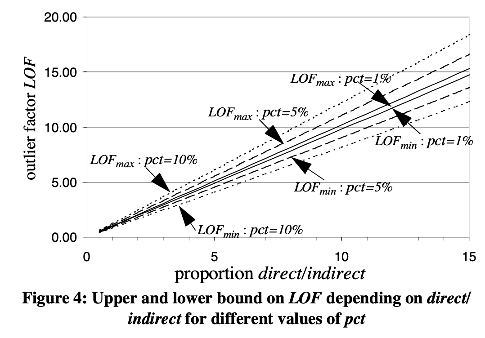
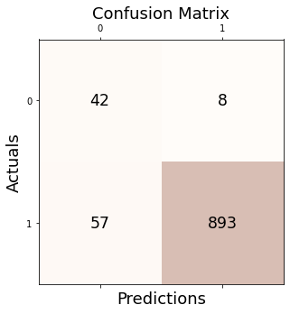
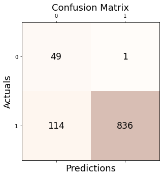
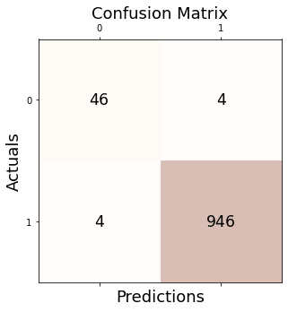
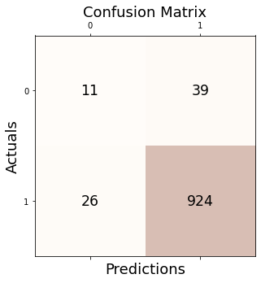

[
[0.978 , 0.989 , 0.987 , 0.988 ],
[0.932 , 0.991 , 0.937 , 0.963 ],
[0.935 , 0.993 , 0.938 , 0.965 ],
[0.915 , 0.982 , 0.928 , 0.965 ],
[0.977 , 0.989 , 0.987 , 0.988 ],
[0.794 , 0.995 , 0.788 , 0.879 ],
[
|Stanford Bunny 논문|Accuracy|Precision|Recall|F1|
|:--:|:--:|:--:|:--:|:--:|
|GODE|[0.995|0.995|0.999|0.997|
|LOF (Breunig et al., 2000)|0.928|0.957|0.869|0.963|
|kNN (Ramaswamy et al., 2000)|0.948|0.999|0.946|0.972|
|CBLOF (He et al., 2003)|0.918|0.957|0.9
|OCSVM (Sch ̈olkopf et al., 2001)|0.923|0.9
|MCD (Hardin and Rocke, 2004)|0.866|0.953|0
|Feature Bagging (Lazarevic and Kumar, 2005)|0.912.952|
|ABOD (Kriegel et al., 2008)|0.988|0.994|0.99
|Isolation Forest (Liu et al., 2008)|0.378|
|HBOS (Goldstein and Dengel, 2012)|0.895|0.969|0.919|0.944|
|SOS (Janssens et al., 2012)|0.895|0.969|0.919|0.944|
|SO-GAAL (Liu et al., 2019)|0.952|0.952|1.000|0.975|
|MO-GAAL (Liu et al., 2019)|0.952|0.952|1.000|0.975|
|LSCP (Zhao et al., 2019)|0.940|0.996|0.941|0.967|
Note
knn, cblof, ocsvm 을 제외한 이상치 탐지 기법들에 데이터 집합에서 이상치 비율을 지정할 수 있는 옵션이 존재하였음.
default값은 10%인데, ABOD 방법에서는 5로 지정해주었고, 다른 방법들은 default인 10%가 들어갔다.
일단 우리 방법이랑 비교해서 좋은지 보기
| Simple Linear 논문 | Accuracy | Precision | Recall | F1 |
|---|---|---|---|---|
| GODE | 0.998 | 0.998 | 1.000 | 0.994 |
| LOF (Breunig et al., 2000) | 0.871 | 0.962 | 0.900 | 0.930 |
| kNN (Ramaswamy et al., 2000) | 0.950 | 1.000 | 0.947 | 0.973 |
| CBLOF (He et al., 2003) | 0.972 | 0.985 | 0.985 | 0.985 |
| OCSVM (Sch ̈olkopf et al., 2001) | 0.940 | 0.994 | 0.942 | 0.968 |
| MCD (Hardin and Rocke, 2004) | 0.950 | 1.000 | 0.947 | 0.973 |
| Feature Bagging (Lazarevic and Kumar, 2005) | 0.950 | 1.000 | 0.947 | 0.973 |
| ABOD (Kriegel et al., 2008) | 0.988 | 0.994 | 0.994 | 0.994 |
| Isolation Forest (Liu et al., 2008) | 0.889 | 1.000 | 0.883 | 0.938 |
| HBOS (Goldstein and Dengel, 2012) | 0.960 | 0.978 | 0.980 | 0.979 |
| SOS (Janssens et al., 2012) | 0.960 | 0.978 | 0.980 | 0.979 |
| SO-GAAL (Liu et al., 2019) | 0.895 | 0.969 | 0.919 | 0.943 |
| MO-GAAL (Liu et al., 2019) | 0.896 | 0.970 | 0.919 | 0.944 |
| LSCP (Zhao et al., 2019) | 0.950 | 1.000 | 0.947 | 0.973 |
| Simple Linear 5% | Accuracy | Precision | Recall | F1 |
|---|---|---|---|---|
| GODE | 0.994 | 0.997 | 0.997 | 0.997 |
| LOF (Breunig et al., 2000) | 0.926 | 0.961 | 0.961 | 0.961 |
| KNN | ||||
| CBLOF | ||||
| OCSVM (Sch ̈olkopf et al., 2001) | ||||
| MCD (Hardin and Rocke, 2004) | 0.998 | 0.999 | 0.999 | 0.999 |
| Feature Bagging (Lazarevic and Kumar, 2005) | 0.984 | 0.992 | 0.992 | 0.992 |
| ABOD (Kriegel et al., 2008) | 0.988 | 0.994 | 0.994 | 0.994 |
| Isolation Forest (Liu et al., 2008) | 0.885 | 0.999 | 0.880 | 0.936 |
| HBOS (Goldstein and Dengel, 2012) | 0.960 | 0.978 | 0.980 | 0.979 |
| SOS (Janssens et al., 2012) | 0.916 | 0.956 | 0.956 | 0.956 |
| SO-GAAL (Liu et al., 2019) | 0.936 | 0.966 | 0.966 | 0.966 |
| MO-GAAL (Liu et al., 2019) | 0.943 | 0.966 | 0.975 | 0.970 |
| LSCP (Zhao et al., 2019) | 0.992 | 0.996 | 0.996 | 0.996 |
| Orbit 논문 | Accuracy | Precision | Recall | F1 |
|---|---|---|---|---|
| GODE | 0.997 | 0.997 | 1.000 | 0.998 |
| LOF (Breunig et al., 2000) | 0.886 | 0.987 | 0.892 | 0.937 |
| kNN (Ramaswamy et al., 2000) | 0.948 | 0.999 | 0.946 | 0.972 |
| CBLOF (He et al., 2003) | 0.918 | 0.957 | 0.957 | 0.957 |
| OCSVM (Sch ̈olkopf et al., 2001) | 0.923 | 0.988 | 0.931 | 0.958 |
| MCD (Hardin and Rocke, 2004) | 0.866 | 0.953 | 0.903 | 0.928 |
| Feature Bagging (Lazarevic and Kumar, 2005) | 0.912 | 0.979 | 0.927 | 0.952 |
| ABOD (Kriegel et al., 2008) | 0.988 | 0.994 | 0.994 | 0.994 |
| Isolation Forest (Liu et al., 2008) | 0.378 | 0.997 | 0.346 | 0.514 |
| HBOS (Goldstein and Dengel, 2012) | 0.881 | 0.961 | 0.912 | 0.936 |
| SOS (Janssens et al., 2012) | 0.881 | 0.961 | 0.912 | 0.936 |
| SO-GAAL (Liu et al., 2019) | 0.876 | 0.959 | 0.908 | 0.933 |
| MO-GAAL (Liu et al., 2019) | 0.950 | 0.950 | 1.000 | 0.974 |
| LSCP (Zhao et al., 2019) | 0.948 | 0.999 | 0.946 | 0.972 |
| Orbit 5% | Accuracy | Precision | Recall | F1 |
|---|---|---|---|---|
| GODE | 0.998 | 0.999 | 0.999 | 0.999 |
| LOF (Breunig et al., 2000) | 0.954 | 0.976 | 0.976 | 0.976 |
| KNN | ||||
| CBLOF | ||||
| OCSVM (Sch ̈olkopf et al., 2001) | ||||
| MCD (Hardin and Rocke, 2004) | 0.916 | 0.956 | 0.956 | 0.956 |
| Feature Bagging (Lazarevic and Kumar, 2005) | 0.942 | 0.969 | 0.969 | 0.969 |
| ABOD (Kriegel et al., 2008) | 0.988 | 0.994 | 0.994 | 0.994 |
| Isolation Forest (Liu et al., 2008) | 0.443 | 0.992 | 0.417 | 0.587 |
| HBOS (Goldstein and Dengel, 2012) | 0.935 | 0.960 | 0.973 | 0.966 |
| SOS (Janssens et al., 2012) | 0.950 | 0.974 | 0.974 | 0.974 |
| SO-GAAL (Liu et al., 2019) | 0.950 | 0.950 | 1.000 | 0.974 |
| MO-GAAL (Liu et al., 2019) | 0.950 | 0.950 | 1.000 | 0.974 |
| LSCP (Zhao et al., 2019) | 0.988 | 0.994 | 0.994 | 0.994 |
Import
import numpy as np
import matplotlib.pyplot as plt
import matplotlib
from sklearn.svm import OneClassSVM
from sklearn.linear_model import SGDOneClassSVM
from sklearn.kernel_approximation import Nystroem
from sklearn.pipeline import make_pipeline
import pandas as pd
from sklearn.neighbors import LocalOutlierFactor
import rpy2
import rpy2.robjects as ro
from rpy2.robjects.vectors import FloatVector
from rpy2.robjects.packages import importr
from sklearn.datasets import fetch_kddcup99, fetch_covtype, fetch_openml
from sklearn.preprocessing import LabelBinarizer
import tqdm
from pygsp import graphs, filters, plotting, utils
from sklearn.metrics import confusion_matrix
from sklearn.metrics import precision_score, recall_score, f1_score, accuracy_score
import plotly.graph_objects as go
from IPython.display import HTML
import plotly.express as px
from sklearn.covariance import EmpiricalCovariance, MinCovDet
from alibi_detect.od import IForest
# from pyod.models.iforest import IForest
from pyod.models.abod import ABOD
from pyod.models.cblof import CBLOF
import seaborn as sns
from PyNomaly import loop
from sklearn import svm
from pyod.models.lscp import LSCP
from pyod.models.hbos import HBOS
from pyod.models.so_gaal import SO_GAAL
from pyod.models.mcd import MCD
from pyod.models.mo_gaal import MO_GAAL
from pyod.models.knn import KNN
from pyod.models.lof import LOF
from pyod.models.ocsvm import OCSVM
from pyod.models.feature_bagging import FeatureBagging
from pyod.models.sos import SOSfrom pygsp import graphs, filters, plotting, utilsClass Code
tab_linear = pd.DataFrame(columns=["Accuracy","Precision","Recall","F1"])
tab_orbit = pd.DataFrame(columns=["Accuracy","Precision","Recall","F1"])
tab_bunny = pd.DataFrame(columns=["Accuracy","Precision","Recall","F1"])class Conf_matrx:
def __init__(self,original,compare,tab):
self.original = original
self.compare = compare
self.tab = tab
def conf(self,name):
self.conf_matrix = confusion_matrix(self.original, self.compare)
fig, ax = plt.subplots(figsize=(5, 5))
ax.matshow(self.conf_matrix, cmap=plt.cm.Oranges, alpha=0.3)
for i in range(self.conf_matrix.shape[0]):
for j in range(self.conf_matrix.shape[1]):
ax.text(x=j, y=i,s=self.conf_matrix[i, j], va='center', ha='center', size='xx-large')
plt.xlabel('Predictions', fontsize=18)
plt.ylabel('Actuals', fontsize=18)
plt.title('Confusion Matrix', fontsize=18)
plt.show()
self.acc = accuracy_score(self.original, self.compare)
self.pre = precision_score(self.original, self.compare)
self.rec = recall_score(self.original, self.compare)
self.f1 = f1_score(self.original, self.compare)
print('Accuracy: %.3f' % self.acc)
print('Precision: %.3f' % self.pre)
print('Recall: %.3f' % self.rec)
print('F1 Score: %.3f' % self.f1)
self.tab = self.tab.append(pd.DataFrame({"Accuracy":[self.acc],"Precision":[self.pre],"Recall":[self.rec],"F1":[self.f1]},index = [name]))class Linear:
def __init__(self,df):
self.df = df
self.y = df.y.to_numpy()
#self.y1 = df.y1.to_numpy()
self.x = df.x.to_numpy()
self.n = len(self.y)
self.W = w
def _eigen(self):
d= self.W.sum(axis=1)
D= np.diag(d)
self.L = np.diag(1/np.sqrt(d)) @ (D-self.W) @ np.diag(1/np.sqrt(d))
self.lamb, self.Psi = np.linalg.eigh(self.L)
self.Lamb = np.diag(self.lamb)
def fit(self,sd=20): # fit with ebayesthresh
self._eigen()
self.ybar = self.Psi.T @ self.y # fbar := graph fourier transform of f
self.power = self.ybar**2
ebayesthresh = importr('EbayesThresh').ebayesthresh
self.power_threshed=np.array(ebayesthresh(FloatVector(self.ybar**2),sd=sd))
self.ybar_threshed = np.where(self.power_threshed>0,self.ybar,0)
self.yhat = self.Psi@self.ybar_threshed
self.df = self.df.assign(yHat = self.yhat)
self.df = self.df.assign(Residual = self.df.y- self.df.yHat)class Orbit:
def __init__(self,df):
self.df = df
self.f = df.f.to_numpy()
self.x = df.x.to_numpy()
self.y = df.y.to_numpy()
self.n = len(self.f)
self.theta= None
def get_distance(self):
self.D = np.zeros([self.n,self.n])
locations = np.stack([self.x, self.y],axis=1)
for i in tqdm.tqdm(range(self.n)):
for j in range(i,self.n):
self.D[i,j]=np.linalg.norm(locations[i]-locations[j])
self.D = self.D + self.D.T
def get_weightmatrix(self,theta=1,beta=0.5,kappa=4000):
self.theta = theta
dist = np.where(self.D < kappa,self.D,0)
self.W = np.exp(-(dist/self.theta)**2)
def _eigen(self):
d= self.W.sum(axis=1)
D= np.diag(d)
self.L = np.diag(1/np.sqrt(d)) @ (D-self.W) @ np.diag(1/np.sqrt(d))
self.lamb, self.Psi = np.linalg.eigh(self.L)
self.Lamb = np.diag(self.lamb)
def fit(self,sd=5,ref=20): # fit with ebayesthresh
self._eigen()
self.fbar = self.Psi.T @ self.f # fbar := graph fourier transform of f
self.power = self.fbar**2
ebayesthresh = importr('EbayesThresh').ebayesthresh
self.power_threshed=np.array(ebayesthresh(FloatVector(self.fbar**2),sd=sd))
self.fbar_threshed = np.where(self.power_threshed>0,self.fbar,0)
self.fhat = self.Psi@self.fbar_threshed
self.df = self.df.assign(fHat = self.fhat)
self.df = self.df.assign(Residual = self.df.f- self.df.fHat)
self.bottom = np.zeros_like(self.f)
self.width=0.05
self.depth=0.05class BUNNY:
def __init__(self,df):
self.df = df
self.f = df.f.to_numpy()
self.z = df.z.to_numpy()
self.x = df.x.to_numpy()
self.y = df.y.to_numpy()
self.noise = df.noise.to_numpy()
self.fnoise = self.f + self.noise
self.W = _W
self.n = len(self.f)
self.theta= None
def _eigen(self):
d= self.W.sum(axis=1)
D= np.diag(d)
self.L = np.diag(1/np.sqrt(d)) @ (D-self.W) @ np.diag(1/np.sqrt(d))
self.lamb, self.Psi = np.linalg.eigh(self.L)
self.Lamb = np.diag(self.lamb)
def fit(self,sd=5,ref=6): # fit with ebayesthresh
self._eigen()
self.fbar = self.Psi.T @ self.fnoise # fbar := graph fourier transform of f
self.power = self.fbar**2
ebayesthresh = importr('EbayesThresh').ebayesthresh
self.power_threshed=np.array(ebayesthresh(FloatVector(self.fbar**2),sd=sd))
self.fbar_threshed = np.where(self.power_threshed>0,self.fbar,0)
self.fhat = self.Psi@self.fbar_threshed
self.df = self.df.assign(fnoise = self.fnoise)
self.df = self.df.assign(fHat = self.fhat)
self.df = self.df.assign(Residual = self.df.f + self.df.noise - self.df.fHat)
self.bottom = np.zeros_like(self.f)
self.width=0.05
self.depth=0.05Linear EbayesThresh
%load_ext rpy2.ipythonThe rpy2.ipython extension is already loaded. To reload it, use:
%reload_ext rpy2.ipython%%R
library(EbayesThresh)
set.seed(1)
epsilon = rnorm(1000)
# signal_1 = sample(c(runif(25,-2,-1.5), runif(25,1.5,2), rep(0,950)))
signal_1 = sample(c(runif(25,-7,-5), runif(25,5,7), rep(0,950)))
index_of_trueoutlier_1 = which(signal_1!=0)
index_of_trueoutlier_1
x_1=signal_1+epsilon%R -o x_1
%R -o index_of_trueoutlier_1
%R -o signal_1ebayesthresh = importr('EbayesThresh').ebayesthreshoutlier_true_index_1 = index_of_trueoutlier_1outlier_true_value_1 = x_1[index_of_trueoutlier_1]outlier_true_one_1 = signal_1.copy()outlier_true_one_1 = list(map(lambda x: -1 if x!=0 else 1,outlier_true_one_1))Linear
_x_1 = np.linspace(0,2,1000)
_y1_1 = 5*_x_1
_y_1 = _y1_1 + x_1 # x is epsilon_df=pd.DataFrame({'x':_x_1, 'y':_y_1})X = np.array(_df)GODE
w=np.zeros((1000,1000))for i in range(1000):
for j in range(1000):
if i==j :
w[i,j] = 0
elif np.abs(i-j) <= 1 :
w[i,j] = 1_Linear = Linear(_df)_Linear.fit(sd=5)outlier_simul_one = (_Linear.df['Residual']**2).tolist()outlier_simul_one = list(map(lambda x: -1 if x > 10.7 else 1,outlier_simul_one))_conf = Conf_matrx(outlier_true_one_1,outlier_simul_one,tab_linear)outlier_simul_one.count(1)950outlier_simul_one.count(-1)50_conf.conf("GODE")Accuracy: 0.994
Precision: 0.997
Recall: 0.997
F1 Score: 0.997FutureWarning: The frame.append method is deprecated and will be removed from pandas in a future version. Use pandas.concat instead.
self.tab = self.tab.append(pd.DataFrame({"Accuracy":[self.acc],"Precision":[self.pre],"Recall":[self.rec],"F1":[self.f1]},index = [name]))_conf.tab| Accuracy | Precision | Recall | F1 | |
|---|---|---|---|---|
| GODE | 0.994 | 0.996842 | 0.996842 | 0.996842 |
LOF(Breunig et al. 2000)\(\star\)
clf = LocalOutlierFactor(n_neighbors=2,contamination=0.05)Lof 논문 원문에 따라 LOF를 계산하고, min-max 범위를 넘으면 이상치

_conf = Conf_matrx(outlier_true_one_1,clf.fit_predict(X),tab_linear)_conf.conf("LOF (Breunig et al., 2000)")
Accuracy: 0.926
Precision: 0.961
Recall: 0.961
F1 Score: 0.961FutureWarning: The frame.append method is deprecated and will be removed from pandas in a future version. Use pandas.concat instead.
self.tab = self.tab.append(pd.DataFrame({"Accuracy":[self.acc],"Precision":[self.pre],"Recall":[self.rec],"F1":[self.f1]},index = [name]))tab_linear.append(_conf.tab)FutureWarning: The frame.append method is deprecated and will be removed from pandas in a future version. Use pandas.concat instead.
tab_linear.append(_conf.tab)| Accuracy | Precision | Recall | F1 | |
|---|---|---|---|---|
| LOF (Breunig et al., 2000) | 0.926 | 0.961053 | 0.961053 | 0.961053 |
KNN
from pyod.models.knn import KNNclf = KNN()
clf.fit(_df[['x', 'y']])
_df['knn_Clf'] = clf.labels_k번째 이상은 outlier로 본다.
이상치 비율 정하지 않음
Three kNN detectors are supported:
- largest: use the distance to the kth neighbor as the outlier score
- mean: use the average of all k neighbors as the outlier score
- median: use the median of the distance to k neighbors as the outlier score
outlier_KNN_one = list(clf.labels_)outlier_KNN_one = list(map(lambda x: 1 if x==0 else -1,outlier_KNN_one))_conf = Conf_matrx(outlier_true_one_1,outlier_KNN_one,tab_linear)_conf.conf("kNN (Ramaswamy et al., 2000)")three = two.append(_conf.tab)CBLOF(오류)
clf = CBLOF(contamination=0.05,check_estimator=False, random_state=77)
clf.fit(_df[['x', 'y']])
_df['CBLOF_Clf'] = clf.labels_outlier_CBLOF_one = list(clf.labels_)outlier_CBLOF_one = list(map(lambda x: 1 if x==0 else -1,outlier_CBLOF_one))_conf = Conf_matrx(outlier_true_one_1,outlier_CBLOF_one,tab_linear)_conf.conf("CBLOF (He et al., 2003)")four = three.append(_conf.tab)OCSVM
default=10%
clf = svm.OneClassSVM(nu=0.1, kernel="rbf", gamma=0.05)clf.fit(X)OneClassSVM(gamma=0.05, nu=0.1)In a Jupyter environment, please rerun this cell to show the HTML representation or trust the notebook.
On GitHub, the HTML representation is unable to render, please try loading this page with nbviewer.org.
OneClassSVM(gamma=0.05, nu=0.1)
outlier_OSVM_one = list(clf.predict(X))_conf = Conf_matrx(outlier_true_one_1,outlier_OSVM_one,tab_linear)_conf.conf("OCSVM (Sch ̈olkopf et al., 2001)")
Accuracy: 0.935
Precision: 0.991
Recall: 0.940
F1 Score: 0.965FutureWarning: The frame.append method is deprecated and will be removed from pandas in a future version. Use pandas.concat instead.
self.tab = self.tab.append(pd.DataFrame({"Accuracy":[self.acc],"Precision":[self.pre],"Recall":[self.rec],"F1":[self.f1]},index = [name]))_conf.tab| Accuracy | Precision | Recall | F1 | |
|---|---|---|---|---|
| OCSVM (Sch ̈olkopf et al., 2001) | 0.935 | 0.991121 | 0.94 | 0.964884 |
MCD\(\star\)
clf = MCD(contamination=0.05)
clf.fit(_df[['x', 'y']])
_df['MCD_clf'] = clf.labels_outlier_MCD_one = list(clf.labels_)outlier_MCD_one = list(map(lambda x: 1 if x==0 else -1,outlier_MCD_one))_conf = Conf_matrx(outlier_true_one_1,outlier_MCD_one,tab_linear)_conf.conf("MCD (Hardin and Rocke, 2004)")
Accuracy: 0.998
Precision: 0.999
Recall: 0.999
F1 Score: 0.999FutureWarning: The frame.append method is deprecated and will be removed from pandas in a future version. Use pandas.concat instead.
self.tab = self.tab.append(pd.DataFrame({"Accuracy":[self.acc],"Precision":[self.pre],"Recall":[self.rec],"F1":[self.f1]},index = [name]))_conf.tab| Accuracy | Precision | Recall | F1 | |
|---|---|---|---|---|
| MCD (Hardin and Rocke, 2004) | 0.998 | 0.998947 | 0.998947 | 0.998947 |
Feature Bagging\(\star\)
default값은 10%로 설정되어 있었고, 5%로 지정한 결과, 평가지표값이 전반적으로 1%이상 낮아졌다.
clf = FeatureBagging(contamination=0.05)
clf.fit(_df[['x', 'y']])
_df['FeatureBagging_clf'] = clf.labels_outlier_FeatureBagging_one = list(clf.labels_)outlier_FeatureBagging_one = list(map(lambda x: 1 if x==0 else -1,outlier_FeatureBagging_one))_conf = Conf_matrx(outlier_true_one_1,outlier_FeatureBagging_one,tab_linear)_conf.conf("Feature Bagging (Lazarevic and Kumar, 2005)")Accuracy: 0.984
Precision: 0.992
Recall: 0.992
F1 Score: 0.992FutureWarning: The frame.append method is deprecated and will be removed from pandas in a future version. Use pandas.concat instead.
self.tab = self.tab.append(pd.DataFrame({"Accuracy":[self.acc],"Precision":[self.pre],"Recall":[self.rec],"F1":[self.f1]},index = [name]))_conf.tab| Accuracy | Precision | Recall | F1 | |
|---|---|---|---|---|
| Feature Bagging (Lazarevic and Kumar, 2005) | 0.984 | 0.991579 | 0.991579 | 0.991579 |
ABOD\(\star\)
default 값이 5%이며, 이미 지정된 채려 시뮬레이션 돌림
clf = ABOD(contamination=0.05)
clf.fit(_df[['x', 'y']])
_df['ABOD_Clf'] = clf.labels_contamination : float in (0., 0.5), optional (default=0.1)
- The amount of contamination of the data set, i.e.
- the proportion of outliers in the data set. Used when fitting to define the threshold on the decision function.
outlier_ABOD_one = list(clf.labels_)outlier_ABOD_one = list(map(lambda x: 1 if x==0 else -1,outlier_ABOD_one))_conf = Conf_matrx(outlier_true_one_1,outlier_ABOD_one,tab_linear)_conf.conf("ABOD (Kriegel et al., 2008)")
Accuracy: 0.988
Precision: 0.994
Recall: 0.994
F1 Score: 0.994FutureWarning: The frame.append method is deprecated and will be removed from pandas in a future version. Use pandas.concat instead.
self.tab = self.tab.append(pd.DataFrame({"Accuracy":[self.acc],"Precision":[self.pre],"Recall":[self.rec],"F1":[self.f1]},index = [name]))_conf.tab| Accuracy | Precision | Recall | F1 | |
|---|---|---|---|---|
| ABOD (Kriegel et al., 2008) | 0.988 | 0.993684 | 0.993684 | 0.993684 |
IForest\(\star\)
n_estimators Number of base estimators in the ensemble.
- n이 총 1000개니까 5%인 50 지정해줄 수 있음
od = IForest(
threshold=0.,
n_estimators=50
)od.fit(_df[['x', 'y']])preds = od.predict(
_df[['x', 'y']],
return_instance_score=True
)_df['IF_alibi'] = preds['data']['is_outlier']outlier_alibi_one = _df['IF_alibi']outlier_alibi_one = list(map(lambda x: 1 if x==0 else -1,outlier_alibi_one))_conf = Conf_matrx(outlier_true_one_1,outlier_alibi_one,tab_linear)_conf.conf("Isolation Forest (Liu et al., 2008)")
Accuracy: 0.885
Precision: 0.999
Recall: 0.880
F1 Score: 0.936FutureWarning: The frame.append method is deprecated and will be removed from pandas in a future version. Use pandas.concat instead.
self.tab = self.tab.append(pd.DataFrame({"Accuracy":[self.acc],"Precision":[self.pre],"Recall":[self.rec],"F1":[self.f1]},index = [name]))_conf.tab| Accuracy | Precision | Recall | F1 | |
|---|---|---|---|---|
| Isolation Forest (Liu et al., 2008) | 0.885 | 0.998805 | 0.88 | 0.935646 |
HBOS\(\star\)
default값은 이상치값을 10%로 지정하였으며, 5%로 지정한 결과 값 다 작아짐
clf = HBOS(contamination=0.05)
clf.fit(_df[['x', 'y']])
_df['HBOS_clf'] = clf.labels_outlier_HBOS_one = list(clf.labels_)outlier_HBOS_one = list(map(lambda x: 1 if x==0 else -1,outlier_HBOS_one))_conf = Conf_matrx(outlier_true_one_1,outlier_HBOS_one,tab_linear)_conf.conf("HBOS (Goldstein and Dengel, 2012)")
Accuracy: 0.960
Precision: 0.978
Recall: 0.980
F1 Score: 0.979FutureWarning: The frame.append method is deprecated and will be removed from pandas in a future version. Use pandas.concat instead.
self.tab = self.tab.append(pd.DataFrame({"Accuracy":[self.acc],"Precision":[self.pre],"Recall":[self.rec],"F1":[self.f1]},index = [name]))_conf.tab| Accuracy | Precision | Recall | F1 | |
|---|---|---|---|---|
| HBOS (Goldstein and Dengel, 2012) | 0.96 | 0.977941 | 0.98 | 0.97897 |
SOS\(\star\)
default 는 10%
clf = SOS(contamination=0.05)
clf.fit(_df[['x', 'y']])
_df['SOS_clf'] = clf.labels_outlier_SOS_one = list(clf.labels_)outlier_SOS_one = list(map(lambda x: 1 if x==0 else -1,outlier_SOS_one))_conf = Conf_matrx(outlier_true_one_1,outlier_SOS_one,tab_linear)_conf.conf("SOS (Janssens et al., 2012)")Accuracy: 0.916
Precision: 0.956
Recall: 0.956
F1 Score: 0.956FutureWarning: The frame.append method is deprecated and will be removed from pandas in a future version. Use pandas.concat instead.
self.tab = self.tab.append(pd.DataFrame({"Accuracy":[self.acc],"Precision":[self.pre],"Recall":[self.rec],"F1":[self.f1]},index = [name]))_conf.tab| Accuracy | Precision | Recall | F1 | |
|---|---|---|---|---|
| SOS (Janssens et al., 2012) | 0.916 | 0.955789 | 0.955789 | 0.955789 |
SO_GAAL
clf = SO_GAAL(contamination=0.05)
clf.fit(_df[['x', 'y']])
_df['SO_GAAL_clf'] = clf.labels_Epoch 1 of 60
Testing for epoch 1 index 1:/home/csy/anaconda3/envs/temp_csy/lib/python3.8/site-packages/keras/optimizers/legacy/gradient_descent.py:114: UserWarning: The `lr` argument is deprecated, use `learning_rate` instead.
super().__init__(name, **kwargs)
Testing for epoch 1 index 2:
Epoch 2 of 60
Testing for epoch 2 index 1:
Testing for epoch 2 index 2:
Epoch 3 of 60
Testing for epoch 3 index 1:
Testing for epoch 3 index 2:
Epoch 4 of 60
Testing for epoch 4 index 1:
Testing for epoch 4 index 2:
Epoch 5 of 60
Testing for epoch 5 index 1:
Testing for epoch 5 index 2:
Epoch 6 of 60
Testing for epoch 6 index 1:
Testing for epoch 6 index 2:
Epoch 7 of 60
Testing for epoch 7 index 1:
Testing for epoch 7 index 2:
Epoch 8 of 60
Testing for epoch 8 index 1:
Testing for epoch 8 index 2:
Epoch 9 of 60
Testing for epoch 9 index 1:
Testing for epoch 9 index 2:
Epoch 10 of 60
Testing for epoch 10 index 1:
Testing for epoch 10 index 2:
Epoch 11 of 60
Testing for epoch 11 index 1:
Testing for epoch 11 index 2:
Epoch 12 of 60
Testing for epoch 12 index 1:
Testing for epoch 12 index 2:
Epoch 13 of 60
Testing for epoch 13 index 1:
Testing for epoch 13 index 2:
Epoch 14 of 60
Testing for epoch 14 index 1:
Testing for epoch 14 index 2:
Epoch 15 of 60
Testing for epoch 15 index 1:
Testing for epoch 15 index 2:
Epoch 16 of 60
Testing for epoch 16 index 1:
Testing for epoch 16 index 2:
Epoch 17 of 60
Testing for epoch 17 index 1:
Testing for epoch 17 index 2:
Epoch 18 of 60
Testing for epoch 18 index 1:
Testing for epoch 18 index 2:
Epoch 19 of 60
Testing for epoch 19 index 1:
Testing for epoch 19 index 2:
Epoch 20 of 60
Testing for epoch 20 index 1:
Testing for epoch 20 index 2:
Epoch 21 of 60
Testing for epoch 21 index 1:
Testing for epoch 21 index 2:
Epoch 22 of 60
Testing for epoch 22 index 1:
16/16 [==============================] - 0s 862us/step - loss: 1.0640
Testing for epoch 22 index 2:
16/16 [==============================] - 0s 827us/step - loss: 1.0818
Epoch 23 of 60
Testing for epoch 23 index 1:
16/16 [==============================] - 0s 853us/step - loss: 1.0984
Testing for epoch 23 index 2:
16/16 [==============================] - 0s 846us/step - loss: 1.1023
Epoch 24 of 60
Testing for epoch 24 index 1:
16/16 [==============================] - 0s 851us/step - loss: 1.1116
Testing for epoch 24 index 2:
16/16 [==============================] - 0s 830us/step - loss: 1.1127
Epoch 25 of 60
Testing for epoch 25 index 1:
16/16 [==============================] - 0s 815us/step - loss: 1.1359
Testing for epoch 25 index 2:
16/16 [==============================] - 0s 812us/step - loss: 1.1429
Epoch 26 of 60
Testing for epoch 26 index 1:
16/16 [==============================] - 0s 808us/step - loss: 1.1177
Testing for epoch 26 index 2:
16/16 [==============================] - 0s 785us/step - loss: 1.1457
Epoch 27 of 60
Testing for epoch 27 index 1:
16/16 [==============================] - 0s 805us/step - loss: 1.1468
Testing for epoch 27 index 2:
16/16 [==============================] - 0s 802us/step - loss: 1.1501
Epoch 28 of 60
Testing for epoch 28 index 1:
16/16 [==============================] - 0s 802us/step - loss: 1.1816
Testing for epoch 28 index 2:
16/16 [==============================] - 0s 797us/step - loss: 1.1725
Epoch 29 of 60
Testing for epoch 29 index 1:
16/16 [==============================] - 0s 796us/step - loss: 1.1822
Testing for epoch 29 index 2:
16/16 [==============================] - 0s 798us/step - loss: 1.1752
Epoch 30 of 60
Testing for epoch 30 index 1:
16/16 [==============================] - 0s 868us/step - loss: 1.1898
Testing for epoch 30 index 2:
16/16 [==============================] - 0s 805us/step - loss: 1.2337
Epoch 31 of 60
Testing for epoch 31 index 1:
16/16 [==============================] - 0s 819us/step - loss: 1.2280
Testing for epoch 31 index 2:
16/16 [==============================] - 0s 1ms/step - loss: 1.2237
Epoch 32 of 60
Testing for epoch 32 index 1:
16/16 [==============================] - 0s 816us/step - loss: 1.2403
Testing for epoch 32 index 2:
16/16 [==============================] - 0s 1ms/step - loss: 1.2572
Epoch 33 of 60
Testing for epoch 33 index 1:
16/16 [==============================] - 0s 1ms/step - loss: 1.2652
Testing for epoch 33 index 2:
16/16 [==============================] - 0s 809us/step - loss: 1.2678
Epoch 34 of 60
Testing for epoch 34 index 1:
16/16 [==============================] - 0s 801us/step - loss: 1.2597
Testing for epoch 34 index 2:
16/16 [==============================] - 0s 801us/step - loss: 1.2931
Epoch 35 of 60
Testing for epoch 35 index 1:
16/16 [==============================] - 0s 804us/step - loss: 1.2927
Testing for epoch 35 index 2:
16/16 [==============================] - 0s 815us/step - loss: 1.3224
Epoch 36 of 60
Testing for epoch 36 index 1:
16/16 [==============================] - 0s 808us/step - loss: 1.3126
Testing for epoch 36 index 2:
16/16 [==============================] - 0s 812us/step - loss: 1.3397
Epoch 37 of 60
Testing for epoch 37 index 1:
16/16 [==============================] - 0s 802us/step - loss: 1.3516
Testing for epoch 37 index 2:
16/16 [==============================] - 0s 798us/step - loss: 1.3297
Epoch 38 of 60
Testing for epoch 38 index 1:
16/16 [==============================] - 0s 800us/step - loss: 1.3493
Testing for epoch 38 index 2:
16/16 [==============================] - 0s 826us/step - loss: 1.3447
Epoch 39 of 60
Testing for epoch 39 index 1:
16/16 [==============================] - 0s 803us/step - loss: 1.3573
Testing for epoch 39 index 2:
16/16 [==============================] - 0s 799us/step - loss: 1.3643
Epoch 40 of 60
Testing for epoch 40 index 1:
16/16 [==============================] - 0s 809us/step - loss: 1.3702
Testing for epoch 40 index 2:
16/16 [==============================] - 0s 800us/step - loss: 1.4059
Epoch 41 of 60
Testing for epoch 41 index 1:
16/16 [==============================] - 0s 802us/step - loss: 1.4023
Testing for epoch 41 index 2:
16/16 [==============================] - 0s 875us/step - loss: 1.3997
Epoch 42 of 60
Testing for epoch 42 index 1:
16/16 [==============================] - 0s 796us/step - loss: 1.4110
Testing for epoch 42 index 2:
16/16 [==============================] - 0s 796us/step - loss: 1.4132
Epoch 43 of 60
Testing for epoch 43 index 1:
16/16 [==============================] - 0s 791us/step - loss: 1.4308
Testing for epoch 43 index 2:
16/16 [==============================] - 0s 804us/step - loss: 1.4205
Epoch 44 of 60
Testing for epoch 44 index 1:
16/16 [==============================] - 0s 801us/step - loss: 1.4429
Testing for epoch 44 index 2:
16/16 [==============================] - 0s 785us/step - loss: 1.4500
Epoch 45 of 60
Testing for epoch 45 index 1:
16/16 [==============================] - 0s 813us/step - loss: 1.4560
Testing for epoch 45 index 2:
16/16 [==============================] - 0s 1ms/step - loss: 1.4629
Epoch 46 of 60
Testing for epoch 46 index 1:
16/16 [==============================] - 0s 1ms/step - loss: 1.4531
Testing for epoch 46 index 2:
16/16 [==============================] - 0s 1ms/step - loss: 1.4627
Epoch 47 of 60
Testing for epoch 47 index 1:
16/16 [==============================] - 0s 868us/step - loss: 1.4971
Testing for epoch 47 index 2:
16/16 [==============================] - 0s 871us/step - loss: 1.5024
Epoch 48 of 60
Testing for epoch 48 index 1:
16/16 [==============================] - 0s 801us/step - loss: 1.4855
Testing for epoch 48 index 2:
16/16 [==============================] - 0s 877us/step - loss: 1.5128
Epoch 49 of 60
Testing for epoch 49 index 1:
16/16 [==============================] - 0s 872us/step - loss: 1.5061
Testing for epoch 49 index 2:
16/16 [==============================] - 0s 872us/step - loss: 1.5104
Epoch 50 of 60
Testing for epoch 50 index 1:
16/16 [==============================] - 0s 871us/step - loss: 1.5186
Testing for epoch 50 index 2:
16/16 [==============================] - 0s 890us/step - loss: 1.5191
Epoch 51 of 60
Testing for epoch 51 index 1:
16/16 [==============================] - 0s 690us/step - loss: 1.5765
Testing for epoch 51 index 2:
16/16 [==============================] - 0s 802us/step - loss: 1.5212
Epoch 52 of 60
Testing for epoch 52 index 1:
16/16 [==============================] - 0s 1ms/step - loss: 1.5610
Testing for epoch 52 index 2:
16/16 [==============================] - 0s 2ms/step - loss: 1.5390
Epoch 53 of 60
Testing for epoch 53 index 1:
16/16 [==============================] - 0s 822us/step - loss: 1.5472
Testing for epoch 53 index 2:
16/16 [==============================] - 0s 1ms/step - loss: 1.5762
Epoch 54 of 60
Testing for epoch 54 index 1:
16/16 [==============================] - 0s 2ms/step - loss: 1.5946
Testing for epoch 54 index 2:
16/16 [==============================] - 0s 988us/step - loss: 1.6020
Epoch 55 of 60
Testing for epoch 55 index 1:
16/16 [==============================] - 0s 2ms/step - loss: 1.6007
Testing for epoch 55 index 2:
16/16 [==============================] - 0s 2ms/step - loss: 1.5847
Epoch 56 of 60
Testing for epoch 56 index 1:
16/16 [==============================] - 0s 2ms/step - loss: 1.5918
Testing for epoch 56 index 2:
16/16 [==============================] - 0s 795us/step - loss: 1.6119
Epoch 57 of 60
Testing for epoch 57 index 1:
16/16 [==============================] - 0s 1ms/step - loss: 1.6314
Testing for epoch 57 index 2:
16/16 [==============================] - 0s 1ms/step - loss: 1.6356
Epoch 58 of 60
Testing for epoch 58 index 1:
16/16 [==============================] - 0s 959us/step - loss: 1.6195
Testing for epoch 58 index 2:
16/16 [==============================] - 0s 2ms/step - loss: 1.6137
Epoch 59 of 60
Testing for epoch 59 index 1:
16/16 [==============================] - 0s 848us/step - loss: 1.6543
Testing for epoch 59 index 2:
16/16 [==============================] - 0s 1ms/step - loss: 1.6529
Epoch 60 of 60
Testing for epoch 60 index 1:
16/16 [==============================] - 0s 790us/step - loss: 1.6446
Testing for epoch 60 index 2:
16/16 [==============================] - 0s 2ms/step - loss: 1.6672
32/32 [==============================] - 0s 572us/stepoutlier_SO_GAAL_one = list(clf.labels_)outlier_SO_GAAL_one = list(map(lambda x: 1 if x==0 else -1,outlier_SO_GAAL_one))_conf = Conf_matrx(outlier_true_one_1,outlier_SO_GAAL_one,tab_linear)_conf.conf("SO-GAAL (Liu et al., 2019)")
Accuracy: 0.936
Precision: 0.966
Recall: 0.966
F1 Score: 0.966FutureWarning: The frame.append method is deprecated and will be removed from pandas in a future version. Use pandas.concat instead.
self.tab = self.tab.append(pd.DataFrame({"Accuracy":[self.acc],"Precision":[self.pre],"Recall":[self.rec],"F1":[self.f1]},index = [name]))_conf.tab| Accuracy | Precision | Recall | F1 | |
|---|---|---|---|---|
| SO-GAAL (Liu et al., 2019) | 0.936 | 0.966316 | 0.966316 | 0.966316 |
MO_GAAL\(\star\)
clf = MO_GAAL(contamination=0.05)
clf.fit(_df[['x', 'y']])
_df['MO_GAAL_clf'] = clf.labels_/home/csy/anaconda3/envs/temp_csy/lib/python3.8/site-packages/keras/optimizers/legacy/gradient_descent.py:114: UserWarning: The `lr` argument is deprecated, use `learning_rate` instead.
super().__init__(name, **kwargs)Epoch 1 of 60
Testing for epoch 1 index 1:
32/32 [==============================] - 0s 1ms/step
Testing for epoch 1 index 2:
32/32 [==============================] - 0s 1ms/step
Epoch 2 of 60
Testing for epoch 2 index 1:
32/32 [==============================] - 0s 1ms/step
Testing for epoch 2 index 2:
32/32 [==============================] - 0s 1ms/step
Epoch 3 of 60
Testing for epoch 3 index 1:
32/32 [==============================] - 0s 578us/step
Testing for epoch 3 index 2:
32/32 [==============================] - 0s 588us/step
Epoch 4 of 60
Testing for epoch 4 index 1:
32/32 [==============================] - 0s 2ms/step
Testing for epoch 4 index 2:
32/32 [==============================] - 0s 830us/step
Epoch 5 of 60
Testing for epoch 5 index 1:
32/32 [==============================] - 0s 560us/step
Testing for epoch 5 index 2:
32/32 [==============================] - 0s 947us/step
Epoch 6 of 60
Testing for epoch 6 index 1:
32/32 [==============================] - 0s 1ms/step
Testing for epoch 6 index 2:
32/32 [==============================] - 0s 1ms/step
Epoch 7 of 60
Testing for epoch 7 index 1:
32/32 [==============================] - 0s 568us/step
Testing for epoch 7 index 2:
32/32 [==============================] - 0s 601us/step
Epoch 8 of 60
Testing for epoch 8 index 1:
32/32 [==============================] - 0s 635us/step
Testing for epoch 8 index 2:
32/32 [==============================] - 0s 1ms/step
Epoch 9 of 60
Testing for epoch 9 index 1:
32/32 [==============================] - 0s 617us/step
Testing for epoch 9 index 2:
32/32 [==============================] - 0s 616us/step
Epoch 10 of 60
Testing for epoch 10 index 1:
32/32 [==============================] - 0s 620us/step
Testing for epoch 10 index 2:
32/32 [==============================] - 0s 696us/step
Epoch 11 of 60
Testing for epoch 11 index 1:
32/32 [==============================] - 0s 620us/step
Testing for epoch 11 index 2:
32/32 [==============================] - 0s 633us/step
Epoch 12 of 60
Testing for epoch 12 index 1:
32/32 [==============================] - 0s 696us/step
Testing for epoch 12 index 2:
32/32 [==============================] - 0s 696us/step
Epoch 13 of 60
Testing for epoch 13 index 1:
32/32 [==============================] - 0s 615us/step
Testing for epoch 13 index 2:
32/32 [==============================] - 0s 598us/step
Epoch 14 of 60
Testing for epoch 14 index 1:
32/32 [==============================] - 0s 844us/step
Testing for epoch 14 index 2:
32/32 [==============================] - 0s 627us/step
Epoch 15 of 60
Testing for epoch 15 index 1:
32/32 [==============================] - 0s 869us/step
Testing for epoch 15 index 2:
32/32 [==============================] - 0s 615us/step
Epoch 16 of 60
Testing for epoch 16 index 1:
32/32 [==============================] - 0s 615us/step
Testing for epoch 16 index 2:
32/32 [==============================] - 0s 826us/step
Epoch 17 of 60
Testing for epoch 17 index 1:
32/32 [==============================] - 0s 614us/step
Testing for epoch 17 index 2:
32/32 [==============================] - 0s 872us/step
Epoch 18 of 60
Testing for epoch 18 index 1:
32/32 [==============================] - 0s 622us/step
Testing for epoch 18 index 2:
32/32 [==============================] - 0s 614us/step
Epoch 19 of 60
Testing for epoch 19 index 1:
32/32 [==============================] - 0s 702us/step
Testing for epoch 19 index 2:
32/32 [==============================] - 0s 616us/step
Epoch 20 of 60
Testing for epoch 20 index 1:
32/32 [==============================] - 0s 623us/step
Testing for epoch 20 index 2:
32/32 [==============================] - 0s 631us/step
Epoch 21 of 60
Testing for epoch 21 index 1:
32/32 [==============================] - 0s 629us/step
Testing for epoch 21 index 2:
32/32 [==============================] - 0s 614us/step
16/16 [==============================] - 0s 831us/step - loss: 0.2442
16/16 [==============================] - 0s 830us/step - loss: 0.7355
16/16 [==============================] - 0s 827us/step - loss: 1.0992
16/16 [==============================] - 0s 896us/step - loss: 1.3980
16/16 [==============================] - 0s 876us/step - loss: 1.5344
16/16 [==============================] - 0s 844us/step - loss: 1.6077
16/16 [==============================] - 0s 849us/step - loss: 1.6388
16/16 [==============================] - 0s 808us/step - loss: 1.6578
16/16 [==============================] - 0s 829us/step - loss: 1.6642
16/16 [==============================] - 0s 805us/step - loss: 1.6662
Epoch 22 of 60
Testing for epoch 22 index 1:
32/32 [==============================] - 0s 622us/step
16/16 [==============================] - 0s 817us/step - loss: 0.2554
16/16 [==============================] - 0s 831us/step - loss: 0.7341
16/16 [==============================] - 0s 812us/step - loss: 1.0999
16/16 [==============================] - 0s 849us/step - loss: 1.3911
16/16 [==============================] - 0s 828us/step - loss: 1.5222
16/16 [==============================] - 0s 819us/step - loss: 1.5852
16/16 [==============================] - 0s 800us/step - loss: 1.6118
16/16 [==============================] - 0s 808us/step - loss: 1.6276
16/16 [==============================] - 0s 799us/step - loss: 1.6324
16/16 [==============================] - 0s 825us/step - loss: 1.6339
Testing for epoch 22 index 2:
32/32 [==============================] - 0s 610us/step
16/16 [==============================] - 0s 843us/step - loss: 0.2366
16/16 [==============================] - 0s 797us/step - loss: 0.7465
16/16 [==============================] - 0s 819us/step - loss: 1.1457
16/16 [==============================] - 0s 786us/step - loss: 1.4587
16/16 [==============================] - 0s 824us/step - loss: 1.5968
16/16 [==============================] - 0s 841us/step - loss: 1.6577
16/16 [==============================] - 0s 827us/step - loss: 1.6835
16/16 [==============================] - 0s 808us/step - loss: 1.6982
16/16 [==============================] - 0s 807us/step - loss: 1.7024
16/16 [==============================] - 0s 835us/step - loss: 1.7036
Epoch 23 of 60
Testing for epoch 23 index 1:
32/32 [==============================] - 0s 602us/step
16/16 [==============================] - 0s 805us/step - loss: 0.2361
16/16 [==============================] - 0s 793us/step - loss: 0.7428
16/16 [==============================] - 0s 794us/step - loss: 1.1534
16/16 [==============================] - 0s 814us/step - loss: 1.4658
16/16 [==============================] - 0s 800us/step - loss: 1.5961
16/16 [==============================] - 0s 807us/step - loss: 1.6504
16/16 [==============================] - 0s 820us/step - loss: 1.6722
16/16 [==============================] - 0s 793us/step - loss: 1.6837
16/16 [==============================] - 0s 795us/step - loss: 1.6869
16/16 [==============================] - 0s 798us/step - loss: 1.6878
Testing for epoch 23 index 2:
32/32 [==============================] - 0s 611us/step
16/16 [==============================] - 0s 805us/step - loss: 0.2431
16/16 [==============================] - 0s 805us/step - loss: 0.7496
16/16 [==============================] - 0s 800us/step - loss: 1.1677
16/16 [==============================] - 0s 789us/step - loss: 1.4776
16/16 [==============================] - 0s 793us/step - loss: 1.6030
16/16 [==============================] - 0s 797us/step - loss: 1.6522
16/16 [==============================] - 0s 803us/step - loss: 1.6718
16/16 [==============================] - 0s 819us/step - loss: 1.6812
16/16 [==============================] - 0s 804us/step - loss: 1.6837
16/16 [==============================] - 0s 804us/step - loss: 1.6843
Epoch 24 of 60
Testing for epoch 24 index 1:
32/32 [==============================] - 0s 636us/step
16/16 [==============================] - 0s 813us/step - loss: 0.2415
16/16 [==============================] - 0s 799us/step - loss: 0.7505
16/16 [==============================] - 0s 876us/step - loss: 1.1814
16/16 [==============================] - 0s 808us/step - loss: 1.4910
16/16 [==============================] - 0s 803us/step - loss: 1.6103
16/16 [==============================] - 0s 797us/step - loss: 1.6554
16/16 [==============================] - 0s 813us/step - loss: 1.6721
16/16 [==============================] - 0s 808us/step - loss: 1.6797
16/16 [==============================] - 0s 883us/step - loss: 1.6816
16/16 [==============================] - 0s 904us/step - loss: 1.6819
Testing for epoch 24 index 2:
32/32 [==============================] - 0s 610us/step
16/16 [==============================] - 0s 800us/step - loss: 0.2375
16/16 [==============================] - 0s 785us/step - loss: 0.7587
16/16 [==============================] - 0s 786us/step - loss: 1.2044
16/16 [==============================] - 0s 795us/step - loss: 1.5185
16/16 [==============================] - 0s 795us/step - loss: 1.6332
16/16 [==============================] - 0s 809us/step - loss: 1.6752
16/16 [==============================] - 0s 876us/step - loss: 1.6902
16/16 [==============================] - 0s 784us/step - loss: 1.6965
16/16 [==============================] - 0s 787us/step - loss: 1.6980
16/16 [==============================] - 0s 783us/step - loss: 1.6981
Epoch 25 of 60
Testing for epoch 25 index 1:
32/32 [==============================] - 0s 608us/step
16/16 [==============================] - 0s 786us/step - loss: 0.2494
16/16 [==============================] - 0s 781us/step - loss: 0.7594
16/16 [==============================] - 0s 781us/step - loss: 1.1934
16/16 [==============================] - 0s 802us/step - loss: 1.5007
16/16 [==============================] - 0s 776us/step - loss: 1.6008
16/16 [==============================] - 0s 783us/step - loss: 1.6370
16/16 [==============================] - 0s 775us/step - loss: 1.6496
16/16 [==============================] - 0s 871us/step - loss: 1.6543
16/16 [==============================] - 0s 855us/step - loss: 1.6554
16/16 [==============================] - 0s 793us/step - loss: 1.6554
Testing for epoch 25 index 2:
32/32 [==============================] - 0s 621us/step
16/16 [==============================] - 0s 786us/step - loss: 0.2409
16/16 [==============================] - 0s 780us/step - loss: 0.7635
16/16 [==============================] - 0s 794us/step - loss: 1.2141
16/16 [==============================] - 0s 780us/step - loss: 1.5226
16/16 [==============================] - 0s 777us/step - loss: 1.6196
16/16 [==============================] - 0s 773us/step - loss: 1.6527
16/16 [==============================] - 0s 795us/step - loss: 1.6639
16/16 [==============================] - 0s 779us/step - loss: 1.6678
16/16 [==============================] - 0s 774us/step - loss: 1.6685
16/16 [==============================] - 0s 794us/step - loss: 1.6684
Epoch 26 of 60
Testing for epoch 26 index 1:
32/32 [==============================] - 0s 602us/step
16/16 [==============================] - 0s 787us/step - loss: 0.2487
16/16 [==============================] - 0s 778us/step - loss: 0.7632
16/16 [==============================] - 0s 781us/step - loss: 1.2111
16/16 [==============================] - 0s 790us/step - loss: 1.5075
16/16 [==============================] - 0s 770us/step - loss: 1.5966
16/16 [==============================] - 0s 779us/step - loss: 1.6256
16/16 [==============================] - 0s 799us/step - loss: 1.6345
16/16 [==============================] - 0s 783us/step - loss: 1.6375
16/16 [==============================] - 0s 772us/step - loss: 1.6379
16/16 [==============================] - 0s 778us/step - loss: 1.6377
Testing for epoch 26 index 2:
32/32 [==============================] - 0s 613us/step
16/16 [==============================] - 0s 806us/step - loss: 0.2401
16/16 [==============================] - 0s 792us/step - loss: 0.7722
16/16 [==============================] - 0s 801us/step - loss: 1.2335
16/16 [==============================] - 0s 796us/step - loss: 1.5382
16/16 [==============================] - 0s 797us/step - loss: 1.6241
16/16 [==============================] - 0s 826us/step - loss: 1.6522
16/16 [==============================] - 0s 861us/step - loss: 1.6602
16/16 [==============================] - 0s 862us/step - loss: 1.6627
16/16 [==============================] - 0s 866us/step - loss: 1.6629
16/16 [==============================] - 0s 885us/step - loss: 1.6627
Epoch 27 of 60
Testing for epoch 27 index 1:
32/32 [==============================] - 0s 668us/step
16/16 [==============================] - 0s 793us/step - loss: 0.2333
16/16 [==============================] - 0s 782us/step - loss: 0.7913
16/16 [==============================] - 0s 794us/step - loss: 1.2768
16/16 [==============================] - 0s 782us/step - loss: 1.5948
16/16 [==============================] - 0s 778us/step - loss: 1.6772
16/16 [==============================] - 0s 777us/step - loss: 1.7041
16/16 [==============================] - 0s 778us/step - loss: 1.7113
16/16 [==============================] - 0s 867us/step - loss: 1.7133
16/16 [==============================] - 0s 863us/step - loss: 1.7134
16/16 [==============================] - 0s 883us/step - loss: 1.7131
Testing for epoch 27 index 2:
32/32 [==============================] - 0s 600us/step
16/16 [==============================] - 0s 803us/step - loss: 0.2502
16/16 [==============================] - 0s 776us/step - loss: 0.7807
16/16 [==============================] - 0s 788us/step - loss: 1.2273
16/16 [==============================] - 0s 788us/step - loss: 1.5163
16/16 [==============================] - 0s 783us/step - loss: 1.5878
16/16 [==============================] - 0s 764us/step - loss: 1.6098
16/16 [==============================] - 0s 803us/step - loss: 1.6156
16/16 [==============================] - 0s 782us/step - loss: 1.6169
16/16 [==============================] - 0s 773us/step - loss: 1.6168
16/16 [==============================] - 0s 790us/step - loss: 1.6165
Epoch 28 of 60
Testing for epoch 28 index 1:
32/32 [==============================] - 0s 611us/step
16/16 [==============================] - 0s 873us/step - loss: 0.2442
16/16 [==============================] - 0s 783us/step - loss: 0.7980
16/16 [==============================] - 0s 790us/step - loss: 1.2739
16/16 [==============================] - 0s 859us/step - loss: 1.5676
16/16 [==============================] - 0s 870us/step - loss: 1.6381
16/16 [==============================] - 0s 857us/step - loss: 1.6591
16/16 [==============================] - 0s 778us/step - loss: 1.6644
16/16 [==============================] - 0s 783us/step - loss: 1.6654
16/16 [==============================] - 0s 783us/step - loss: 1.6653
16/16 [==============================] - 0s 880us/step - loss: 1.6649
Testing for epoch 28 index 2:
32/32 [==============================] - 0s 615us/step
16/16 [==============================] - 0s 796us/step - loss: 0.2358
16/16 [==============================] - 0s 810us/step - loss: 0.7929
16/16 [==============================] - 0s 795us/step - loss: 1.2759
16/16 [==============================] - 0s 791us/step - loss: 1.5708
16/16 [==============================] - 0s 887us/step - loss: 1.6388
16/16 [==============================] - 0s 860us/step - loss: 1.6583
16/16 [==============================] - 0s 800us/step - loss: 1.6629
16/16 [==============================] - 0s 804us/step - loss: 1.6637
16/16 [==============================] - 0s 793us/step - loss: 1.6635
16/16 [==============================] - 0s 797us/step - loss: 1.6631
Epoch 29 of 60
Testing for epoch 29 index 1:
32/32 [==============================] - 0s 614us/step
16/16 [==============================] - 0s 866us/step - loss: 0.2461
16/16 [==============================] - 0s 870us/step - loss: 0.8010
16/16 [==============================] - 0s 879us/step - loss: 1.2778
16/16 [==============================] - 0s 786us/step - loss: 1.5659
16/16 [==============================] - 0s 785us/step - loss: 1.6292
16/16 [==============================] - 0s 778us/step - loss: 1.6467
16/16 [==============================] - 0s 773us/step - loss: 1.6507
16/16 [==============================] - 0s 783us/step - loss: 1.6512
16/16 [==============================] - 0s 781us/step - loss: 1.6509
16/16 [==============================] - 0s 881us/step - loss: 1.6505
Testing for epoch 29 index 2:
32/32 [==============================] - 0s 614us/step
16/16 [==============================] - 0s 816us/step - loss: 0.2467
16/16 [==============================] - 0s 871us/step - loss: 0.8035
16/16 [==============================] - 0s 808us/step - loss: 1.2758
16/16 [==============================] - 0s 788us/step - loss: 1.5587
16/16 [==============================] - 0s 793us/step - loss: 1.6187
16/16 [==============================] - 0s 821us/step - loss: 1.6348
16/16 [==============================] - 0s 804us/step - loss: 1.6383
16/16 [==============================] - 0s 799us/step - loss: 1.6386
16/16 [==============================] - 0s 811us/step - loss: 1.6383
16/16 [==============================] - 0s 849us/step - loss: 1.6378
Epoch 30 of 60
Testing for epoch 30 index 1:
32/32 [==============================] - 0s 608us/step
16/16 [==============================] - 0s 801us/step - loss: 0.2443
16/16 [==============================] - 0s 797us/step - loss: 0.8144
16/16 [==============================] - 0s 784us/step - loss: 1.2987
16/16 [==============================] - 0s 807us/step - loss: 1.5808
16/16 [==============================] - 0s 793us/step - loss: 1.6388
16/16 [==============================] - 0s 781us/step - loss: 1.6542
16/16 [==============================] - 0s 803us/step - loss: 1.6573
16/16 [==============================] - 0s 814us/step - loss: 1.6575
16/16 [==============================] - 0s 785us/step - loss: 1.6570
16/16 [==============================] - 0s 805us/step - loss: 1.6566
Testing for epoch 30 index 2:
32/32 [==============================] - 0s 626us/step
16/16 [==============================] - 0s 780us/step - loss: 0.2401
16/16 [==============================] - 0s 786us/step - loss: 0.8137
16/16 [==============================] - 0s 767us/step - loss: 1.3065
16/16 [==============================] - 0s 777us/step - loss: 1.5921
16/16 [==============================] - 0s 777us/step - loss: 1.6496
16/16 [==============================] - 0s 772us/step - loss: 1.6646
16/16 [==============================] - 0s 774us/step - loss: 1.6676
16/16 [==============================] - 0s 774us/step - loss: 1.6676
16/16 [==============================] - 0s 771us/step - loss: 1.6672
16/16 [==============================] - 0s 1ms/step - loss: 1.6668
Epoch 31 of 60
Testing for epoch 31 index 1:
32/32 [==============================] - 0s 852us/step
16/16 [==============================] - 0s 1ms/step - loss: 0.2448
16/16 [==============================] - 0s 1ms/step - loss: 0.8181
16/16 [==============================] - 0s 1ms/step - loss: 1.3169
16/16 [==============================] - 0s 1ms/step - loss: 1.6009
16/16 [==============================] - 0s 1ms/step - loss: 1.6568
16/16 [==============================] - 0s 1ms/step - loss: 1.6712
16/16 [==============================] - 0s 1ms/step - loss: 1.6738
16/16 [==============================] - 0s 1ms/step - loss: 1.6738
16/16 [==============================] - 0s 1ms/step - loss: 1.6733
16/16 [==============================] - 0s 1ms/step - loss: 1.6729
Testing for epoch 31 index 2:
32/32 [==============================] - 0s 623us/step
16/16 [==============================] - 0s 799us/step - loss: 0.2406
16/16 [==============================] - 0s 806us/step - loss: 0.8169
16/16 [==============================] - 0s 790us/step - loss: 1.3234
16/16 [==============================] - 0s 784us/step - loss: 1.6093
16/16 [==============================] - 0s 791us/step - loss: 1.6646
16/16 [==============================] - 0s 1ms/step - loss: 1.6786
16/16 [==============================] - 0s 1ms/step - loss: 1.6810
16/16 [==============================] - 0s 785us/step - loss: 1.6809
16/16 [==============================] - 0s 796us/step - loss: 1.6804
16/16 [==============================] - 0s 1ms/step - loss: 1.6799
Epoch 32 of 60
Testing for epoch 32 index 1:
32/32 [==============================] - 0s 856us/step
16/16 [==============================] - 0s 1ms/step - loss: 0.2314
16/16 [==============================] - 0s 798us/step - loss: 0.8227
16/16 [==============================] - 0s 771us/step - loss: 1.3532
16/16 [==============================] - 0s 771us/step - loss: 1.6509
16/16 [==============================] - 0s 1ms/step - loss: 1.7075
16/16 [==============================] - 0s 1ms/step - loss: 1.7219
16/16 [==============================] - 0s 1ms/step - loss: 1.7243
16/16 [==============================] - 0s 779us/step - loss: 1.7241
16/16 [==============================] - 0s 780us/step - loss: 1.7236
16/16 [==============================] - 0s 1ms/step - loss: 1.7232
Testing for epoch 32 index 2:
32/32 [==============================] - 0s 598us/step
16/16 [==============================] - 0s 793us/step - loss: 0.2430
16/16 [==============================] - 0s 782us/step - loss: 0.8187
16/16 [==============================] - 0s 772us/step - loss: 1.3371
16/16 [==============================] - 0s 800us/step - loss: 1.6239
16/16 [==============================] - 0s 776us/step - loss: 1.6777
16/16 [==============================] - 0s 773us/step - loss: 1.6911
16/16 [==============================] - 0s 779us/step - loss: 1.6933
16/16 [==============================] - 0s 812us/step - loss: 1.6930
16/16 [==============================] - 0s 782us/step - loss: 1.6925
16/16 [==============================] - 0s 780us/step - loss: 1.6920
Epoch 33 of 60
Testing for epoch 33 index 1:
32/32 [==============================] - 0s 607us/step
16/16 [==============================] - 0s 829us/step - loss: 0.2215
16/16 [==============================] - 0s 781us/step - loss: 0.8192
16/16 [==============================] - 0s 816us/step - loss: 1.3681
16/16 [==============================] - 0s 778us/step - loss: 1.6695
16/16 [==============================] - 0s 806us/step - loss: 1.7252
16/16 [==============================] - 0s 772us/step - loss: 1.7389
16/16 [==============================] - 0s 774us/step - loss: 1.7410
16/16 [==============================] - 0s 1ms/step - loss: 1.7407
16/16 [==============================] - 0s 1ms/step - loss: 1.7401
16/16 [==============================] - 0s 802us/step - loss: 1.7396
Testing for epoch 33 index 2:
32/32 [==============================] - 0s 848us/step
16/16 [==============================] - 0s 1ms/step - loss: 0.2442
16/16 [==============================] - 0s 778us/step - loss: 0.8062
16/16 [==============================] - 0s 781us/step - loss: 1.3207
16/16 [==============================] - 0s 775us/step - loss: 1.6016
16/16 [==============================] - 0s 788us/step - loss: 1.6528
16/16 [==============================] - 0s 790us/step - loss: 1.6652
16/16 [==============================] - 0s 1ms/step - loss: 1.6669
16/16 [==============================] - 0s 1ms/step - loss: 1.6666
16/16 [==============================] - 0s 1ms/step - loss: 1.6660
16/16 [==============================] - 0s 796us/step - loss: 1.6655
Epoch 34 of 60
Testing for epoch 34 index 1:
32/32 [==============================] - 0s 870us/step
16/16 [==============================] - 0s 1ms/step - loss: 0.2375
16/16 [==============================] - 0s 795us/step - loss: 0.8257
16/16 [==============================] - 0s 780us/step - loss: 1.3547
16/16 [==============================] - 0s 1ms/step - loss: 1.6472
16/16 [==============================] - 0s 1ms/step - loss: 1.6999
16/16 [==============================] - 0s 1ms/step - loss: 1.7126
16/16 [==============================] - 0s 776us/step - loss: 1.7144
16/16 [==============================] - 0s 804us/step - loss: 1.7139
16/16 [==============================] - 0s 803us/step - loss: 1.7134
16/16 [==============================] - 0s 807us/step - loss: 1.7129
Testing for epoch 34 index 2:
32/32 [==============================] - 0s 850us/step
16/16 [==============================] - 0s 1ms/step - loss: 0.2315
16/16 [==============================] - 0s 774us/step - loss: 0.8231
16/16 [==============================] - 0s 812us/step - loss: 1.3534
16/16 [==============================] - 0s 777us/step - loss: 1.6488
16/16 [==============================] - 0s 772us/step - loss: 1.7017
16/16 [==============================] - 0s 1ms/step - loss: 1.7143
16/16 [==============================] - 0s 808us/step - loss: 1.7160
16/16 [==============================] - 0s 1ms/step - loss: 1.7156
16/16 [==============================] - 0s 1ms/step - loss: 1.7150
16/16 [==============================] - 0s 1ms/step - loss: 1.7145
Epoch 35 of 60
Testing for epoch 35 index 1:
32/32 [==============================] - 0s 596us/step
16/16 [==============================] - 0s 791us/step - loss: 0.2183
16/16 [==============================] - 0s 1ms/step - loss: 0.8358
16/16 [==============================] - 0s 816us/step - loss: 1.3978
16/16 [==============================] - 0s 785us/step - loss: 1.7101
16/16 [==============================] - 0s 770us/step - loss: 1.7654
16/16 [==============================] - 0s 766us/step - loss: 1.7786
16/16 [==============================] - 0s 798us/step - loss: 1.7803
16/16 [==============================] - 0s 773us/step - loss: 1.7798
16/16 [==============================] - 0s 777us/step - loss: 1.7792
16/16 [==============================] - 0s 788us/step - loss: 1.7787
Testing for epoch 35 index 2:
32/32 [==============================] - 0s 604us/step
16/16 [==============================] - 0s 799us/step - loss: 0.2312
16/16 [==============================] - 0s 791us/step - loss: 0.8347
16/16 [==============================] - 0s 789us/step - loss: 1.3870
16/16 [==============================] - 0s 1ms/step - loss: 1.6952
16/16 [==============================] - 0s 1ms/step - loss: 1.7499
16/16 [==============================] - 0s 777us/step - loss: 1.7629
16/16 [==============================] - 0s 1ms/step - loss: 1.7646
16/16 [==============================] - 0s 1ms/step - loss: 1.7642
16/16 [==============================] - 0s 772us/step - loss: 1.7636
16/16 [==============================] - 0s 1ms/step - loss: 1.7631
Epoch 36 of 60
Testing for epoch 36 index 1:
32/32 [==============================] - 0s 832us/step
16/16 [==============================] - 0s 792us/step - loss: 0.2219
16/16 [==============================] - 0s 809us/step - loss: 0.8349
16/16 [==============================] - 0s 774us/step - loss: 1.4016
16/16 [==============================] - 0s 776us/step - loss: 1.7174
16/16 [==============================] - 0s 781us/step - loss: 1.7730
16/16 [==============================] - 0s 777us/step - loss: 1.7861
16/16 [==============================] - 0s 806us/step - loss: 1.7878
16/16 [==============================] - 0s 785us/step - loss: 1.7873
16/16 [==============================] - 0s 849us/step - loss: 1.7867
16/16 [==============================] - 0s 797us/step - loss: 1.7862
Testing for epoch 36 index 2:
32/32 [==============================] - 0s 611us/step
16/16 [==============================] - 0s 778us/step - loss: 0.2198
16/16 [==============================] - 0s 797us/step - loss: 0.8154
16/16 [==============================] - 0s 775us/step - loss: 1.3622
16/16 [==============================] - 0s 787us/step - loss: 1.6691
16/16 [==============================] - 0s 791us/step - loss: 1.7227
16/16 [==============================] - 0s 768us/step - loss: 1.7352
16/16 [==============================] - 0s 818us/step - loss: 1.7367
16/16 [==============================] - 0s 794us/step - loss: 1.7362
16/16 [==============================] - 0s 805us/step - loss: 1.7356
16/16 [==============================] - 0s 778us/step - loss: 1.7351
Epoch 37 of 60
Testing for epoch 37 index 1:
32/32 [==============================] - 0s 612us/step
16/16 [==============================] - 0s 785us/step - loss: 0.2221
16/16 [==============================] - 0s 812us/step - loss: 0.8290
16/16 [==============================] - 0s 775us/step - loss: 1.3930
16/16 [==============================] - 0s 766us/step - loss: 1.6988
16/16 [==============================] - 0s 843us/step - loss: 1.7532
16/16 [==============================] - 0s 815us/step - loss: 1.7658
16/16 [==============================] - 0s 808us/step - loss: 1.7673
16/16 [==============================] - 0s 776us/step - loss: 1.7667
16/16 [==============================] - 0s 809us/step - loss: 1.7661
16/16 [==============================] - 0s 805us/step - loss: 1.7656
Testing for epoch 37 index 2:
32/32 [==============================] - 0s 612us/step
16/16 [==============================] - 0s 786us/step - loss: 0.2237
16/16 [==============================] - 0s 813us/step - loss: 0.8281
16/16 [==============================] - 0s 788us/step - loss: 1.4075
16/16 [==============================] - 0s 781us/step - loss: 1.7080
16/16 [==============================] - 0s 790us/step - loss: 1.7636
16/16 [==============================] - 0s 785us/step - loss: 1.7765
16/16 [==============================] - 0s 824us/step - loss: 1.7781
16/16 [==============================] - 0s 779us/step - loss: 1.7776
16/16 [==============================] - 0s 832us/step - loss: 1.7770
16/16 [==============================] - 0s 846us/step - loss: 1.7765
Epoch 38 of 60
Testing for epoch 38 index 1:
32/32 [==============================] - 0s 603us/step
16/16 [==============================] - 0s 815us/step - loss: 0.2216
16/16 [==============================] - 0s 778us/step - loss: 0.8257
16/16 [==============================] - 0s 767us/step - loss: 1.4080
16/16 [==============================] - 0s 779us/step - loss: 1.7093
16/16 [==============================] - 0s 779us/step - loss: 1.7644
16/16 [==============================] - 0s 1ms/step - loss: 1.7769
16/16 [==============================] - 0s 1ms/step - loss: 1.7784
16/16 [==============================] - 0s 1ms/step - loss: 1.7778
16/16 [==============================] - 0s 1ms/step - loss: 1.7772
16/16 [==============================] - 0s 1ms/step - loss: 1.7767
Testing for epoch 38 index 2:
32/32 [==============================] - 0s 616us/step
16/16 [==============================] - 0s 788us/step - loss: 0.2256
16/16 [==============================] - 0s 827us/step - loss: 0.8196
16/16 [==============================] - 0s 816us/step - loss: 1.3982
16/16 [==============================] - 0s 798us/step - loss: 1.6984
16/16 [==============================] - 0s 784us/step - loss: 1.7537
16/16 [==============================] - 0s 821us/step - loss: 1.7663
16/16 [==============================] - 0s 1ms/step - loss: 1.7678
16/16 [==============================] - 0s 1ms/step - loss: 1.7672
16/16 [==============================] - 0s 1ms/step - loss: 1.7666
16/16 [==============================] - 0s 1ms/step - loss: 1.7661
Epoch 39 of 60
Testing for epoch 39 index 1:
32/32 [==============================] - 0s 849us/step
16/16 [==============================] - 0s 788us/step - loss: 0.2225
16/16 [==============================] - 0s 811us/step - loss: 0.8187
16/16 [==============================] - 0s 808us/step - loss: 1.4016
16/16 [==============================] - 0s 778us/step - loss: 1.7034
16/16 [==============================] - 0s 1ms/step - loss: 1.7582
16/16 [==============================] - 0s 734us/step - loss: 1.7706
16/16 [==============================] - 0s 1ms/step - loss: 1.7720
16/16 [==============================] - 0s 792us/step - loss: 1.7713
16/16 [==============================] - 0s 786us/step - loss: 1.7707
16/16 [==============================] - 0s 775us/step - loss: 1.7702
Testing for epoch 39 index 2:
32/32 [==============================] - 0s 614us/step
16/16 [==============================] - 0s 1ms/step - loss: 0.2222
16/16 [==============================] - 0s 763us/step - loss: 0.8215
16/16 [==============================] - 0s 769us/step - loss: 1.4169
16/16 [==============================] - 0s 758us/step - loss: 1.7273
16/16 [==============================] - 0s 1ms/step - loss: 1.7844
16/16 [==============================] - 0s 772us/step - loss: 1.7973
16/16 [==============================] - 0s 760us/step - loss: 1.7988
16/16 [==============================] - 0s 764us/step - loss: 1.7983
16/16 [==============================] - 0s 1ms/step - loss: 1.7976
16/16 [==============================] - 0s 798us/step - loss: 1.7971
Epoch 40 of 60
Testing for epoch 40 index 1:
32/32 [==============================] - 0s 844us/step
16/16 [==============================] - 0s 783us/step - loss: 0.2152
16/16 [==============================] - 0s 784us/step - loss: 0.8201
16/16 [==============================] - 0s 1ms/step - loss: 1.4240
16/16 [==============================] - 0s 1ms/step - loss: 1.7393
16/16 [==============================] - 0s 1ms/step - loss: 1.7968
16/16 [==============================] - 0s 1ms/step - loss: 1.8097
16/16 [==============================] - 0s 775us/step - loss: 1.8111
16/16 [==============================] - 0s 787us/step - loss: 1.8105
16/16 [==============================] - 0s 803us/step - loss: 1.8099
16/16 [==============================] - 0s 809us/step - loss: 1.8093
Testing for epoch 40 index 2:
32/32 [==============================] - 0s 623us/step
16/16 [==============================] - 0s 842us/step - loss: 0.2151
16/16 [==============================] - 0s 802us/step - loss: 0.8166
16/16 [==============================] - 0s 813us/step - loss: 1.4138
16/16 [==============================] - 0s 793us/step - loss: 1.7288
16/16 [==============================] - 0s 823us/step - loss: 1.7865
16/16 [==============================] - 0s 814us/step - loss: 1.7994
16/16 [==============================] - 0s 804us/step - loss: 1.8008
16/16 [==============================] - 0s 783us/step - loss: 1.8002
16/16 [==============================] - 0s 801us/step - loss: 1.7996
16/16 [==============================] - 0s 808us/step - loss: 1.7991
Epoch 41 of 60
Testing for epoch 41 index 1:
32/32 [==============================] - 0s 818us/step
16/16 [==============================] - 0s 805us/step - loss: 0.2050
16/16 [==============================] - 0s 795us/step - loss: 0.8289
16/16 [==============================] - 0s 791us/step - loss: 1.4504
16/16 [==============================] - 0s 790us/step - loss: 1.7804
16/16 [==============================] - 0s 775us/step - loss: 1.8405
16/16 [==============================] - 0s 778us/step - loss: 1.8539
16/16 [==============================] - 0s 806us/step - loss: 1.8554
16/16 [==============================] - 0s 1ms/step - loss: 1.8548
16/16 [==============================] - 0s 1ms/step - loss: 1.8541
16/16 [==============================] - 0s 1ms/step - loss: 1.8536
Testing for epoch 41 index 2:
32/32 [==============================] - 0s 604us/step
16/16 [==============================] - 0s 793us/step - loss: 0.2105
16/16 [==============================] - 0s 793us/step - loss: 0.8226
16/16 [==============================] - 0s 1ms/step - loss: 1.4313
16/16 [==============================] - 0s 806us/step - loss: 1.7525
16/16 [==============================] - 0s 818us/step - loss: 1.8117
16/16 [==============================] - 0s 789us/step - loss: 1.8248
16/16 [==============================] - 0s 818us/step - loss: 1.8263
16/16 [==============================] - 0s 792us/step - loss: 1.8257
16/16 [==============================] - 0s 809us/step - loss: 1.8250
16/16 [==============================] - 0s 836us/step - loss: 1.8245
Epoch 42 of 60
Testing for epoch 42 index 1:
32/32 [==============================] - 0s 635us/step
16/16 [==============================] - 0s 795us/step - loss: 0.2015
16/16 [==============================] - 0s 806us/step - loss: 0.8330
16/16 [==============================] - 0s 789us/step - loss: 1.4669
16/16 [==============================] - 0s 769us/step - loss: 1.8040
16/16 [==============================] - 0s 811us/step - loss: 1.8662
16/16 [==============================] - 0s 819us/step - loss: 1.8801
16/16 [==============================] - 0s 819us/step - loss: 1.8817
16/16 [==============================] - 0s 804us/step - loss: 1.8811
16/16 [==============================] - 0s 767us/step - loss: 1.8804
16/16 [==============================] - 0s 773us/step - loss: 1.8799
Testing for epoch 42 index 2:
32/32 [==============================] - 0s 1ms/step
16/16 [==============================] - 0s 2ms/step - loss: 0.2090
16/16 [==============================] - 0s 2ms/step - loss: 0.8199
16/16 [==============================] - 0s 2ms/step - loss: 1.4259
16/16 [==============================] - 0s 1ms/step - loss: 1.7494
16/16 [==============================] - 0s 752us/step - loss: 1.8087
16/16 [==============================] - 0s 775us/step - loss: 1.8217
16/16 [==============================] - 0s 790us/step - loss: 1.8231
16/16 [==============================] - 0s 772us/step - loss: 1.8224
16/16 [==============================] - 0s 2ms/step - loss: 1.8217
16/16 [==============================] - 0s 2ms/step - loss: 1.8212
Epoch 43 of 60
Testing for epoch 43 index 1:
32/32 [==============================] - 0s 936us/step
16/16 [==============================] - 0s 819us/step - loss: 0.2074
16/16 [==============================] - 0s 2ms/step - loss: 0.8283
16/16 [==============================] - 0s 2ms/step - loss: 1.4517
16/16 [==============================] - 0s 2ms/step - loss: 1.7854
16/16 [==============================] - 0s 770us/step - loss: 1.8463
16/16 [==============================] - 0s 2ms/step - loss: 1.8597
16/16 [==============================] - 0s 2ms/step - loss: 1.8611
16/16 [==============================] - 0s 2ms/step - loss: 1.8605
16/16 [==============================] - 0s 797us/step - loss: 1.8598
16/16 [==============================] - 0s 813us/step - loss: 1.8593
Testing for epoch 43 index 2:
32/32 [==============================] - 0s 1ms/step
16/16 [==============================] - 0s 1ms/step - loss: 0.2030
16/16 [==============================] - 0s 2ms/step - loss: 0.8287
16/16 [==============================] - 0s 2ms/step - loss: 1.4616
16/16 [==============================] - 0s 947us/step - loss: 1.8025
16/16 [==============================] - 0s 766us/step - loss: 1.8622
16/16 [==============================] - 0s 981us/step - loss: 1.8755
16/16 [==============================] - 0s 2ms/step - loss: 1.8769
16/16 [==============================] - 0s 1ms/step - loss: 1.8762
16/16 [==============================] - 0s 2ms/step - loss: 1.8755
16/16 [==============================] - 0s 833us/step - loss: 1.8750
Epoch 44 of 60
Testing for epoch 44 index 1:
32/32 [==============================] - 0s 1ms/step
16/16 [==============================] - 0s 2ms/step - loss: 0.2062
16/16 [==============================] - 0s 2ms/step - loss: 0.8221
16/16 [==============================] - 0s 2ms/step - loss: 1.4472
16/16 [==============================] - 0s 2ms/step - loss: 1.7832
16/16 [==============================] - 0s 2ms/step - loss: 1.8412
16/16 [==============================] - 0s 2ms/step - loss: 1.8542
16/16 [==============================] - 0s 798us/step - loss: 1.8555
16/16 [==============================] - 0s 2ms/step - loss: 1.8548
16/16 [==============================] - 0s 827us/step - loss: 1.8541
16/16 [==============================] - 0s 1ms/step - loss: 1.8536
Testing for epoch 44 index 2:
32/32 [==============================] - 0s 1ms/step
16/16 [==============================] - 0s 805us/step - loss: 0.2065
16/16 [==============================] - 0s 798us/step - loss: 0.8351
16/16 [==============================] - 0s 1ms/step - loss: 1.4656
16/16 [==============================] - 0s 2ms/step - loss: 1.8095
16/16 [==============================] - 0s 2ms/step - loss: 1.8689
16/16 [==============================] - 0s 2ms/step - loss: 1.8821
16/16 [==============================] - 0s 2ms/step - loss: 1.8835
16/16 [==============================] - 0s 2ms/step - loss: 1.8828
16/16 [==============================] - 0s 798us/step - loss: 1.8821
16/16 [==============================] - 0s 815us/step - loss: 1.8816
Epoch 45 of 60
Testing for epoch 45 index 1:
32/32 [==============================] - 0s 599us/step
16/16 [==============================] - 0s 2ms/step - loss: 0.1969
16/16 [==============================] - 0s 799us/step - loss: 0.8283
16/16 [==============================] - 0s 2ms/step - loss: 1.4682
16/16 [==============================] - 0s 2ms/step - loss: 1.8167
16/16 [==============================] - 0s 806us/step - loss: 1.8761
16/16 [==============================] - 0s 846us/step - loss: 1.8893
16/16 [==============================] - 0s 1ms/step - loss: 1.8905
16/16 [==============================] - 0s 802us/step - loss: 1.8898
16/16 [==============================] - 0s 1ms/step - loss: 1.8891
16/16 [==============================] - 0s 805us/step - loss: 1.8885
Testing for epoch 45 index 2:
32/32 [==============================] - 0s 715us/step
16/16 [==============================] - 0s 2ms/step - loss: 0.2048
16/16 [==============================] - 0s 794us/step - loss: 0.8273
16/16 [==============================] - 0s 1ms/step - loss: 1.4605
16/16 [==============================] - 0s 893us/step - loss: 1.8055
16/16 [==============================] - 0s 2ms/step - loss: 1.8641
16/16 [==============================] - 0s 2ms/step - loss: 1.8770
16/16 [==============================] - 0s 808us/step - loss: 1.8782
16/16 [==============================] - 0s 1ms/step - loss: 1.8774
16/16 [==============================] - 0s 752us/step - loss: 1.8767
16/16 [==============================] - 0s 2ms/step - loss: 1.8762
Epoch 46 of 60
Testing for epoch 46 index 1:
32/32 [==============================] - 0s 593us/step
16/16 [==============================] - 0s 2ms/step - loss: 0.1993
16/16 [==============================] - 0s 2ms/step - loss: 0.8345
16/16 [==============================] - 0s 1ms/step - loss: 1.4813
16/16 [==============================] - 0s 801us/step - loss: 1.8351
16/16 [==============================] - 0s 762us/step - loss: 1.8942
16/16 [==============================] - 0s 801us/step - loss: 1.9073
16/16 [==============================] - 0s 2ms/step - loss: 1.9085
16/16 [==============================] - 0s 2ms/step - loss: 1.9077
16/16 [==============================] - 0s 2ms/step - loss: 1.9070
16/16 [==============================] - 0s 2ms/step - loss: 1.9065
Testing for epoch 46 index 2:
32/32 [==============================] - 0s 1ms/step
16/16 [==============================] - 0s 1ms/step - loss: 0.2034
16/16 [==============================] - 0s 2ms/step - loss: 0.8315
16/16 [==============================] - 0s 2ms/step - loss: 1.4620
16/16 [==============================] - 0s 799us/step - loss: 1.8092
16/16 [==============================] - 0s 1ms/step - loss: 1.8668
16/16 [==============================] - 0s 889us/step - loss: 1.8794
16/16 [==============================] - 0s 2ms/step - loss: 1.8805
16/16 [==============================] - 0s 867us/step - loss: 1.8796
16/16 [==============================] - 0s 939us/step - loss: 1.8789
16/16 [==============================] - 0s 843us/step - loss: 1.8784
Epoch 47 of 60
Testing for epoch 47 index 1:
32/32 [==============================] - 0s 570us/step
16/16 [==============================] - 0s 1ms/step - loss: 0.2014
16/16 [==============================] - 0s 819us/step - loss: 0.8300
16/16 [==============================] - 0s 788us/step - loss: 1.4568
16/16 [==============================] - 0s 828us/step - loss: 1.8020
16/16 [==============================] - 0s 2ms/step - loss: 1.8579
16/16 [==============================] - 0s 2ms/step - loss: 1.8700
16/16 [==============================] - 0s 2ms/step - loss: 1.8709
16/16 [==============================] - 0s 780us/step - loss: 1.8700
16/16 [==============================] - 0s 788us/step - loss: 1.8693
16/16 [==============================] - 0s 826us/step - loss: 1.8688
Testing for epoch 47 index 2:
32/32 [==============================] - 0s 1ms/step
16/16 [==============================] - 0s 829us/step - loss: 0.2047
16/16 [==============================] - 0s 791us/step - loss: 0.8333
16/16 [==============================] - 0s 1ms/step - loss: 1.4539
16/16 [==============================] - 0s 827us/step - loss: 1.7984
16/16 [==============================] - 0s 837us/step - loss: 1.8540
16/16 [==============================] - 0s 826us/step - loss: 1.8659
16/16 [==============================] - 0s 2ms/step - loss: 1.8668
16/16 [==============================] - 0s 1ms/step - loss: 1.8659
16/16 [==============================] - 0s 1ms/step - loss: 1.8652
16/16 [==============================] - 0s 2ms/step - loss: 1.8646
Epoch 48 of 60
Testing for epoch 48 index 1:
32/32 [==============================] - 0s 1ms/step
16/16 [==============================] - 0s 779us/step - loss: 0.2034
16/16 [==============================] - 0s 853us/step - loss: 0.8267
16/16 [==============================] - 0s 2ms/step - loss: 1.4422
16/16 [==============================] - 0s 1ms/step - loss: 1.7828
16/16 [==============================] - 0s 868us/step - loss: 1.8365
16/16 [==============================] - 0s 1ms/step - loss: 1.8479
16/16 [==============================] - 0s 802us/step - loss: 1.8486
16/16 [==============================] - 0s 2ms/step - loss: 1.8477
16/16 [==============================] - 0s 1ms/step - loss: 1.8469
16/16 [==============================] - 0s 796us/step - loss: 1.8464
Testing for epoch 48 index 2:
32/32 [==============================] - 0s 659us/step
16/16 [==============================] - 0s 857us/step - loss: 0.1954
16/16 [==============================] - 0s 850us/step - loss: 0.8554
16/16 [==============================] - 0s 763us/step - loss: 1.5063
16/16 [==============================] - 0s 847us/step - loss: 1.8737
16/16 [==============================] - 0s 774us/step - loss: 1.9321
16/16 [==============================] - 0s 773us/step - loss: 1.9449
16/16 [==============================] - 0s 786us/step - loss: 1.9459
16/16 [==============================] - 0s 769us/step - loss: 1.9451
16/16 [==============================] - 0s 775us/step - loss: 1.9444
16/16 [==============================] - 0s 781us/step - loss: 1.9439
Epoch 49 of 60
Testing for epoch 49 index 1:
32/32 [==============================] - 0s 609us/step
16/16 [==============================] - 0s 785us/step - loss: 0.2032
16/16 [==============================] - 0s 770us/step - loss: 0.8365
16/16 [==============================] - 0s 851us/step - loss: 1.4474
16/16 [==============================] - 0s 779us/step - loss: 1.7883
16/16 [==============================] - 0s 761us/step - loss: 1.8403
16/16 [==============================] - 0s 771us/step - loss: 1.8511
16/16 [==============================] - 0s 766us/step - loss: 1.8516
16/16 [==============================] - 0s 766us/step - loss: 1.8506
16/16 [==============================] - 0s 762us/step - loss: 1.8498
16/16 [==============================] - 0s 775us/step - loss: 1.8493
Testing for epoch 49 index 2:
32/32 [==============================] - 0s 592us/step
16/16 [==============================] - 0s 762us/step - loss: 0.1946
16/16 [==============================] - 0s 781us/step - loss: 0.8535
16/16 [==============================] - 0s 813us/step - loss: 1.4905
16/16 [==============================] - 0s 795us/step - loss: 1.8507
16/16 [==============================] - 0s 818us/step - loss: 1.9058
16/16 [==============================] - 0s 1ms/step - loss: 1.9174
16/16 [==============================] - 0s 1ms/step - loss: 1.9180
16/16 [==============================] - 0s 787us/step - loss: 1.9171
16/16 [==============================] - 0s 785us/step - loss: 1.9163
16/16 [==============================] - 0s 789us/step - loss: 1.9158
Epoch 50 of 60
Testing for epoch 50 index 1:
32/32 [==============================] - 0s 631us/step
16/16 [==============================] - 0s 798us/step - loss: 0.1920
16/16 [==============================] - 0s 1ms/step - loss: 0.8667
16/16 [==============================] - 0s 1ms/step - loss: 1.5162
16/16 [==============================] - 0s 1ms/step - loss: 1.8831
16/16 [==============================] - 0s 1ms/step - loss: 1.9383
16/16 [==============================] - 0s 1ms/step - loss: 1.9498
16/16 [==============================] - 0s 882us/step - loss: 1.9504
16/16 [==============================] - 0s 867us/step - loss: 1.9494
16/16 [==============================] - 0s 860us/step - loss: 1.9486
16/16 [==============================] - 0s 886us/step - loss: 1.9481
Testing for epoch 50 index 2:
32/32 [==============================] - 0s 612us/step
16/16 [==============================] - 0s 801us/step - loss: 0.1961
16/16 [==============================] - 0s 875us/step - loss: 0.8599
16/16 [==============================] - 0s 784us/step - loss: 1.4982
16/16 [==============================] - 0s 870us/step - loss: 1.8590
16/16 [==============================] - 0s 875us/step - loss: 1.9127
16/16 [==============================] - 0s 877us/step - loss: 1.9239
16/16 [==============================] - 0s 780us/step - loss: 1.9244
16/16 [==============================] - 0s 870us/step - loss: 1.9234
16/16 [==============================] - 0s 900us/step - loss: 1.9226
16/16 [==============================] - 0s 885us/step - loss: 1.9221
Epoch 51 of 60
Testing for epoch 51 index 1:
32/32 [==============================] - 0s 604us/step
16/16 [==============================] - 0s 796us/step - loss: 0.1906
16/16 [==============================] - 0s 833us/step - loss: 0.8721
16/16 [==============================] - 0s 785us/step - loss: 1.5320
16/16 [==============================] - 0s 1ms/step - loss: 1.9031
16/16 [==============================] - 0s 1ms/step - loss: 1.9574
16/16 [==============================] - 0s 1ms/step - loss: 1.9686
16/16 [==============================] - 0s 1ms/step - loss: 1.9690
16/16 [==============================] - 0s 794us/step - loss: 1.9679
16/16 [==============================] - 0s 784us/step - loss: 1.9671
16/16 [==============================] - 0s 787us/step - loss: 1.9666
Testing for epoch 51 index 2:
32/32 [==============================] - 0s 601us/step
16/16 [==============================] - 0s 792us/step - loss: 0.1942
16/16 [==============================] - 0s 784us/step - loss: 0.8684
16/16 [==============================] - 0s 781us/step - loss: 1.5212
16/16 [==============================] - 0s 795us/step - loss: 1.8875
16/16 [==============================] - 0s 786us/step - loss: 1.9405
16/16 [==============================] - 0s 781us/step - loss: 1.9512
16/16 [==============================] - 0s 781us/step - loss: 1.9515
16/16 [==============================] - 0s 793us/step - loss: 1.9504
16/16 [==============================] - 0s 784us/step - loss: 1.9496
16/16 [==============================] - 0s 782us/step - loss: 1.9491
Epoch 52 of 60
Testing for epoch 52 index 1:
32/32 [==============================] - 0s 612us/step
16/16 [==============================] - 0s 796us/step - loss: 0.1894
16/16 [==============================] - 0s 792us/step - loss: 0.8742
16/16 [==============================] - 0s 790us/step - loss: 1.5435
16/16 [==============================] - 0s 788us/step - loss: 1.9175
16/16 [==============================] - 0s 783us/step - loss: 1.9711
16/16 [==============================] - 0s 786us/step - loss: 1.9818
16/16 [==============================] - 0s 787us/step - loss: 1.9820
16/16 [==============================] - 0s 792us/step - loss: 1.9810
16/16 [==============================] - 0s 791us/step - loss: 1.9802
16/16 [==============================] - 0s 799us/step - loss: 1.9796
Testing for epoch 52 index 2:
32/32 [==============================] - 0s 606us/step
16/16 [==============================] - 0s 793us/step - loss: 0.1939
16/16 [==============================] - 0s 787us/step - loss: 0.8649
16/16 [==============================] - 0s 779us/step - loss: 1.5200
16/16 [==============================] - 0s 785us/step - loss: 1.8842
16/16 [==============================] - 0s 1ms/step - loss: 1.9357
16/16 [==============================] - 0s 1ms/step - loss: 1.9457
16/16 [==============================] - 0s 1ms/step - loss: 1.9458
16/16 [==============================] - 0s 1ms/step - loss: 1.9446
16/16 [==============================] - 0s 1ms/step - loss: 1.9438
16/16 [==============================] - 0s 1ms/step - loss: 1.9433
Epoch 53 of 60
Testing for epoch 53 index 1:
32/32 [==============================] - 0s 633us/step
16/16 [==============================] - 0s 846us/step - loss: 0.2051
16/16 [==============================] - 0s 793us/step - loss: 0.8592
16/16 [==============================] - 0s 840us/step - loss: 1.4964
16/16 [==============================] - 0s 794us/step - loss: 1.8473
16/16 [==============================] - 0s 812us/step - loss: 1.8961
16/16 [==============================] - 0s 792us/step - loss: 1.9052
16/16 [==============================] - 0s 815us/step - loss: 1.9052
16/16 [==============================] - 0s 812us/step - loss: 1.9040
16/16 [==============================] - 0s 830us/step - loss: 1.9033
16/16 [==============================] - 0s 807us/step - loss: 1.9027
Testing for epoch 53 index 2:
32/32 [==============================] - 0s 608us/step
16/16 [==============================] - 0s 794us/step - loss: 0.1899
16/16 [==============================] - 0s 809us/step - loss: 0.8706
16/16 [==============================] - 0s 808us/step - loss: 1.5429
16/16 [==============================] - 0s 823us/step - loss: 1.9137
16/16 [==============================] - 0s 816us/step - loss: 1.9652
16/16 [==============================] - 0s 787us/step - loss: 1.9749
16/16 [==============================] - 0s 784us/step - loss: 1.9749
16/16 [==============================] - 0s 817us/step - loss: 1.9737
16/16 [==============================] - 0s 779us/step - loss: 1.9729
16/16 [==============================] - 0s 818us/step - loss: 1.9724
Epoch 54 of 60
Testing for epoch 54 index 1:
32/32 [==============================] - 0s 620us/step
16/16 [==============================] - 0s 798us/step - loss: 0.1924
16/16 [==============================] - 0s 802us/step - loss: 0.8632
16/16 [==============================] - 0s 819us/step - loss: 1.5266
16/16 [==============================] - 0s 1ms/step - loss: 1.8876
16/16 [==============================] - 0s 808us/step - loss: 1.9365
16/16 [==============================] - 0s 831us/step - loss: 1.9453
16/16 [==============================] - 0s 989us/step - loss: 1.9451
16/16 [==============================] - 0s 1ms/step - loss: 1.9439
16/16 [==============================] - 0s 1ms/step - loss: 1.9430
16/16 [==============================] - 0s 1ms/step - loss: 1.9425
Testing for epoch 54 index 2:
32/32 [==============================] - 0s 640us/step
16/16 [==============================] - 0s 805us/step - loss: 0.1927
16/16 [==============================] - 0s 887us/step - loss: 0.8685
16/16 [==============================] - 0s 811us/step - loss: 1.5446
16/16 [==============================] - 0s 805us/step - loss: 1.9131
16/16 [==============================] - 0s 819us/step - loss: 1.9631
16/16 [==============================] - 0s 811us/step - loss: 1.9722
16/16 [==============================] - 0s 811us/step - loss: 1.9721
16/16 [==============================] - 0s 827us/step - loss: 1.9708
16/16 [==============================] - 0s 821us/step - loss: 1.9700
16/16 [==============================] - 0s 798us/step - loss: 1.9695
Epoch 55 of 60
Testing for epoch 55 index 1:
32/32 [==============================] - 0s 804us/step
16/16 [==============================] - 0s 796us/step - loss: 0.1900
16/16 [==============================] - 0s 794us/step - loss: 0.8666
16/16 [==============================] - 0s 829us/step - loss: 1.5422
16/16 [==============================] - 0s 799us/step - loss: 1.9066
16/16 [==============================] - 0s 789us/step - loss: 1.9549
16/16 [==============================] - 0s 821us/step - loss: 1.9633
16/16 [==============================] - 0s 797us/step - loss: 1.9630
16/16 [==============================] - 0s 806us/step - loss: 1.9617
16/16 [==============================] - 0s 1ms/step - loss: 1.9609
16/16 [==============================] - 0s 796us/step - loss: 1.9603
Testing for epoch 55 index 2:
32/32 [==============================] - 0s 793us/step
16/16 [==============================] - 0s 814us/step - loss: 0.1893
16/16 [==============================] - 0s 798us/step - loss: 0.8677
16/16 [==============================] - 0s 812us/step - loss: 1.5436
16/16 [==============================] - 0s 810us/step - loss: 1.9078
16/16 [==============================] - 0s 791us/step - loss: 1.9554
16/16 [==============================] - 0s 791us/step - loss: 1.9636
16/16 [==============================] - 0s 794us/step - loss: 1.9632
16/16 [==============================] - 0s 787us/step - loss: 1.9618
16/16 [==============================] - 0s 788us/step - loss: 1.9610
16/16 [==============================] - 0s 797us/step - loss: 1.9604
Epoch 56 of 60
Testing for epoch 56 index 1:
32/32 [==============================] - 0s 607us/step
16/16 [==============================] - 0s 803us/step - loss: 0.1920
16/16 [==============================] - 0s 866us/step - loss: 0.8652
16/16 [==============================] - 0s 861us/step - loss: 1.5393
16/16 [==============================] - 0s 897us/step - loss: 1.8998
16/16 [==============================] - 0s 861us/step - loss: 1.9463
16/16 [==============================] - 0s 885us/step - loss: 1.9543
16/16 [==============================] - 0s 871us/step - loss: 1.9538
16/16 [==============================] - 0s 850us/step - loss: 1.9525
16/16 [==============================] - 0s 794us/step - loss: 1.9517
16/16 [==============================] - 0s 786us/step - loss: 1.9511
Testing for epoch 56 index 2:
32/32 [==============================] - 0s 615us/step
16/16 [==============================] - 0s 802us/step - loss: 0.1924
16/16 [==============================] - 0s 797us/step - loss: 0.8578
16/16 [==============================] - 0s 784us/step - loss: 1.5246
16/16 [==============================] - 0s 852us/step - loss: 1.8795
16/16 [==============================] - 0s 822us/step - loss: 1.9246
16/16 [==============================] - 0s 1ms/step - loss: 1.9321
16/16 [==============================] - 0s 1ms/step - loss: 1.9315
16/16 [==============================] - 0s 1ms/step - loss: 1.9302
16/16 [==============================] - 0s 849us/step - loss: 1.9293
16/16 [==============================] - 0s 797us/step - loss: 1.9288
Epoch 57 of 60
Testing for epoch 57 index 1:
32/32 [==============================] - 0s 623us/step
16/16 [==============================] - 0s 812us/step - loss: 0.1912
16/16 [==============================] - 0s 793us/step - loss: 0.8643
16/16 [==============================] - 0s 786us/step - loss: 1.5409
16/16 [==============================] - 0s 839us/step - loss: 1.8974
16/16 [==============================] - 0s 825us/step - loss: 1.9422
16/16 [==============================] - 0s 783us/step - loss: 1.9491
16/16 [==============================] - 0s 785us/step - loss: 1.9485
16/16 [==============================] - 0s 1ms/step - loss: 1.9471
16/16 [==============================] - 0s 1ms/step - loss: 1.9462
16/16 [==============================] - 0s 1ms/step - loss: 1.9457
Testing for epoch 57 index 2:
32/32 [==============================] - 0s 623us/step
16/16 [==============================] - 0s 1ms/step - loss: 0.1941
16/16 [==============================] - 0s 790us/step - loss: 0.8572
16/16 [==============================] - 0s 817us/step - loss: 1.5258
16/16 [==============================] - 0s 790us/step - loss: 1.8769
16/16 [==============================] - 0s 809us/step - loss: 1.9209
16/16 [==============================] - 0s 801us/step - loss: 1.9274
16/16 [==============================] - 0s 768us/step - loss: 1.9267
16/16 [==============================] - 0s 806us/step - loss: 1.9253
16/16 [==============================] - 0s 793us/step - loss: 1.9245
16/16 [==============================] - 0s 1ms/step - loss: 1.9239
Epoch 58 of 60
Testing for epoch 58 index 1:
32/32 [==============================] - 0s 615us/step
16/16 [==============================] - 0s 825us/step - loss: 0.1994
16/16 [==============================] - 0s 790us/step - loss: 0.8588
16/16 [==============================] - 0s 783us/step - loss: 1.5245
16/16 [==============================] - 0s 789us/step - loss: 1.8703
16/16 [==============================] - 0s 783us/step - loss: 1.9128
16/16 [==============================] - 0s 803us/step - loss: 1.9189
16/16 [==============================] - 0s 804us/step - loss: 1.9181
16/16 [==============================] - 0s 792us/step - loss: 1.9167
16/16 [==============================] - 0s 808us/step - loss: 1.9159
16/16 [==============================] - 0s 1ms/step - loss: 1.9153
Testing for epoch 58 index 2:
32/32 [==============================] - 0s 609us/step
16/16 [==============================] - 0s 812us/step - loss: 0.1935
16/16 [==============================] - 0s 1ms/step - loss: 0.8608
16/16 [==============================] - 0s 1ms/step - loss: 1.5410
16/16 [==============================] - 0s 1ms/step - loss: 1.8951
16/16 [==============================] - 0s 1ms/step - loss: 1.9378
16/16 [==============================] - 0s 1ms/step - loss: 1.9441
16/16 [==============================] - 0s 1ms/step - loss: 1.9434
16/16 [==============================] - 0s 1ms/step - loss: 1.9420
16/16 [==============================] - 0s 1ms/step - loss: 1.9411
16/16 [==============================] - 0s 1ms/step - loss: 1.9406
Epoch 59 of 60
Testing for epoch 59 index 1:
32/32 [==============================] - 0s 843us/step
16/16 [==============================] - 0s 1ms/step - loss: 0.1915
16/16 [==============================] - 0s 1ms/step - loss: 0.8815
16/16 [==============================] - 0s 1ms/step - loss: 1.5885
16/16 [==============================] - 0s 1ms/step - loss: 1.9539
16/16 [==============================] - 0s 1ms/step - loss: 1.9968
16/16 [==============================] - 0s 1ms/step - loss: 2.0031
16/16 [==============================] - 0s 1ms/step - loss: 2.0023
16/16 [==============================] - 0s 1ms/step - loss: 2.0008
16/16 [==============================] - 0s 1ms/step - loss: 2.0000
16/16 [==============================] - 0s 855us/step - loss: 1.9994
Testing for epoch 59 index 2:
32/32 [==============================] - 0s 606us/step
16/16 [==============================] - 0s 799us/step - loss: 0.1896
16/16 [==============================] - 0s 794us/step - loss: 0.8657
16/16 [==============================] - 0s 822us/step - loss: 1.5564
16/16 [==============================] - 0s 1ms/step - loss: 1.9111
16/16 [==============================] - 0s 1ms/step - loss: 1.9520
16/16 [==============================] - 0s 862us/step - loss: 1.9577
16/16 [==============================] - 0s 866us/step - loss: 1.9567
16/16 [==============================] - 0s 876us/step - loss: 1.9552
16/16 [==============================] - 0s 871us/step - loss: 1.9543
16/16 [==============================] - 0s 806us/step - loss: 1.9538
Epoch 60 of 60
Testing for epoch 60 index 1:
32/32 [==============================] - 0s 652us/step
16/16 [==============================] - 0s 831us/step - loss: 0.1877
16/16 [==============================] - 0s 805us/step - loss: 0.8748
16/16 [==============================] - 0s 827us/step - loss: 1.5801
16/16 [==============================] - 0s 990us/step - loss: 1.9404
16/16 [==============================] - 0s 1ms/step - loss: 1.9818
16/16 [==============================] - 0s 825us/step - loss: 1.9875
16/16 [==============================] - 0s 1ms/step - loss: 1.9865
16/16 [==============================] - 0s 1ms/step - loss: 1.9850
16/16 [==============================] - 0s 1ms/step - loss: 1.9841
16/16 [==============================] - 0s 1ms/step - loss: 1.9836
Testing for epoch 60 index 2:
32/32 [==============================] - 0s 617us/step
16/16 [==============================] - 0s 808us/step - loss: 0.1924
16/16 [==============================] - 0s 1ms/step - loss: 0.8726
16/16 [==============================] - 0s 1ms/step - loss: 1.5744
16/16 [==============================] - 0s 1ms/step - loss: 1.9322
16/16 [==============================] - 0s 833us/step - loss: 1.9733
16/16 [==============================] - 0s 820us/step - loss: 1.9790
16/16 [==============================] - 0s 768us/step - loss: 1.9780
16/16 [==============================] - 0s 836us/step - loss: 1.9766
16/16 [==============================] - 0s 1ms/step - loss: 1.9757
16/16 [==============================] - 0s 1ms/step - loss: 1.9752
32/32 [==============================] - 0s 595us/stepoutlier_MO_GAAL_one = list(clf.labels_)outlier_MO_GAAL_one = list(map(lambda x: 1 if x==0 else -1,outlier_MO_GAAL_one))_conf = Conf_matrx(outlier_true_one_1,outlier_MO_GAAL_one,tab_linear)_conf.conf("MO-GAAL (Liu et al., 2019)")Accuracy: 0.943
Precision: 0.966
Recall: 0.975
F1 Score: 0.970FutureWarning: The frame.append method is deprecated and will be removed from pandas in a future version. Use pandas.concat instead.
self.tab = self.tab.append(pd.DataFrame({"Accuracy":[self.acc],"Precision":[self.pre],"Recall":[self.rec],"F1":[self.f1]},index = [name]))_conf.tab| Accuracy | Precision | Recall | F1 | |
|---|---|---|---|---|
| MO-GAAL (Liu et al., 2019) | 0.943 | 0.965589 | 0.974737 | 0.970141 |
LSCP\(\star\)
default=10%
detectors = [KNN(), LOF(), OCSVM()]
clf = LSCP(detectors,contamination=0.05)
clf.fit(_df[['x', 'y']])
_df['LSCP_clf'] = clf.labels_/home/csy/anaconda3/envs/temp_csy/lib/python3.8/site-packages/pyod/models/lscp.py:382: UserWarning: The number of histogram bins is greater than the number of classifiers, reducing n_bins to n_clf.
warnings.warn(outlier_LSCP_one = list(clf.labels_)outlier_LSCP_one = list(map(lambda x: 1 if x==0 else -1,outlier_LSCP_one))_conf = Conf_matrx(outlier_true_one_1,outlier_LSCP_one,tab_linear)_conf.conf("LSCP (Zhao et al., 2019)")
Accuracy: 0.992
Precision: 0.996
Recall: 0.996
F1 Score: 0.996FutureWarning: The frame.append method is deprecated and will be removed from pandas in a future version. Use pandas.concat instead.
self.tab = self.tab.append(pd.DataFrame({"Accuracy":[self.acc],"Precision":[self.pre],"Recall":[self.rec],"F1":[self.f1]},index = [name]))_conf.tab| Accuracy | Precision | Recall | F1 | |
|---|---|---|---|---|
| LSCP (Zhao et al., 2019) | 0.992 | 0.995789 | 0.995789 | 0.995789 |
Linear Result
round(fourteen_linear,3)| Simple Linear 5% | Accuracy | Precision | Recall | F1 |
|---|---|---|---|---|
| LOF (Breunig et al., 2000) | 0.926 | 0.961 | 0.961 | 0.961 |
| KNN | ||||
| CBLOF | ||||
| OCSVM (Sch ̈olkopf et al., 2001) | ||||
| MCD (Hardin and Rocke, 2004) | 0.998 | 0.999 | 0.999 | 0.999 |
| Feature Bagging (Lazarevic and Kumar, 2005) | 0.984 | 0.992 | 0.992 | 0.992 |
| ABOD (Kriegel et al., 2008) | 0.988 | 0.994 | 0.994 | 0.994 |
| Isolation Forest (Liu et al., 2008) | 0.885 | 0.999 | 0.880 | 0.936 |
| HBOS (Goldstein and Dengel, 2012) | 0.960 | 0.978 | 0.980 | 0.979 |
| SOS (Janssens et al., 2012) | 0.916 | 0.956 | 0.956 | 0.956 |
| SO-GAAL (Liu et al., 2019) | 0.936 | 0.966 | 0.966 | 0.966 |
| MO-GAAL (Liu et al., 2019) | 0.943 | 0.966 | 0.975 | 0.970 |
| LSCP (Zhao et al., 2019) | 0.992 | 0.996 | 0.996 | 0.996 |
Orbit EbayesThresh
%load_ext rpy2.ipythonThe rpy2.ipython extension is already loaded. To reload it, use:
%reload_ext rpy2.ipython%%R
library(EbayesThresh)
set.seed(1)
epsilon = rnorm(1000)
signal = sample(c(runif(25,-7,-5), runif(25,5,7), rep(0,950)))
index_of_trueoutlier = which(signal!=0)
index_of_trueoutlier
x=signal+epsilon
plot(1:1000,x)
points(index_of_trueoutlier,x[index_of_trueoutlier],col=2,cex=4)
#plot(x,type='l')
#mu <- EbayesThresh::ebayesthresh(x,sdev=2)
#lines(mu,col=2,lty=2,lwd=2)
%R -o x
%R -o index_of_trueoutlier
%R -o signalebayesthresh = importr('EbayesThresh').ebayesthreshxhat = np.array(ebayesthresh(FloatVector(x)))# plt.plot(x)
# plt.plot(xhat)outlier_true_index = index_of_trueoutlieroutlier_true_value = x[index_of_trueoutlier]package와 비교를 위해 outlier는 -1, inlier는 1로 표시
outlier_true_one = signal.copy()outlier_true_one = list(map(lambda x: -1 if x!=0 else 1,outlier_true_one))Orbit
np.random.seed(777)
pi=np.pi
n=1000
ang=np.linspace(-pi,pi-2*pi/n,n)
r=5+np.cos(np.linspace(0,12*pi,n))
vx=r*np.cos(ang)
vy=r*np.sin(ang)
f1=10*np.sin(np.linspace(0,6*pi,n))
f = f1 + x_df = pd.DataFrame({'x' : vx, 'y' : vy, 'f' : f})X = np.array(_df)GODE
_Orbit = Orbit(_df)_Orbit.get_distance()100%|██████████| 1000/1000 [00:02<00:00, 384.08it/s]_Orbit.get_weightmatrix(theta=(_Orbit.D[_Orbit.D>0].mean()),kappa=2500) _Orbit.fit(sd=15,ref=20)outlier_simul_one = (_Orbit.df['Residual']**2).tolist()outlier_simul_one = list(map(lambda x: -1 if x > 13 else 1,outlier_simul_one))outlier_simul_one.count(1)950outlier_simul_one.count(-1)50_conf = Conf_matrx(outlier_true_one,outlier_simul_one,tab_orbit)_conf.conf("GODE")
Accuracy: 0.998
Precision: 0.999
Recall: 0.999
F1 Score: 0.999FutureWarning: The frame.append method is deprecated and will be removed from pandas in a future version. Use pandas.concat instead.
self.tab = self.tab.append(pd.DataFrame({"Accuracy":[self.acc],"Precision":[self.pre],"Recall":[self.rec],"F1":[self.f1]},index = [name]))_conf.tab| Accuracy | Precision | Recall | F1 | |
|---|---|---|---|---|
| GODE | 0.998 | 0.998947 | 0.998947 | 0.998947 |
LOF\(\star\)
clf = LocalOutlierFactor(n_neighbors=2,contamination=0.05)_conf = Conf_matrx(outlier_true_one,clf.fit_predict(X),tab_orbit)_conf.conf("LOF (Breunig et al., 2000)")
Accuracy: 0.954
Precision: 0.976
Recall: 0.976
F1 Score: 0.976FutureWarning: The frame.append method is deprecated and will be removed from pandas in a future version. Use pandas.concat instead.
self.tab = self.tab.append(pd.DataFrame({"Accuracy":[self.acc],"Precision":[self.pre],"Recall":[self.rec],"F1":[self.f1]},index = [name]))_conf.tab| Accuracy | Precision | Recall | F1 | |
|---|---|---|---|---|
| LOF (Breunig et al., 2000) | 0.954 | 0.975789 | 0.975789 | 0.975789 |
KNN
clf = KNN()
clf.fit(_df[['x', 'y','f']])
_df['knn_clf'] = clf.labels_outlier_KNN_one = list(clf.labels_)outlier_KNN_one = list(map(lambda x: 1 if x==0 else -1,outlier_KNN_one))_conf = Conf_matrx(outlier_true_one,outlier_KNN_one,tab_orbit)_conf.conf("kNN (Ramaswamy et al., 2000)")three = two.append(_conf.tab)CBLOF
clf = CBLOF(contamination=0.05,check_estimator=False, random_state=77)
clf.fit(_df[['x', 'y','f']])
_df['CBLOF_Clf'] = clf.labels_outlier_CBLOF_one = list(clf.labels_)outlier_CBLOF_one = list(map(lambda x: 1 if x==0 else -1,outlier_CBLOF_one))_conf = Conf_matrx(outlier_true_one,outlier_CBLOF_one,tab_orbit)_conf.conf("CBLOF (He et al., 2003)")four = three.append(_conf.tab)OCSVM
clf = svm.OneClassSVM(nu=0.1, kernel="rbf", gamma=0.05)clf.fit(X)OneClassSVM(gamma=0.05, nu=0.1)In a Jupyter environment, please rerun this cell to show the HTML representation or trust the notebook.
On GitHub, the HTML representation is unable to render, please try loading this page with nbviewer.org.
OneClassSVM(gamma=0.05, nu=0.1)
outlier_OSVM_one = list(clf.predict(X))_conf = Conf_matrx(outlier_true_one,outlier_OSVM_one,tab_orbit)_conf.conf("OCSVM (Sch ̈olkopf et al., 2001)")Accuracy: 0.908
Precision: 0.977
Recall: 0.925
F1 Score: 0.950FutureWarning: The frame.append method is deprecated and will be removed from pandas in a future version. Use pandas.concat instead.
self.tab = self.tab.append(pd.DataFrame({"Accuracy":[self.acc],"Precision":[self.pre],"Recall":[self.rec],"F1":[self.f1]},index = [name]))_conf.tab| Accuracy | Precision | Recall | F1 | |
|---|---|---|---|---|
| OCSVM (Sch ̈olkopf et al., 2001) | 0.908 | 0.976667 | 0.925263 | 0.95027 |
MCD\(\star\)
clf = MCD(contamination=0.05)
clf.fit(_df[['x', 'y','f']])
_df['MCD_clf'] = clf.labels_outlier_MCD_one = list(clf.labels_)outlier_MCD_one = list(map(lambda x: 1 if x==0 else -1,outlier_MCD_one))_conf = Conf_matrx(outlier_true_one,outlier_MCD_one,tab_orbit)_conf.conf("MCD (Hardin and Rocke, 2004)")
Accuracy: 0.916
Precision: 0.956
Recall: 0.956
F1 Score: 0.956FutureWarning: The frame.append method is deprecated and will be removed from pandas in a future version. Use pandas.concat instead.
self.tab = self.tab.append(pd.DataFrame({"Accuracy":[self.acc],"Precision":[self.pre],"Recall":[self.rec],"F1":[self.f1]},index = [name]))_conf.tab| Accuracy | Precision | Recall | F1 | |
|---|---|---|---|---|
| MCD (Hardin and Rocke, 2004) | 0.916 | 0.955789 | 0.955789 | 0.955789 |
Feature Bagging\(\star\)
clf = FeatureBagging(contamination=0.05)
clf.fit(_df[['x', 'y','f']])
_df['FeatureBagging_clf'] = clf.labels_outlier_FeatureBagging_one = list(clf.labels_)outlier_FeatureBagging_one = list(map(lambda x: 1 if x==0 else -1,outlier_FeatureBagging_one))_conf = Conf_matrx(outlier_true_one,outlier_FeatureBagging_one,tab_orbit)_conf.conf("Feature Bagging (Lazarevic and Kumar, 2005)")
Accuracy: 0.942
Precision: 0.969
Recall: 0.969
F1 Score: 0.969FutureWarning: The frame.append method is deprecated and will be removed from pandas in a future version. Use pandas.concat instead.
self.tab = self.tab.append(pd.DataFrame({"Accuracy":[self.acc],"Precision":[self.pre],"Recall":[self.rec],"F1":[self.f1]},index = [name]))_conf.tab| Accuracy | Precision | Recall | F1 | |
|---|---|---|---|---|
| Feature Bagging (Lazarevic and Kumar, 2005) | 0.942 | 0.969474 | 0.969474 | 0.969474 |
ABOD\(\star\)
clf = ABOD(contamination=0.05)
clf.fit(_df[['x', 'y','f']])
_df['ABOD_Clf'] = clf.labels_outlier_ABOD_one = list(clf.labels_)outlier_ABOD_one = list(map(lambda x: 1 if x==0 else -1,outlier_ABOD_one))_conf = Conf_matrx(outlier_true_one,outlier_ABOD_one,tab_orbit)_conf.conf("ABOD (Kriegel et al., 2008)")
Accuracy: 0.988
Precision: 0.994
Recall: 0.994
F1 Score: 0.994FutureWarning: The frame.append method is deprecated and will be removed from pandas in a future version. Use pandas.concat instead.
self.tab = self.tab.append(pd.DataFrame({"Accuracy":[self.acc],"Precision":[self.pre],"Recall":[self.rec],"F1":[self.f1]},index = [name]))_conf.tab| Accuracy | Precision | Recall | F1 | |
|---|---|---|---|---|
| ABOD (Kriegel et al., 2008) | 0.988 | 0.993684 | 0.993684 | 0.993684 |
IForest\(\star\)
od = IForest(
threshold=0.,
n_estimators=50
)od.fit(_df[['x', 'y','f']])preds = od.predict(
_df[['x', 'y','f']],
return_instance_score=True
)_df['IF_alibi'] = preds['data']['is_outlier']outlier_alibi_one = _df['IF_alibi']outlier_alibi_one = list(map(lambda x: 1 if x==0 else -1,outlier_alibi_one))_conf = Conf_matrx(outlier_true_one,outlier_alibi_one,tab_orbit)_conf.conf("Isolation Forest (Liu et al., 2008)")
Accuracy: 0.443
Precision: 0.992
Recall: 0.417
F1 Score: 0.587FutureWarning: The frame.append method is deprecated and will be removed from pandas in a future version. Use pandas.concat instead.
self.tab = self.tab.append(pd.DataFrame({"Accuracy":[self.acc],"Precision":[self.pre],"Recall":[self.rec],"F1":[self.f1]},index = [name]))_conf.tab| Accuracy | Precision | Recall | F1 | |
|---|---|---|---|---|
| Isolation Forest (Liu et al., 2008) | 0.443 | 0.992481 | 0.416842 | 0.587102 |
HBOS\(\star\)
clf = HBOS(contamination=0.05)
clf.fit(_df[['x', 'y','f']])
_df['HBOS_clf'] = clf.labels_outlier_HBOS_one = list(clf.labels_)outlier_HBOS_one = list(map(lambda x: 1 if x==0 else -1,outlier_HBOS_one))_conf = Conf_matrx(outlier_true_one,outlier_HBOS_one,tab_orbit)_conf.conf("HBOS (Goldstein and Dengel, 2012)")
Accuracy: 0.935
Precision: 0.960
Recall: 0.973
F1 Score: 0.966FutureWarning: The frame.append method is deprecated and will be removed from pandas in a future version. Use pandas.concat instead.
self.tab = self.tab.append(pd.DataFrame({"Accuracy":[self.acc],"Precision":[self.pre],"Recall":[self.rec],"F1":[self.f1]},index = [name]))_conf.tab| Accuracy | Precision | Recall | F1 | |
|---|---|---|---|---|
| HBOS (Goldstein and Dengel, 2012) | 0.935 | 0.959502 | 0.972632 | 0.966022 |
SOS\(\star\)
clf = SOS(contamination=0.05)
clf.fit(_df[['x', 'y','f']])
_df['SOS_clf'] = clf.labels_outlier_SOS_one = list(clf.labels_)outlier_SOS_one = list(map(lambda x: 1 if x==0 else -1,outlier_SOS_one))_conf = Conf_matrx(outlier_true_one,outlier_SOS_one,tab_orbit)_conf.conf("SOS (Janssens et al., 2012)")
Accuracy: 0.950
Precision: 0.974
Recall: 0.974
F1 Score: 0.974FutureWarning: The frame.append method is deprecated and will be removed from pandas in a future version. Use pandas.concat instead.
self.tab = self.tab.append(pd.DataFrame({"Accuracy":[self.acc],"Precision":[self.pre],"Recall":[self.rec],"F1":[self.f1]},index = [name]))_conf.tab| Accuracy | Precision | Recall | F1 | |
|---|---|---|---|---|
| SOS (Janssens et al., 2012) | 0.95 | 0.973684 | 0.973684 | 0.973684 |
SO_GAAL\(\star\)
clf = SO_GAAL(contamination=0.05)
clf.fit(_df[['x', 'y','f']])
_df['SO_GAAL_clf'] = clf.labels_/home/csy/anaconda3/envs/temp_csy/lib/python3.8/site-packages/keras/optimizers/legacy/gradient_descent.py:114: UserWarning: The `lr` argument is deprecated, use `learning_rate` instead.
super().__init__(name, **kwargs)Epoch 1 of 60
Testing for epoch 1 index 1:
Testing for epoch 1 index 2:
Epoch 2 of 60
Testing for epoch 2 index 1:
Testing for epoch 2 index 2:
Epoch 3 of 60
Testing for epoch 3 index 1:
Testing for epoch 3 index 2:
Epoch 4 of 60
Testing for epoch 4 index 1:
Testing for epoch 4 index 2:
Epoch 5 of 60
Testing for epoch 5 index 1:
Testing for epoch 5 index 2:
Epoch 6 of 60
Testing for epoch 6 index 1:
Testing for epoch 6 index 2:
Epoch 7 of 60
Testing for epoch 7 index 1:
Testing for epoch 7 index 2:
Epoch 8 of 60
Testing for epoch 8 index 1:
Testing for epoch 8 index 2:
Epoch 9 of 60
Testing for epoch 9 index 1:
Testing for epoch 9 index 2:
Epoch 10 of 60
Testing for epoch 10 index 1:
Testing for epoch 10 index 2:
Epoch 11 of 60
Testing for epoch 11 index 1:
Testing for epoch 11 index 2:
Epoch 12 of 60
Testing for epoch 12 index 1:
Testing for epoch 12 index 2:
Epoch 13 of 60
Testing for epoch 13 index 1:
Testing for epoch 13 index 2:
Epoch 14 of 60
Testing for epoch 14 index 1:
Testing for epoch 14 index 2:
Epoch 15 of 60
Testing for epoch 15 index 1:
Testing for epoch 15 index 2:
Epoch 16 of 60
Testing for epoch 16 index 1:
Testing for epoch 16 index 2:
Epoch 17 of 60
Testing for epoch 17 index 1:
Testing for epoch 17 index 2:
Epoch 18 of 60
Testing for epoch 18 index 1:
Testing for epoch 18 index 2:
Epoch 19 of 60
Testing for epoch 19 index 1:
Testing for epoch 19 index 2:
Epoch 20 of 60
Testing for epoch 20 index 1:
Testing for epoch 20 index 2:
Epoch 21 of 60
Testing for epoch 21 index 1:
Testing for epoch 21 index 2:
Epoch 22 of 60
Testing for epoch 22 index 1:
16/16 [==============================] - 0s 4ms/step - loss: 1.2463
Testing for epoch 22 index 2:
16/16 [==============================] - 0s 2ms/step - loss: 1.2638
Epoch 23 of 60
Testing for epoch 23 index 1:
16/16 [==============================] - 0s 2ms/step - loss: 1.2803
Testing for epoch 23 index 2:
16/16 [==============================] - 0s 4ms/step - loss: 1.3116
Epoch 24 of 60
Testing for epoch 24 index 1:
16/16 [==============================] - 0s 2ms/step - loss: 1.3359
Testing for epoch 24 index 2:
16/16 [==============================] - 0s 1ms/step - loss: 1.3306
Epoch 25 of 60
Testing for epoch 25 index 1:
16/16 [==============================] - 0s 2ms/step - loss: 1.3703
Testing for epoch 25 index 2:
16/16 [==============================] - 0s 1ms/step - loss: 1.3762
Epoch 26 of 60
Testing for epoch 26 index 1:
16/16 [==============================] - 0s 1ms/step - loss: 1.3821
Testing for epoch 26 index 2:
16/16 [==============================] - 0s 1ms/step - loss: 1.4154
Epoch 27 of 60
Testing for epoch 27 index 1:
16/16 [==============================] - 0s 1ms/step - loss: 1.4274
Testing for epoch 27 index 2:
16/16 [==============================] - 0s 1ms/step - loss: 1.4426
Epoch 28 of 60
Testing for epoch 28 index 1:
16/16 [==============================] - 0s 2ms/step - loss: 1.4476
Testing for epoch 28 index 2:
16/16 [==============================] - 0s 2ms/step - loss: 1.4723
Epoch 29 of 60
Testing for epoch 29 index 1:
16/16 [==============================] - 0s 2ms/step - loss: 1.4929
Testing for epoch 29 index 2:
16/16 [==============================] - 0s 2ms/step - loss: 1.4871
Epoch 30 of 60
Testing for epoch 30 index 1:
16/16 [==============================] - 0s 1ms/step - loss: 1.5141
Testing for epoch 30 index 2:
16/16 [==============================] - 0s 932us/step - loss: 1.5047
Epoch 31 of 60
Testing for epoch 31 index 1:
16/16 [==============================] - 0s 2ms/step - loss: 1.5151
Testing for epoch 31 index 2:
16/16 [==============================] - 0s 2ms/step - loss: 1.5108
Epoch 32 of 60
Testing for epoch 32 index 1:
16/16 [==============================] - 0s 3ms/step - loss: 1.5223
Testing for epoch 32 index 2:
16/16 [==============================] - 0s 2ms/step - loss: 1.5451
Epoch 33 of 60
Testing for epoch 33 index 1:
16/16 [==============================] - 0s 2ms/step - loss: 1.5592
Testing for epoch 33 index 2:
16/16 [==============================] - 0s 2ms/step - loss: 1.5583
Epoch 34 of 60
Testing for epoch 34 index 1:
16/16 [==============================] - 0s 3ms/step - loss: 1.5766
Testing for epoch 34 index 2:
16/16 [==============================] - 0s 2ms/step - loss: 1.5713
Epoch 35 of 60
Testing for epoch 35 index 1:
16/16 [==============================] - 0s 2ms/step - loss: 1.5877
Testing for epoch 35 index 2:
16/16 [==============================] - 0s 2ms/step - loss: 1.6025
Epoch 36 of 60
Testing for epoch 36 index 1:
16/16 [==============================] - 0s 1ms/step - loss: 1.6303
Testing for epoch 36 index 2:
16/16 [==============================] - 0s 1ms/step - loss: 1.6321
Epoch 37 of 60
Testing for epoch 37 index 1:
16/16 [==============================] - 0s 2ms/step - loss: 1.6358
Testing for epoch 37 index 2:
16/16 [==============================] - 0s 1ms/step - loss: 1.6567
Epoch 38 of 60
Testing for epoch 38 index 1:
16/16 [==============================] - 0s 2ms/step - loss: 1.6791
Testing for epoch 38 index 2:
16/16 [==============================] - 0s 2ms/step - loss: 1.6957
Epoch 39 of 60
Testing for epoch 39 index 1:
16/16 [==============================] - 0s 2ms/step - loss: 1.7147
Testing for epoch 39 index 2:
16/16 [==============================] - 0s 2ms/step - loss: 1.7083
Epoch 40 of 60
Testing for epoch 40 index 1:
16/16 [==============================] - 0s 3ms/step - loss: 1.7201
Testing for epoch 40 index 2:
16/16 [==============================] - 0s 1ms/step - loss: 1.7494
Epoch 41 of 60
Testing for epoch 41 index 1:
16/16 [==============================] - 0s 2ms/step - loss: 1.7608
Testing for epoch 41 index 2:
16/16 [==============================] - 0s 2ms/step - loss: 1.7744
Epoch 42 of 60
Testing for epoch 42 index 1:
16/16 [==============================] - 0s 2ms/step - loss: 1.7782
Testing for epoch 42 index 2:
16/16 [==============================] - 0s 1ms/step - loss: 1.8041
Epoch 43 of 60
Testing for epoch 43 index 1:
16/16 [==============================] - 0s 4ms/step - loss: 1.8156
Testing for epoch 43 index 2:
16/16 [==============================] - 0s 2ms/step - loss: 1.8259
Epoch 44 of 60
Testing for epoch 44 index 1:
16/16 [==============================] - 0s 2ms/step - loss: 1.8290
Testing for epoch 44 index 2:
16/16 [==============================] - 0s 2ms/step - loss: 1.8340
Epoch 45 of 60
Testing for epoch 45 index 1:
16/16 [==============================] - 0s 2ms/step - loss: 1.8584
Testing for epoch 45 index 2:
16/16 [==============================] - 0s 1ms/step - loss: 1.8740
Epoch 46 of 60
Testing for epoch 46 index 1:
16/16 [==============================] - 0s 1ms/step - loss: 1.9041
Testing for epoch 46 index 2:
16/16 [==============================] - 0s 898us/step - loss: 1.8801
Epoch 47 of 60
Testing for epoch 47 index 1:
16/16 [==============================] - 0s 2ms/step - loss: 1.9261
Testing for epoch 47 index 2:
16/16 [==============================] - 0s 2ms/step - loss: 1.9211
Epoch 48 of 60
Testing for epoch 48 index 1:
16/16 [==============================] - 0s 2ms/step - loss: 1.9269
Testing for epoch 48 index 2:
16/16 [==============================] - 0s 1ms/step - loss: 1.9367
Epoch 49 of 60
Testing for epoch 49 index 1:
16/16 [==============================] - 0s 1ms/step - loss: 1.9587
Testing for epoch 49 index 2:
16/16 [==============================] - 0s 971us/step - loss: 1.9549
Epoch 50 of 60
Testing for epoch 50 index 1:
16/16 [==============================] - 0s 2ms/step - loss: 1.9729
Testing for epoch 50 index 2:
16/16 [==============================] - 0s 2ms/step - loss: 1.9807
Epoch 51 of 60
Testing for epoch 51 index 1:
16/16 [==============================] - 0s 926us/step - loss: 2.0082
Testing for epoch 51 index 2:
16/16 [==============================] - 0s 1ms/step - loss: 2.0105
Epoch 52 of 60
Testing for epoch 52 index 1:
16/16 [==============================] - 0s 792us/step - loss: 2.0273
Testing for epoch 52 index 2:
16/16 [==============================] - 0s 797us/step - loss: 2.0485
Epoch 53 of 60
Testing for epoch 53 index 1:
16/16 [==============================] - 0s 784us/step - loss: 2.0468
Testing for epoch 53 index 2:
16/16 [==============================] - 0s 781us/step - loss: 2.0672
Epoch 54 of 60
Testing for epoch 54 index 1:
16/16 [==============================] - 0s 787us/step - loss: 2.0739
Testing for epoch 54 index 2:
16/16 [==============================] - 0s 806us/step - loss: 2.0657
Epoch 55 of 60
Testing for epoch 55 index 1:
16/16 [==============================] - 0s 806us/step - loss: 2.0858
Testing for epoch 55 index 2:
16/16 [==============================] - 0s 798us/step - loss: 2.0947
Epoch 56 of 60
Testing for epoch 56 index 1:
16/16 [==============================] - 0s 1ms/step - loss: 2.1176
Testing for epoch 56 index 2:
16/16 [==============================] - 0s 811us/step - loss: 2.1461
Epoch 57 of 60
Testing for epoch 57 index 1:
16/16 [==============================] - 0s 673us/step - loss: 2.1360
Testing for epoch 57 index 2:
16/16 [==============================] - 0s 787us/step - loss: 2.1514
Epoch 58 of 60
Testing for epoch 58 index 1:
16/16 [==============================] - 0s 1ms/step - loss: 2.1614
Testing for epoch 58 index 2:
16/16 [==============================] - 0s 808us/step - loss: 2.1548
Epoch 59 of 60
Testing for epoch 59 index 1:
16/16 [==============================] - 0s 791us/step - loss: 2.1811
Testing for epoch 59 index 2:
16/16 [==============================] - 0s 802us/step - loss: 2.1819
Epoch 60 of 60
Testing for epoch 60 index 1:
16/16 [==============================] - 0s 782us/step - loss: 2.2201
Testing for epoch 60 index 2:
16/16 [==============================] - 0s 775us/step - loss: 2.2222
32/32 [==============================] - 0s 599us/stepoutlier_SO_GAAL_one = list(clf.labels_)outlier_SO_GAAL_one = list(map(lambda x: 1 if x==0 else -1,outlier_SO_GAAL_one))_conf = Conf_matrx(outlier_true_one,outlier_SO_GAAL_one,tab_orbit)_conf.conf("SO-GAAL (Liu et al., 2019)")Accuracy: 0.950
Precision: 0.950
Recall: 1.000
F1 Score: 0.974FutureWarning: The frame.append method is deprecated and will be removed from pandas in a future version. Use pandas.concat instead.
self.tab = self.tab.append(pd.DataFrame({"Accuracy":[self.acc],"Precision":[self.pre],"Recall":[self.rec],"F1":[self.f1]},index = [name]))_conf.tab| Accuracy | Precision | Recall | F1 | |
|---|---|---|---|---|
| SO-GAAL (Liu et al., 2019) | 0.95 | 0.95 | 1.0 | 0.974359 |
MO_GAAL\(\star\)
clf = MO_GAAL(contamination=0.05)
clf.fit(_df[['x', 'y','f']])
_df['MO_GAAL_clf'] = clf.labels_/home/csy/anaconda3/envs/temp_csy/lib/python3.8/site-packages/keras/optimizers/legacy/gradient_descent.py:114: UserWarning: The `lr` argument is deprecated, use `learning_rate` instead.
super().__init__(name, **kwargs)Epoch 1 of 60
Testing for epoch 1 index 1:
32/32 [==============================] - 0s 612us/step
Testing for epoch 1 index 2:
32/32 [==============================] - 0s 864us/step
Epoch 2 of 60
Testing for epoch 2 index 1:
32/32 [==============================] - 0s 646us/step
Testing for epoch 2 index 2:
32/32 [==============================] - 0s 608us/step
Epoch 3 of 60
Testing for epoch 3 index 1:
32/32 [==============================] - 0s 609us/step
Testing for epoch 3 index 2:
32/32 [==============================] - 0s 600us/step
Epoch 4 of 60
Testing for epoch 4 index 1:
32/32 [==============================] - 0s 819us/step
Testing for epoch 4 index 2:
32/32 [==============================] - 0s 615us/step
Epoch 5 of 60
Testing for epoch 5 index 1:
32/32 [==============================] - 0s 621us/step
Testing for epoch 5 index 2:
32/32 [==============================] - 0s 617us/step
Epoch 6 of 60
Testing for epoch 6 index 1:
32/32 [==============================] - 0s 650us/step
Testing for epoch 6 index 2:
32/32 [==============================] - 0s 622us/step
Epoch 7 of 60
Testing for epoch 7 index 1:
32/32 [==============================] - 0s 851us/step
Testing for epoch 7 index 2:
32/32 [==============================] - 0s 602us/step
Epoch 8 of 60
Testing for epoch 8 index 1:
32/32 [==============================] - 0s 861us/step
Testing for epoch 8 index 2:
32/32 [==============================] - 0s 605us/step
Epoch 9 of 60
Testing for epoch 9 index 1:
32/32 [==============================] - 0s 644us/step
Testing for epoch 9 index 2:
32/32 [==============================] - 0s 639us/step
Epoch 10 of 60
Testing for epoch 10 index 1:
32/32 [==============================] - 0s 636us/step
Testing for epoch 10 index 2:
32/32 [==============================] - 0s 878us/step
Epoch 11 of 60
Testing for epoch 11 index 1:
32/32 [==============================] - 0s 872us/step
Testing for epoch 11 index 2:
32/32 [==============================] - 0s 646us/step
Epoch 12 of 60
Testing for epoch 12 index 1:
32/32 [==============================] - 0s 639us/step
Testing for epoch 12 index 2:
32/32 [==============================] - 0s 664us/step
Epoch 13 of 60
Testing for epoch 13 index 1:
32/32 [==============================] - 0s 631us/step
Testing for epoch 13 index 2:
32/32 [==============================] - 0s 655us/step
Epoch 14 of 60
Testing for epoch 14 index 1:
32/32 [==============================] - 0s 599us/step
Testing for epoch 14 index 2:
32/32 [==============================] - 0s 744us/step
Epoch 15 of 60
Testing for epoch 15 index 1:
32/32 [==============================] - 0s 621us/step
Testing for epoch 15 index 2:
32/32 [==============================] - 0s 641us/step
Epoch 16 of 60
Testing for epoch 16 index 1:
32/32 [==============================] - 0s 646us/step
Testing for epoch 16 index 2:
32/32 [==============================] - 0s 647us/step
Epoch 17 of 60
Testing for epoch 17 index 1:
32/32 [==============================] - 0s 637us/step
Testing for epoch 17 index 2:
32/32 [==============================] - 0s 633us/step
Epoch 18 of 60
Testing for epoch 18 index 1:
32/32 [==============================] - 0s 641us/step
Testing for epoch 18 index 2:
32/32 [==============================] - 0s 873us/step
Epoch 19 of 60
Testing for epoch 19 index 1:
32/32 [==============================] - 0s 1ms/step
Testing for epoch 19 index 2:
32/32 [==============================] - 0s 586us/step
Epoch 20 of 60
Testing for epoch 20 index 1:
32/32 [==============================] - 0s 573us/step
Testing for epoch 20 index 2:
32/32 [==============================] - 0s 1ms/step
Epoch 21 of 60
Testing for epoch 21 index 1:
32/32 [==============================] - 0s 1ms/step
Testing for epoch 21 index 2:
32/32 [==============================] - 0s 578us/step
16/16 [==============================] - 0s 829us/step - loss: 0.5766
16/16 [==============================] - 0s 1ms/step - loss: 1.0464
16/16 [==============================] - 0s 858us/step - loss: 1.0938
16/16 [==============================] - 0s 857us/step - loss: 1.1020
16/16 [==============================] - 0s 861us/step - loss: 1.1044
16/16 [==============================] - 0s 842us/step - loss: 1.1049
16/16 [==============================] - 0s 1ms/step - loss: 1.1050
16/16 [==============================] - 0s 862us/step - loss: 1.1050
16/16 [==============================] - 0s 851us/step - loss: 1.1050
16/16 [==============================] - 0s 871us/step - loss: 1.1050
Epoch 22 of 60
Testing for epoch 22 index 1:
32/32 [==============================] - 0s 596us/step
16/16 [==============================] - 0s 2ms/step - loss: 0.5693
16/16 [==============================] - 0s 1ms/step - loss: 1.0560
16/16 [==============================] - 0s 975us/step - loss: 1.1040
16/16 [==============================] - 0s 2ms/step - loss: 1.1121
16/16 [==============================] - 0s 2ms/step - loss: 1.1143
16/16 [==============================] - 0s 2ms/step - loss: 1.1148
16/16 [==============================] - 0s 1ms/step - loss: 1.1149
16/16 [==============================] - 0s 2ms/step - loss: 1.1149
16/16 [==============================] - 0s 2ms/step - loss: 1.1149
16/16 [==============================] - 0s 2ms/step - loss: 1.1149
Testing for epoch 22 index 2:
32/32 [==============================] - 0s 1ms/step
16/16 [==============================] - 0s 1ms/step - loss: 0.5640
16/16 [==============================] - 0s 1ms/step - loss: 1.0682
16/16 [==============================] - 0s 2ms/step - loss: 1.1167
16/16 [==============================] - 0s 2ms/step - loss: 1.1247
16/16 [==============================] - 0s 1ms/step - loss: 1.1269
16/16 [==============================] - 0s 874us/step - loss: 1.1274
16/16 [==============================] - 0s 865us/step - loss: 1.1274
16/16 [==============================] - 0s 1ms/step - loss: 1.1275
16/16 [==============================] - 0s 1ms/step - loss: 1.1275
16/16 [==============================] - 0s 2ms/step - loss: 1.1275
Epoch 23 of 60
Testing for epoch 23 index 1:
32/32 [==============================] - 0s 574us/step
16/16 [==============================] - 0s 947us/step - loss: 0.5556
16/16 [==============================] - 0s 859us/step - loss: 1.0762
16/16 [==============================] - 0s 830us/step - loss: 1.1295
16/16 [==============================] - 0s 1ms/step - loss: 1.1374
16/16 [==============================] - 0s 863us/step - loss: 1.1397
16/16 [==============================] - 0s 1ms/step - loss: 1.1402
16/16 [==============================] - 0s 831us/step - loss: 1.1403
16/16 [==============================] - 0s 2ms/step - loss: 1.1403
16/16 [==============================] - 0s 2ms/step - loss: 1.1403
16/16 [==============================] - 0s 821us/step - loss: 1.1403
Testing for epoch 23 index 2:
32/32 [==============================] - 0s 1ms/step
16/16 [==============================] - 0s 2ms/step - loss: 0.5506
16/16 [==============================] - 0s 2ms/step - loss: 1.0873
16/16 [==============================] - 0s 2ms/step - loss: 1.1408
16/16 [==============================] - 0s 2ms/step - loss: 1.1487
16/16 [==============================] - 0s 1ms/step - loss: 1.1510
16/16 [==============================] - 0s 1ms/step - loss: 1.1515
16/16 [==============================] - 0s 1ms/step - loss: 1.1516
16/16 [==============================] - 0s 854us/step - loss: 1.1516
16/16 [==============================] - 0s 2ms/step - loss: 1.1516
16/16 [==============================] - 0s 889us/step - loss: 1.1516
Epoch 24 of 60
Testing for epoch 24 index 1:
32/32 [==============================] - 0s 1ms/step
16/16 [==============================] - 0s 2ms/step - loss: 0.5415
16/16 [==============================] - 0s 2ms/step - loss: 1.1038
16/16 [==============================] - 0s 861us/step - loss: 1.1591
16/16 [==============================] - 0s 922us/step - loss: 1.1674
16/16 [==============================] - 0s 864us/step - loss: 1.1696
16/16 [==============================] - 0s 2ms/step - loss: 1.1701
16/16 [==============================] - 0s 2ms/step - loss: 1.1701
16/16 [==============================] - 0s 854us/step - loss: 1.1701
16/16 [==============================] - 0s 1ms/step - loss: 1.1701
16/16 [==============================] - 0s 1ms/step - loss: 1.1701
Testing for epoch 24 index 2:
32/32 [==============================] - 0s 1ms/step
16/16 [==============================] - 0s 2ms/step - loss: 0.5350
16/16 [==============================] - 0s 2ms/step - loss: 1.1180
16/16 [==============================] - 0s 2ms/step - loss: 1.1748
16/16 [==============================] - 0s 825us/step - loss: 1.1831
16/16 [==============================] - 0s 856us/step - loss: 1.1853
16/16 [==============================] - 0s 2ms/step - loss: 1.1858
16/16 [==============================] - 0s 2ms/step - loss: 1.1859
16/16 [==============================] - 0s 833us/step - loss: 1.1859
16/16 [==============================] - 0s 2ms/step - loss: 1.1859
16/16 [==============================] - 0s 2ms/step - loss: 1.1859
Epoch 25 of 60
Testing for epoch 25 index 1:
32/32 [==============================] - 0s 906us/step
16/16 [==============================] - 0s 2ms/step - loss: 0.5264
16/16 [==============================] - 0s 808us/step - loss: 1.1314
16/16 [==============================] - 0s 937us/step - loss: 1.1900
16/16 [==============================] - 0s 824us/step - loss: 1.1986
16/16 [==============================] - 0s 833us/step - loss: 1.2009
16/16 [==============================] - 0s 1ms/step - loss: 1.2014
16/16 [==============================] - 0s 811us/step - loss: 1.2014
16/16 [==============================] - 0s 2ms/step - loss: 1.2015
16/16 [==============================] - 0s 2ms/step - loss: 1.2015
16/16 [==============================] - 0s 2ms/step - loss: 1.2015
Testing for epoch 25 index 2:
32/32 [==============================] - 0s 567us/step
16/16 [==============================] - 0s 841us/step - loss: 0.5216
16/16 [==============================] - 0s 1ms/step - loss: 1.1457
16/16 [==============================] - 0s 1ms/step - loss: 1.2047
16/16 [==============================] - 0s 679us/step - loss: 1.2133
16/16 [==============================] - 0s 666us/step - loss: 1.2156
16/16 [==============================] - 0s 833us/step - loss: 1.2161
16/16 [==============================] - 0s 802us/step - loss: 1.2162
16/16 [==============================] - 0s 786us/step - loss: 1.2162
16/16 [==============================] - 0s 797us/step - loss: 1.2162
16/16 [==============================] - 0s 788us/step - loss: 1.2162
Epoch 26 of 60
Testing for epoch 26 index 1:
32/32 [==============================] - 0s 599us/step
16/16 [==============================] - 0s 865us/step - loss: 0.5150
16/16 [==============================] - 0s 870us/step - loss: 1.1494
16/16 [==============================] - 0s 774us/step - loss: 1.2095
16/16 [==============================] - 0s 775us/step - loss: 1.2182
16/16 [==============================] - 0s 824us/step - loss: 1.2205
16/16 [==============================] - 0s 788us/step - loss: 1.2210
16/16 [==============================] - 0s 773us/step - loss: 1.2211
16/16 [==============================] - 0s 774us/step - loss: 1.2211
16/16 [==============================] - 0s 776us/step - loss: 1.2211
16/16 [==============================] - 0s 861us/step - loss: 1.2211
Testing for epoch 26 index 2:
32/32 [==============================] - 0s 611us/step
16/16 [==============================] - 0s 785us/step - loss: 0.5109
16/16 [==============================] - 0s 812us/step - loss: 1.1619
16/16 [==============================] - 0s 1ms/step - loss: 1.2235
16/16 [==============================] - 0s 871us/step - loss: 1.2321
16/16 [==============================] - 0s 773us/step - loss: 1.2344
16/16 [==============================] - 0s 799us/step - loss: 1.2349
16/16 [==============================] - 0s 768us/step - loss: 1.2350
16/16 [==============================] - 0s 770us/step - loss: 1.2350
16/16 [==============================] - 0s 771us/step - loss: 1.2350
16/16 [==============================] - 0s 780us/step - loss: 1.2350
Epoch 27 of 60
Testing for epoch 27 index 1:
32/32 [==============================] - 0s 624us/step
16/16 [==============================] - 0s 793us/step - loss: 0.5029
16/16 [==============================] - 0s 785us/step - loss: 1.1787
16/16 [==============================] - 0s 788us/step - loss: 1.2438
16/16 [==============================] - 0s 791us/step - loss: 1.2527
16/16 [==============================] - 0s 800us/step - loss: 1.2551
16/16 [==============================] - 0s 793us/step - loss: 1.2556
16/16 [==============================] - 0s 783us/step - loss: 1.2557
16/16 [==============================] - 0s 807us/step - loss: 1.2557
16/16 [==============================] - 0s 828us/step - loss: 1.2557
16/16 [==============================] - 0s 798us/step - loss: 1.2557
Testing for epoch 27 index 2:
32/32 [==============================] - 0s 611us/step
16/16 [==============================] - 0s 801us/step - loss: 0.5025
16/16 [==============================] - 0s 785us/step - loss: 1.1809
16/16 [==============================] - 0s 793us/step - loss: 1.2452
16/16 [==============================] - 0s 812us/step - loss: 1.2538
16/16 [==============================] - 0s 807us/step - loss: 1.2560
16/16 [==============================] - 0s 828us/step - loss: 1.2566
16/16 [==============================] - 0s 785us/step - loss: 1.2566
16/16 [==============================] - 0s 789us/step - loss: 1.2566
16/16 [==============================] - 0s 800us/step - loss: 1.2566
16/16 [==============================] - 0s 788us/step - loss: 1.2566
Epoch 28 of 60
Testing for epoch 28 index 1:
32/32 [==============================] - 0s 623us/step
16/16 [==============================] - 0s 797us/step - loss: 0.4954
16/16 [==============================] - 0s 1ms/step - loss: 1.1997
16/16 [==============================] - 0s 1ms/step - loss: 1.2662
16/16 [==============================] - 0s 1ms/step - loss: 1.2750
16/16 [==============================] - 0s 1ms/step - loss: 1.2773
16/16 [==============================] - 0s 1ms/step - loss: 1.2778
16/16 [==============================] - 0s 1ms/step - loss: 1.2779
16/16 [==============================] - 0s 1ms/step - loss: 1.2779
16/16 [==============================] - 0s 1ms/step - loss: 1.2779
16/16 [==============================] - 0s 1ms/step - loss: 1.2779
Testing for epoch 28 index 2:
32/32 [==============================] - 0s 826us/step
16/16 [==============================] - 0s 799us/step - loss: 0.4926
16/16 [==============================] - 0s 774us/step - loss: 1.2188
16/16 [==============================] - 0s 812us/step - loss: 1.2854
16/16 [==============================] - 0s 798us/step - loss: 1.2941
16/16 [==============================] - 0s 816us/step - loss: 1.2964
16/16 [==============================] - 0s 822us/step - loss: 1.2969
16/16 [==============================] - 0s 797us/step - loss: 1.2969
16/16 [==============================] - 0s 1ms/step - loss: 1.2970
16/16 [==============================] - 0s 1ms/step - loss: 1.2970
16/16 [==============================] - 0s 1ms/step - loss: 1.2970
Epoch 29 of 60
Testing for epoch 29 index 1:
32/32 [==============================] - 0s 621us/step
16/16 [==============================] - 0s 830us/step - loss: 0.4909
16/16 [==============================] - 0s 788us/step - loss: 1.2161
16/16 [==============================] - 0s 817us/step - loss: 1.2819
16/16 [==============================] - 0s 844us/step - loss: 1.2906
16/16 [==============================] - 0s 808us/step - loss: 1.2927
16/16 [==============================] - 0s 791us/step - loss: 1.2932
16/16 [==============================] - 0s 988us/step - loss: 1.2932
16/16 [==============================] - 0s 787us/step - loss: 1.2933
16/16 [==============================] - 0s 797us/step - loss: 1.2933
16/16 [==============================] - 0s 1ms/step - loss: 1.2933
Testing for epoch 29 index 2:
32/32 [==============================] - 0s 614us/step
16/16 [==============================] - 0s 802us/step - loss: 0.4908
16/16 [==============================] - 0s 803us/step - loss: 1.2300
16/16 [==============================] - 0s 801us/step - loss: 1.2947
16/16 [==============================] - 0s 783us/step - loss: 1.3035
16/16 [==============================] - 0s 1ms/step - loss: 1.3056
16/16 [==============================] - 0s 822us/step - loss: 1.3061
16/16 [==============================] - 0s 803us/step - loss: 1.3061
16/16 [==============================] - 0s 780us/step - loss: 1.3062
16/16 [==============================] - 0s 806us/step - loss: 1.3062
16/16 [==============================] - 0s 788us/step - loss: 1.3062
Epoch 30 of 60
Testing for epoch 30 index 1:
32/32 [==============================] - 0s 612us/step
16/16 [==============================] - 0s 1ms/step - loss: 0.4860
16/16 [==============================] - 0s 1ms/step - loss: 1.2481
16/16 [==============================] - 0s 1ms/step - loss: 1.3139
16/16 [==============================] - 0s 1ms/step - loss: 1.3229
16/16 [==============================] - 0s 833us/step - loss: 1.3251
16/16 [==============================] - 0s 1ms/step - loss: 1.3256
16/16 [==============================] - 0s 1ms/step - loss: 1.3256
16/16 [==============================] - 0s 1ms/step - loss: 1.3257
16/16 [==============================] - 0s 790us/step - loss: 1.3257
16/16 [==============================] - 0s 1ms/step - loss: 1.3257
Testing for epoch 30 index 2:
32/32 [==============================] - 0s 852us/step
16/16 [==============================] - 0s 1ms/step - loss: 0.4867
16/16 [==============================] - 0s 1ms/step - loss: 1.2636
16/16 [==============================] - 0s 780us/step - loss: 1.3284
16/16 [==============================] - 0s 1ms/step - loss: 1.3373
16/16 [==============================] - 0s 1ms/step - loss: 1.3394
16/16 [==============================] - 0s 1ms/step - loss: 1.3399
16/16 [==============================] - 0s 1ms/step - loss: 1.3399
16/16 [==============================] - 0s 1ms/step - loss: 1.3400
16/16 [==============================] - 0s 1ms/step - loss: 1.3400
16/16 [==============================] - 0s 1ms/step - loss: 1.3400
Epoch 31 of 60
Testing for epoch 31 index 1:
32/32 [==============================] - 0s 601us/step
16/16 [==============================] - 0s 784us/step - loss: 0.4869
16/16 [==============================] - 0s 782us/step - loss: 1.2596
16/16 [==============================] - 0s 791us/step - loss: 1.3232
16/16 [==============================] - 0s 772us/step - loss: 1.3319
16/16 [==============================] - 0s 793us/step - loss: 1.3339
16/16 [==============================] - 0s 795us/step - loss: 1.3344
16/16 [==============================] - 0s 774us/step - loss: 1.3344
16/16 [==============================] - 0s 772us/step - loss: 1.3345
16/16 [==============================] - 0s 783us/step - loss: 1.3345
16/16 [==============================] - 0s 1ms/step - loss: 1.3345
Testing for epoch 31 index 2:
32/32 [==============================] - 0s 617us/step
16/16 [==============================] - 0s 788us/step - loss: 0.4871
16/16 [==============================] - 0s 788us/step - loss: 1.2850
16/16 [==============================] - 0s 785us/step - loss: 1.3492
16/16 [==============================] - 0s 776us/step - loss: 1.3579
16/16 [==============================] - 0s 1ms/step - loss: 1.3599
16/16 [==============================] - 0s 1ms/step - loss: 1.3604
16/16 [==============================] - 0s 1ms/step - loss: 1.3605
16/16 [==============================] - 0s 1ms/step - loss: 1.3605
16/16 [==============================] - 0s 780us/step - loss: 1.3605
16/16 [==============================] - 0s 776us/step - loss: 1.3605
Epoch 32 of 60
Testing for epoch 32 index 1:
32/32 [==============================] - 0s 847us/step
16/16 [==============================] - 0s 778us/step - loss: 0.4859
16/16 [==============================] - 0s 776us/step - loss: 1.2906
16/16 [==============================] - 0s 772us/step - loss: 1.3553
16/16 [==============================] - 0s 775us/step - loss: 1.3638
16/16 [==============================] - 0s 793us/step - loss: 1.3658
16/16 [==============================] - 0s 1ms/step - loss: 1.3663
16/16 [==============================] - 0s 820us/step - loss: 1.3664
16/16 [==============================] - 0s 811us/step - loss: 1.3664
16/16 [==============================] - 0s 782us/step - loss: 1.3664
16/16 [==============================] - 0s 1ms/step - loss: 1.3664
Testing for epoch 32 index 2:
32/32 [==============================] - 0s 607us/step
16/16 [==============================] - 0s 785us/step - loss: 0.4911
16/16 [==============================] - 0s 1ms/step - loss: 1.2887
16/16 [==============================] - 0s 1ms/step - loss: 1.3521
16/16 [==============================] - 0s 791us/step - loss: 1.3601
16/16 [==============================] - 0s 1ms/step - loss: 1.3620
16/16 [==============================] - 0s 815us/step - loss: 1.3625
16/16 [==============================] - 0s 804us/step - loss: 1.3625
16/16 [==============================] - 0s 777us/step - loss: 1.3625
16/16 [==============================] - 0s 767us/step - loss: 1.3625
16/16 [==============================] - 0s 780us/step - loss: 1.3625
Epoch 33 of 60
Testing for epoch 33 index 1:
32/32 [==============================] - 0s 599us/step
16/16 [==============================] - 0s 781us/step - loss: 0.4892
16/16 [==============================] - 0s 770us/step - loss: 1.3080
16/16 [==============================] - 0s 781us/step - loss: 1.3727
16/16 [==============================] - 0s 773us/step - loss: 1.3807
16/16 [==============================] - 0s 773us/step - loss: 1.3826
16/16 [==============================] - 0s 1ms/step - loss: 1.3831
16/16 [==============================] - 0s 1ms/step - loss: 1.3832
16/16 [==============================] - 0s 1ms/step - loss: 1.3832
16/16 [==============================] - 0s 766us/step - loss: 1.3832
16/16 [==============================] - 0s 1ms/step - loss: 1.3832
Testing for epoch 33 index 2:
32/32 [==============================] - 0s 855us/step
16/16 [==============================] - 0s 1ms/step - loss: 0.4938
16/16 [==============================] - 0s 798us/step - loss: 1.3114
16/16 [==============================] - 0s 785us/step - loss: 1.3752
16/16 [==============================] - 0s 790us/step - loss: 1.3827
16/16 [==============================] - 0s 783us/step - loss: 1.3846
16/16 [==============================] - 0s 810us/step - loss: 1.3851
16/16 [==============================] - 0s 788us/step - loss: 1.3852
16/16 [==============================] - 0s 834us/step - loss: 1.3852
16/16 [==============================] - 0s 768us/step - loss: 1.3852
16/16 [==============================] - 0s 775us/step - loss: 1.3852
Epoch 34 of 60
Testing for epoch 34 index 1:
32/32 [==============================] - 0s 601us/step
16/16 [==============================] - 0s 780us/step - loss: 0.4942
16/16 [==============================] - 0s 778us/step - loss: 1.3220
16/16 [==============================] - 0s 789us/step - loss: 1.3861
16/16 [==============================] - 0s 785us/step - loss: 1.3935
16/16 [==============================] - 0s 775us/step - loss: 1.3954
16/16 [==============================] - 0s 814us/step - loss: 1.3958
16/16 [==============================] - 0s 777us/step - loss: 1.3959
16/16 [==============================] - 0s 767us/step - loss: 1.3959
16/16 [==============================] - 0s 785us/step - loss: 1.3959
16/16 [==============================] - 0s 772us/step - loss: 1.3959
Testing for epoch 34 index 2:
32/32 [==============================] - 0s 601us/step
16/16 [==============================] - 0s 805us/step - loss: 0.4983
16/16 [==============================] - 0s 786us/step - loss: 1.3372
16/16 [==============================] - 0s 774us/step - loss: 1.4013
16/16 [==============================] - 0s 802us/step - loss: 1.4084
16/16 [==============================] - 0s 775us/step - loss: 1.4103
16/16 [==============================] - 0s 804us/step - loss: 1.4108
16/16 [==============================] - 0s 781us/step - loss: 1.4108
16/16 [==============================] - 0s 781us/step - loss: 1.4108
16/16 [==============================] - 0s 782us/step - loss: 1.4108
16/16 [==============================] - 0s 789us/step - loss: 1.4108
Epoch 35 of 60
Testing for epoch 35 index 1:
32/32 [==============================] - 0s 604us/step
16/16 [==============================] - 0s 786us/step - loss: 0.5005
16/16 [==============================] - 0s 778us/step - loss: 1.3357
16/16 [==============================] - 0s 777us/step - loss: 1.3989
16/16 [==============================] - 0s 773us/step - loss: 1.4057
16/16 [==============================] - 0s 771us/step - loss: 1.4076
16/16 [==============================] - 0s 798us/step - loss: 1.4080
16/16 [==============================] - 0s 870us/step - loss: 1.4081
16/16 [==============================] - 0s 799us/step - loss: 1.4081
16/16 [==============================] - 0s 788us/step - loss: 1.4081
16/16 [==============================] - 0s 798us/step - loss: 1.4081
Testing for epoch 35 index 2:
32/32 [==============================] - 0s 603us/step
16/16 [==============================] - 0s 786us/step - loss: 0.5063
16/16 [==============================] - 0s 780us/step - loss: 1.3477
16/16 [==============================] - 0s 785us/step - loss: 1.4105
16/16 [==============================] - 0s 808us/step - loss: 1.4171
16/16 [==============================] - 0s 775us/step - loss: 1.4189
16/16 [==============================] - 0s 813us/step - loss: 1.4193
16/16 [==============================] - 0s 784us/step - loss: 1.4194
16/16 [==============================] - 0s 791us/step - loss: 1.4194
16/16 [==============================] - 0s 823us/step - loss: 1.4195
16/16 [==============================] - 0s 827us/step - loss: 1.4195
Epoch 36 of 60
Testing for epoch 36 index 1:
32/32 [==============================] - 0s 646us/step
16/16 [==============================] - 0s 884us/step - loss: 0.5084
16/16 [==============================] - 0s 826us/step - loss: 1.3507
16/16 [==============================] - 0s 857us/step - loss: 1.4129
16/16 [==============================] - 0s 806us/step - loss: 1.4193
16/16 [==============================] - 0s 899us/step - loss: 1.4210
16/16 [==============================] - 0s 890us/step - loss: 1.4214
16/16 [==============================] - 0s 897us/step - loss: 1.4215
16/16 [==============================] - 0s 911us/step - loss: 1.4215
16/16 [==============================] - 0s 882us/step - loss: 1.4215
16/16 [==============================] - 0s 886us/step - loss: 1.4215
Testing for epoch 36 index 2:
32/32 [==============================] - 0s 611us/step
16/16 [==============================] - 0s 831us/step - loss: 0.5137
16/16 [==============================] - 0s 847us/step - loss: 1.3616
16/16 [==============================] - 0s 806us/step - loss: 1.4231
16/16 [==============================] - 0s 777us/step - loss: 1.4294
16/16 [==============================] - 0s 894us/step - loss: 1.4309
16/16 [==============================] - 0s 807us/step - loss: 1.4314
16/16 [==============================] - 0s 895us/step - loss: 1.4314
16/16 [==============================] - 0s 854us/step - loss: 1.4315
16/16 [==============================] - 0s 817us/step - loss: 1.4315
16/16 [==============================] - 0s 824us/step - loss: 1.4315
Epoch 37 of 60
Testing for epoch 37 index 1:
32/32 [==============================] - 0s 816us/step
16/16 [==============================] - 0s 825us/step - loss: 0.5156
16/16 [==============================] - 0s 1ms/step - loss: 1.3670
16/16 [==============================] - 0s 884us/step - loss: 1.4273
16/16 [==============================] - 0s 786us/step - loss: 1.4336
16/16 [==============================] - 0s 1ms/step - loss: 1.4351
16/16 [==============================] - 0s 812us/step - loss: 1.4355
16/16 [==============================] - 0s 874us/step - loss: 1.4356
16/16 [==============================] - 0s 797us/step - loss: 1.4356
16/16 [==============================] - 0s 799us/step - loss: 1.4356
16/16 [==============================] - 0s 815us/step - loss: 1.4356
Testing for epoch 37 index 2:
32/32 [==============================] - 0s 719us/step
16/16 [==============================] - 0s 876us/step - loss: 0.5224
16/16 [==============================] - 0s 797us/step - loss: 1.3726
16/16 [==============================] - 0s 884us/step - loss: 1.4310
16/16 [==============================] - 0s 817us/step - loss: 1.4370
16/16 [==============================] - 0s 817us/step - loss: 1.4385
16/16 [==============================] - 0s 808us/step - loss: 1.4389
16/16 [==============================] - 0s 788us/step - loss: 1.4390
16/16 [==============================] - 0s 810us/step - loss: 1.4390
16/16 [==============================] - 0s 833us/step - loss: 1.4390
16/16 [==============================] - 0s 781us/step - loss: 1.4390
Epoch 38 of 60
Testing for epoch 38 index 1:
32/32 [==============================] - 0s 730us/step
16/16 [==============================] - 0s 876us/step - loss: 0.5231
16/16 [==============================] - 0s 865us/step - loss: 1.3945
16/16 [==============================] - 0s 863us/step - loss: 1.4537
16/16 [==============================] - 0s 866us/step - loss: 1.4598
16/16 [==============================] - 0s 892us/step - loss: 1.4613
16/16 [==============================] - 0s 878us/step - loss: 1.4617
16/16 [==============================] - 0s 859us/step - loss: 1.4618
16/16 [==============================] - 0s 856us/step - loss: 1.4618
16/16 [==============================] - 0s 858us/step - loss: 1.4618
16/16 [==============================] - 0s 860us/step - loss: 1.4618
Testing for epoch 38 index 2:
32/32 [==============================] - 0s 598us/step
16/16 [==============================] - 0s 797us/step - loss: 0.5304
16/16 [==============================] - 0s 808us/step - loss: 1.3896
16/16 [==============================] - 0s 785us/step - loss: 1.4472
16/16 [==============================] - 0s 788us/step - loss: 1.4530
16/16 [==============================] - 0s 826us/step - loss: 1.4543
16/16 [==============================] - 0s 812us/step - loss: 1.4547
16/16 [==============================] - 0s 786us/step - loss: 1.4547
16/16 [==============================] - 0s 784us/step - loss: 1.4547
16/16 [==============================] - 0s 794us/step - loss: 1.4547
16/16 [==============================] - 0s 790us/step - loss: 1.4547
Epoch 39 of 60
Testing for epoch 39 index 1:
32/32 [==============================] - 0s 636us/step
16/16 [==============================] - 0s 838us/step - loss: 0.5317
16/16 [==============================] - 0s 795us/step - loss: 1.4114
16/16 [==============================] - 0s 826us/step - loss: 1.4698
16/16 [==============================] - 0s 797us/step - loss: 1.4756
16/16 [==============================] - 0s 798us/step - loss: 1.4770
16/16 [==============================] - 0s 814us/step - loss: 1.4774
16/16 [==============================] - 0s 828us/step - loss: 1.4775
16/16 [==============================] - 0s 841us/step - loss: 1.4775
16/16 [==============================] - 0s 833us/step - loss: 1.4775
16/16 [==============================] - 0s 788us/step - loss: 1.4775
Testing for epoch 39 index 2:
32/32 [==============================] - 0s 693us/step
16/16 [==============================] - 0s 873us/step - loss: 0.5384
16/16 [==============================] - 0s 859us/step - loss: 1.4133
16/16 [==============================] - 0s 865us/step - loss: 1.4700
16/16 [==============================] - 0s 869us/step - loss: 1.4756
16/16 [==============================] - 0s 865us/step - loss: 1.4769
16/16 [==============================] - 0s 883us/step - loss: 1.4773
16/16 [==============================] - 0s 798us/step - loss: 1.4774
16/16 [==============================] - 0s 823us/step - loss: 1.4774
16/16 [==============================] - 0s 799us/step - loss: 1.4774
16/16 [==============================] - 0s 791us/step - loss: 1.4774
Epoch 40 of 60
Testing for epoch 40 index 1:
32/32 [==============================] - 0s 606us/step
16/16 [==============================] - 0s 841us/step - loss: 0.5404
16/16 [==============================] - 0s 812us/step - loss: 1.4280
16/16 [==============================] - 0s 839us/step - loss: 1.4849
16/16 [==============================] - 0s 846us/step - loss: 1.4905
16/16 [==============================] - 0s 804us/step - loss: 1.4919
16/16 [==============================] - 0s 793us/step - loss: 1.4923
16/16 [==============================] - 0s 794us/step - loss: 1.4924
16/16 [==============================] - 0s 788us/step - loss: 1.4924
16/16 [==============================] - 0s 798us/step - loss: 1.4924
16/16 [==============================] - 0s 799us/step - loss: 1.4924
Testing for epoch 40 index 2:
32/32 [==============================] - 0s 674us/step
16/16 [==============================] - 0s 806us/step - loss: 0.5472
16/16 [==============================] - 0s 791us/step - loss: 1.4360
16/16 [==============================] - 0s 792us/step - loss: 1.4914
16/16 [==============================] - 0s 788us/step - loss: 1.4970
16/16 [==============================] - 0s 787us/step - loss: 1.4983
16/16 [==============================] - 0s 782us/step - loss: 1.4987
16/16 [==============================] - 0s 783us/step - loss: 1.4988
16/16 [==============================] - 0s 806us/step - loss: 1.4988
16/16 [==============================] - 0s 789us/step - loss: 1.4988
16/16 [==============================] - 0s 806us/step - loss: 1.4988
Epoch 41 of 60
Testing for epoch 41 index 1:
32/32 [==============================] - 0s 631us/step
16/16 [==============================] - 0s 806us/step - loss: 0.5490
16/16 [==============================] - 0s 800us/step - loss: 1.4384
16/16 [==============================] - 0s 808us/step - loss: 1.4933
16/16 [==============================] - 0s 802us/step - loss: 1.4988
16/16 [==============================] - 0s 804us/step - loss: 1.5001
16/16 [==============================] - 0s 840us/step - loss: 1.5005
16/16 [==============================] - 0s 792us/step - loss: 1.5006
16/16 [==============================] - 0s 798us/step - loss: 1.5006
16/16 [==============================] - 0s 824us/step - loss: 1.5006
16/16 [==============================] - 0s 801us/step - loss: 1.5006
Testing for epoch 41 index 2:
32/32 [==============================] - 0s 616us/step
16/16 [==============================] - 0s 803us/step - loss: 0.5552
16/16 [==============================] - 0s 798us/step - loss: 1.4452
16/16 [==============================] - 0s 812us/step - loss: 1.4995
16/16 [==============================] - 0s 803us/step - loss: 1.5049
16/16 [==============================] - 0s 834us/step - loss: 1.5061
16/16 [==============================] - 0s 797us/step - loss: 1.5065
16/16 [==============================] - 0s 804us/step - loss: 1.5066
16/16 [==============================] - 0s 797us/step - loss: 1.5066
16/16 [==============================] - 0s 801us/step - loss: 1.5066
16/16 [==============================] - 0s 782us/step - loss: 1.5066
Epoch 42 of 60
Testing for epoch 42 index 1:
32/32 [==============================] - 0s 624us/step
16/16 [==============================] - 0s 811us/step - loss: 0.5568
16/16 [==============================] - 0s 791us/step - loss: 1.4605
16/16 [==============================] - 0s 874us/step - loss: 1.5154
16/16 [==============================] - 0s 796us/step - loss: 1.5208
16/16 [==============================] - 0s 789us/step - loss: 1.5220
16/16 [==============================] - 0s 787us/step - loss: 1.5224
16/16 [==============================] - 0s 783us/step - loss: 1.5225
16/16 [==============================] - 0s 793us/step - loss: 1.5225
16/16 [==============================] - 0s 808us/step - loss: 1.5225
16/16 [==============================] - 0s 821us/step - loss: 1.5225
Testing for epoch 42 index 2:
32/32 [==============================] - 0s 617us/step
16/16 [==============================] - 0s 793us/step - loss: 0.5636
16/16 [==============================] - 0s 788us/step - loss: 1.4727
16/16 [==============================] - 0s 785us/step - loss: 1.5280
16/16 [==============================] - 0s 866us/step - loss: 1.5334
16/16 [==============================] - 0s 859us/step - loss: 1.5346
16/16 [==============================] - 0s 882us/step - loss: 1.5350
16/16 [==============================] - 0s 856us/step - loss: 1.5350
16/16 [==============================] - 0s 886us/step - loss: 1.5351
16/16 [==============================] - 0s 857us/step - loss: 1.5351
16/16 [==============================] - 0s 860us/step - loss: 1.5351
Epoch 43 of 60
Testing for epoch 43 index 1:
32/32 [==============================] - 0s 692us/step
16/16 [==============================] - 0s 851us/step - loss: 0.5649
16/16 [==============================] - 0s 812us/step - loss: 1.4776
16/16 [==============================] - 0s 678us/step - loss: 1.5327
16/16 [==============================] - 0s 1ms/step - loss: 1.5382
16/16 [==============================] - 0s 791us/step - loss: 1.5393
16/16 [==============================] - 0s 780us/step - loss: 1.5397
16/16 [==============================] - 0s 763us/step - loss: 1.5398
16/16 [==============================] - 0s 675us/step - loss: 1.5398
16/16 [==============================] - 0s 741us/step - loss: 1.5398
16/16 [==============================] - 0s 1ms/step - loss: 1.5398
Testing for epoch 43 index 2:
32/32 [==============================] - 0s 676us/step
16/16 [==============================] - 0s 880us/step - loss: 0.5713
16/16 [==============================] - 0s 788us/step - loss: 1.4905
16/16 [==============================] - 0s 804us/step - loss: 1.5460
16/16 [==============================] - 0s 785us/step - loss: 1.5514
16/16 [==============================] - 0s 803us/step - loss: 1.5526
16/16 [==============================] - 0s 788us/step - loss: 1.5530
16/16 [==============================] - 0s 780us/step - loss: 1.5530
16/16 [==============================] - 0s 804us/step - loss: 1.5531
16/16 [==============================] - 0s 781us/step - loss: 1.5531
16/16 [==============================] - 0s 780us/step - loss: 1.5531
Epoch 44 of 60
Testing for epoch 44 index 1:
32/32 [==============================] - 0s 770us/step
16/16 [==============================] - 0s 849us/step - loss: 0.5726
16/16 [==============================] - 0s 794us/step - loss: 1.4976
16/16 [==============================] - 0s 797us/step - loss: 1.5531
16/16 [==============================] - 0s 801us/step - loss: 1.5585
16/16 [==============================] - 0s 798us/step - loss: 1.5597
16/16 [==============================] - 0s 787us/step - loss: 1.5601
16/16 [==============================] - 0s 806us/step - loss: 1.5602
16/16 [==============================] - 0s 798us/step - loss: 1.5602
16/16 [==============================] - 0s 822us/step - loss: 1.5602
16/16 [==============================] - 0s 797us/step - loss: 1.5602
Testing for epoch 44 index 2:
32/32 [==============================] - 0s 608us/step
16/16 [==============================] - 0s 800us/step - loss: 0.5787
16/16 [==============================] - 0s 782us/step - loss: 1.5036
16/16 [==============================] - 0s 794us/step - loss: 1.5586
16/16 [==============================] - 0s 783us/step - loss: 1.5639
16/16 [==============================] - 0s 790us/step - loss: 1.5650
16/16 [==============================] - 0s 780us/step - loss: 1.5654
16/16 [==============================] - 0s 802us/step - loss: 1.5655
16/16 [==============================] - 0s 876us/step - loss: 1.5655
16/16 [==============================] - 0s 866us/step - loss: 1.5655
16/16 [==============================] - 0s 798us/step - loss: 1.5655
Epoch 45 of 60
Testing for epoch 45 index 1:
32/32 [==============================] - 0s 700us/step
16/16 [==============================] - 0s 873us/step - loss: 0.5799
16/16 [==============================] - 0s 868us/step - loss: 1.5106
16/16 [==============================] - 0s 798us/step - loss: 1.5655
16/16 [==============================] - 0s 810us/step - loss: 1.5708
16/16 [==============================] - 0s 792us/step - loss: 1.5719
16/16 [==============================] - 0s 783us/step - loss: 1.5723
16/16 [==============================] - 0s 791us/step - loss: 1.5724
16/16 [==============================] - 0s 784us/step - loss: 1.5724
16/16 [==============================] - 0s 789us/step - loss: 1.5724
16/16 [==============================] - 0s 790us/step - loss: 1.5724
Testing for epoch 45 index 2:
32/32 [==============================] - 0s 636us/step
16/16 [==============================] - 0s 799us/step - loss: 0.5865
16/16 [==============================] - 0s 793us/step - loss: 1.5229
16/16 [==============================] - 0s 798us/step - loss: 1.5778
16/16 [==============================] - 0s 800us/step - loss: 1.5830
16/16 [==============================] - 0s 793us/step - loss: 1.5841
16/16 [==============================] - 0s 778us/step - loss: 1.5846
16/16 [==============================] - 0s 775us/step - loss: 1.5847
16/16 [==============================] - 0s 784us/step - loss: 1.5847
16/16 [==============================] - 0s 768us/step - loss: 1.5847
16/16 [==============================] - 0s 783us/step - loss: 1.5847
Epoch 46 of 60
Testing for epoch 46 index 1:
32/32 [==============================] - 0s 597us/step
16/16 [==============================] - 0s 862us/step - loss: 0.5874
16/16 [==============================] - 0s 777us/step - loss: 1.5260
16/16 [==============================] - 0s 805us/step - loss: 1.5806
16/16 [==============================] - 0s 791us/step - loss: 1.5858
16/16 [==============================] - 0s 796us/step - loss: 1.5869
16/16 [==============================] - 0s 771us/step - loss: 1.5874
16/16 [==============================] - 0s 774us/step - loss: 1.5874
16/16 [==============================] - 0s 783us/step - loss: 1.5875
16/16 [==============================] - 0s 800us/step - loss: 1.5875
16/16 [==============================] - 0s 800us/step - loss: 1.5875
Testing for epoch 46 index 2:
32/32 [==============================] - 0s 614us/step
16/16 [==============================] - 0s 802us/step - loss: 0.5942
16/16 [==============================] - 0s 812us/step - loss: 1.5376
16/16 [==============================] - 0s 788us/step - loss: 1.5921
16/16 [==============================] - 0s 788us/step - loss: 1.5972
16/16 [==============================] - 0s 792us/step - loss: 1.5983
16/16 [==============================] - 0s 783us/step - loss: 1.5987
16/16 [==============================] - 0s 780us/step - loss: 1.5988
16/16 [==============================] - 0s 808us/step - loss: 1.5988
16/16 [==============================] - 0s 781us/step - loss: 1.5988
16/16 [==============================] - 0s 778us/step - loss: 1.5988
Epoch 47 of 60
Testing for epoch 47 index 1:
32/32 [==============================] - 0s 616us/step
16/16 [==============================] - 0s 820us/step - loss: 0.5951
16/16 [==============================] - 0s 863us/step - loss: 1.5463
16/16 [==============================] - 0s 794us/step - loss: 1.6008
16/16 [==============================] - 0s 802us/step - loss: 1.6059
16/16 [==============================] - 0s 877us/step - loss: 1.6070
16/16 [==============================] - 0s 873us/step - loss: 1.6075
16/16 [==============================] - 0s 869us/step - loss: 1.6076
16/16 [==============================] - 0s 881us/step - loss: 1.6076
16/16 [==============================] - 0s 874us/step - loss: 1.6076
16/16 [==============================] - 0s 803us/step - loss: 1.6076
Testing for epoch 47 index 2:
32/32 [==============================] - 0s 596us/step
16/16 [==============================] - 0s 873us/step - loss: 0.6017
16/16 [==============================] - 0s 876us/step - loss: 1.5594
16/16 [==============================] - 0s 859us/step - loss: 1.6138
16/16 [==============================] - 0s 791us/step - loss: 1.6189
16/16 [==============================] - 0s 799us/step - loss: 1.6199
16/16 [==============================] - 0s 783us/step - loss: 1.6204
16/16 [==============================] - 0s 803us/step - loss: 1.6204
16/16 [==============================] - 0s 794us/step - loss: 1.6204
16/16 [==============================] - 0s 790us/step - loss: 1.6204
16/16 [==============================] - 0s 769us/step - loss: 1.6204
Epoch 48 of 60
Testing for epoch 48 index 1:
32/32 [==============================] - 0s 655us/step
16/16 [==============================] - 0s 899us/step - loss: 0.6031
16/16 [==============================] - 0s 10ms/step - loss: 1.5670
16/16 [==============================] - 0s 5ms/step - loss: 1.6213
16/16 [==============================] - 0s 2ms/step - loss: 1.6263
16/16 [==============================] - 0s 3ms/step - loss: 1.6274
16/16 [==============================] - 0s 2ms/step - loss: 1.6279
16/16 [==============================] - 0s 2ms/step - loss: 1.6280
16/16 [==============================] - 0s 5ms/step - loss: 1.6280
16/16 [==============================] - 0s 2ms/step - loss: 1.6280
16/16 [==============================] - 0s 1ms/step - loss: 1.6280
Testing for epoch 48 index 2:
32/32 [==============================] - 0s 3ms/step
16/16 [==============================] - 0s 5ms/step - loss: 0.6099
16/16 [==============================] - 0s 6ms/step - loss: 1.5795
16/16 [==============================] - 0s 3ms/step - loss: 1.6337
16/16 [==============================] - 0s 3ms/step - loss: 1.6386
16/16 [==============================] - 0s 1ms/step - loss: 1.6397
16/16 [==============================] - 0s 2ms/step - loss: 1.6401
16/16 [==============================] - 0s 5ms/step - loss: 1.6402
16/16 [==============================] - 0s 6ms/step - loss: 1.6402
16/16 [==============================] - 0s 5ms/step - loss: 1.6402
16/16 [==============================] - 0s 3ms/step - loss: 1.6402
Epoch 49 of 60
Testing for epoch 49 index 1:
32/32 [==============================] - 0s 2ms/step
16/16 [==============================] - 0s 3ms/step - loss: 0.6110
16/16 [==============================] - 0s 2ms/step - loss: 1.5866
16/16 [==============================] - 0s 3ms/step - loss: 1.6408
16/16 [==============================] - 0s 2ms/step - loss: 1.6457
16/16 [==============================] - 0s 2ms/step - loss: 1.6468
16/16 [==============================] - 0s 4ms/step - loss: 1.6472
16/16 [==============================] - 0s 4ms/step - loss: 1.6472
16/16 [==============================] - 0s 5ms/step - loss: 1.6473
16/16 [==============================] - 0s 2ms/step - loss: 1.6473
16/16 [==============================] - 0s 5ms/step - loss: 1.6473
Testing for epoch 49 index 2:
32/32 [==============================] - 0s 3ms/step
16/16 [==============================] - 0s 2ms/step - loss: 0.6166
16/16 [==============================] - 0s 2ms/step - loss: 1.5886
16/16 [==============================] - 0s 2ms/step - loss: 1.6420
16/16 [==============================] - 0s 3ms/step - loss: 1.6468
16/16 [==============================] - 0s 2ms/step - loss: 1.6479
16/16 [==============================] - 0s 2ms/step - loss: 1.6484
16/16 [==============================] - 0s 1ms/step - loss: 1.6485
16/16 [==============================] - 0s 2ms/step - loss: 1.6485
16/16 [==============================] - 0s 5ms/step - loss: 1.6485
16/16 [==============================] - 0s 2ms/step - loss: 1.6485
Epoch 50 of 60
Testing for epoch 50 index 1:
32/32 [==============================] - 0s 2ms/step
16/16 [==============================] - 0s 4ms/step - loss: 0.6181
16/16 [==============================] - 0s 2ms/step - loss: 1.5963
16/16 [==============================] - 0s 4ms/step - loss: 1.6496
16/16 [==============================] - 0s 3ms/step - loss: 1.6544
16/16 [==============================] - 0s 2ms/step - loss: 1.6555
16/16 [==============================] - 0s 1ms/step - loss: 1.6559
16/16 [==============================] - 0s 2ms/step - loss: 1.6560
16/16 [==============================] - 0s 2ms/step - loss: 1.6560
16/16 [==============================] - 0s 1ms/step - loss: 1.6560
16/16 [==============================] - 0s 1ms/step - loss: 1.6560
Testing for epoch 50 index 2:
32/32 [==============================] - 0s 2ms/step
16/16 [==============================] - 0s 2ms/step - loss: 0.6242
16/16 [==============================] - 0s 2ms/step - loss: 1.5993
16/16 [==============================] - 0s 4ms/step - loss: 1.6519
16/16 [==============================] - 0s 2ms/step - loss: 1.6566
16/16 [==============================] - 0s 1ms/step - loss: 1.6577
16/16 [==============================] - 0s 2ms/step - loss: 1.6581
16/16 [==============================] - 0s 4ms/step - loss: 1.6582
16/16 [==============================] - 0s 2ms/step - loss: 1.6582
16/16 [==============================] - 0s 1ms/step - loss: 1.6582
16/16 [==============================] - 0s 4ms/step - loss: 1.6582
Epoch 51 of 60
Testing for epoch 51 index 1:
32/32 [==============================] - 0s 1ms/step
16/16 [==============================] - 0s 3ms/step - loss: 0.6275
16/16 [==============================] - 0s 2ms/step - loss: 1.6267
16/16 [==============================] - 0s 3ms/step - loss: 1.6803
16/16 [==============================] - 0s 4ms/step - loss: 1.6852
16/16 [==============================] - 0s 2ms/step - loss: 1.6863
16/16 [==============================] - 0s 2ms/step - loss: 1.6867
16/16 [==============================] - 0s 2ms/step - loss: 1.6868
16/16 [==============================] - 0s 4ms/step - loss: 1.6868
16/16 [==============================] - 0s 2ms/step - loss: 1.6868
16/16 [==============================] - 0s 3ms/step - loss: 1.6868
Testing for epoch 51 index 2:
32/32 [==============================] - 0s 4ms/step
16/16 [==============================] - 0s 6ms/step - loss: 0.6335
16/16 [==============================] - 0s 3ms/step - loss: 1.6307
16/16 [==============================] - 0s 2ms/step - loss: 1.6837
16/16 [==============================] - 0s 2ms/step - loss: 1.6884
16/16 [==============================] - 0s 3ms/step - loss: 1.6894
16/16 [==============================] - 0s 2ms/step - loss: 1.6898
16/16 [==============================] - 0s 2ms/step - loss: 1.6899
16/16 [==============================] - 0s 4ms/step - loss: 1.6899
16/16 [==============================] - 0s 3ms/step - loss: 1.6899
16/16 [==============================] - 0s 5ms/step - loss: 1.6899
Epoch 52 of 60
Testing for epoch 52 index 1:
32/32 [==============================] - 0s 1ms/step
16/16 [==============================] - 0s 1ms/step - loss: 0.6328
16/16 [==============================] - 0s 2ms/step - loss: 1.6231
16/16 [==============================] - 0s 4ms/step - loss: 1.6753
16/16 [==============================] - 0s 1ms/step - loss: 1.6798
16/16 [==============================] - 0s 2ms/step - loss: 1.6808
16/16 [==============================] - 0s 4ms/step - loss: 1.6812
16/16 [==============================] - 0s 2ms/step - loss: 1.6813
16/16 [==============================] - 0s 2ms/step - loss: 1.6813
16/16 [==============================] - 0s 2ms/step - loss: 1.6813
16/16 [==============================] - 0s 2ms/step - loss: 1.6813
Testing for epoch 52 index 2:
32/32 [==============================] - 0s 3ms/step
16/16 [==============================] - 0s 6ms/step - loss: 0.6413
16/16 [==============================] - 0s 2ms/step - loss: 1.6429
16/16 [==============================] - 0s 1ms/step - loss: 1.6952
16/16 [==============================] - 0s 2ms/step - loss: 1.6998
16/16 [==============================] - 0s 2ms/step - loss: 1.7008
16/16 [==============================] - 0s 4ms/step - loss: 1.7012
16/16 [==============================] - 0s 3ms/step - loss: 1.7013
16/16 [==============================] - 0s 3ms/step - loss: 1.7013
16/16 [==============================] - 0s 5ms/step - loss: 1.7013
16/16 [==============================] - 0s 7ms/step - loss: 1.7013
Epoch 53 of 60
Testing for epoch 53 index 1:
32/32 [==============================] - 0s 902us/step
16/16 [==============================] - 0s 2ms/step - loss: 0.6435
16/16 [==============================] - 0s 1ms/step - loss: 1.6565
16/16 [==============================] - 0s 1ms/step - loss: 1.7091
16/16 [==============================] - 0s 1ms/step - loss: 1.7136
16/16 [==============================] - 0s 1ms/step - loss: 1.7147
16/16 [==============================] - 0s 2ms/step - loss: 1.7151
16/16 [==============================] - 0s 944us/step - loss: 1.7152
16/16 [==============================] - 0s 1ms/step - loss: 1.7153
16/16 [==============================] - 0s 1ms/step - loss: 1.7153
16/16 [==============================] - 0s 1ms/step - loss: 1.7153
Testing for epoch 53 index 2:
32/32 [==============================] - 0s 760us/step
16/16 [==============================] - 0s 965us/step - loss: 0.6498
16/16 [==============================] - 0s 1ms/step - loss: 1.6572
16/16 [==============================] - 0s 973us/step - loss: 1.7090
16/16 [==============================] - 0s 816us/step - loss: 1.7135
16/16 [==============================] - 0s 964us/step - loss: 1.7145
16/16 [==============================] - 0s 964us/step - loss: 1.7150
16/16 [==============================] - 0s 1ms/step - loss: 1.7151
16/16 [==============================] - 0s 863us/step - loss: 1.7151
16/16 [==============================] - 0s 840us/step - loss: 1.7151
16/16 [==============================] - 0s 819us/step - loss: 1.7151
Epoch 54 of 60
Testing for epoch 54 index 1:
32/32 [==============================] - 0s 1ms/step
16/16 [==============================] - 0s 2ms/step - loss: 0.6535
16/16 [==============================] - 0s 1ms/step - loss: 1.6806
16/16 [==============================] - 0s 3ms/step - loss: 1.7330
16/16 [==============================] - 0s 1ms/step - loss: 1.7376
16/16 [==============================] - 0s 1ms/step - loss: 1.7386
16/16 [==============================] - 0s 1ms/step - loss: 1.7390
16/16 [==============================] - 0s 3ms/step - loss: 1.7391
16/16 [==============================] - 0s 2ms/step - loss: 1.7391
16/16 [==============================] - 0s 4ms/step - loss: 1.7391
16/16 [==============================] - 0s 1ms/step - loss: 1.7391
Testing for epoch 54 index 2:
32/32 [==============================] - 0s 2ms/step
16/16 [==============================] - 0s 3ms/step - loss: 0.6593
16/16 [==============================] - 0s 2ms/step - loss: 1.6769
16/16 [==============================] - 0s 6ms/step - loss: 1.7284
16/16 [==============================] - 0s 4ms/step - loss: 1.7328
16/16 [==============================] - 0s 4ms/step - loss: 1.7338
16/16 [==============================] - 0s 4ms/step - loss: 1.7342
16/16 [==============================] - 0s 2ms/step - loss: 1.7343
16/16 [==============================] - 0s 4ms/step - loss: 1.7343
16/16 [==============================] - 0s 2ms/step - loss: 1.7344
16/16 [==============================] - 0s 3ms/step - loss: 1.7344
Epoch 55 of 60
Testing for epoch 55 index 1:
32/32 [==============================] - 0s 2ms/step
16/16 [==============================] - 0s 3ms/step - loss: 0.6622
16/16 [==============================] - 0s 3ms/step - loss: 1.6888
16/16 [==============================] - 0s 2ms/step - loss: 1.7403
16/16 [==============================] - 0s 2ms/step - loss: 1.7447
16/16 [==============================] - 0s 2ms/step - loss: 1.7457
16/16 [==============================] - 0s 1ms/step - loss: 1.7462
16/16 [==============================] - 0s 2ms/step - loss: 1.7463
16/16 [==============================] - 0s 2ms/step - loss: 1.7463
16/16 [==============================] - 0s 2ms/step - loss: 1.7463
16/16 [==============================] - 0s 2ms/step - loss: 1.7463
Testing for epoch 55 index 2:
32/32 [==============================] - 0s 2ms/step
16/16 [==============================] - 0s 2ms/step - loss: 0.6714
16/16 [==============================] - 0s 3ms/step - loss: 1.7059
16/16 [==============================] - 0s 3ms/step - loss: 1.7574
16/16 [==============================] - 0s 5ms/step - loss: 1.7618
16/16 [==============================] - 0s 3ms/step - loss: 1.7628
16/16 [==============================] - 0s 2ms/step - loss: 1.7632
16/16 [==============================] - 0s 2ms/step - loss: 1.7633
16/16 [==============================] - 0s 2ms/step - loss: 1.7633
16/16 [==============================] - 0s 3ms/step - loss: 1.7634
16/16 [==============================] - 0s 2ms/step - loss: 1.7634
Epoch 56 of 60
Testing for epoch 56 index 1:
32/32 [==============================] - 0s 1ms/step
16/16 [==============================] - 0s 3ms/step - loss: 0.6699
16/16 [==============================] - 0s 2ms/step - loss: 1.6914
16/16 [==============================] - 0s 3ms/step - loss: 1.7418
16/16 [==============================] - 0s 2ms/step - loss: 1.7460
16/16 [==============================] - 0s 3ms/step - loss: 1.7469
16/16 [==============================] - 0s 2ms/step - loss: 1.7473
16/16 [==============================] - 0s 2ms/step - loss: 1.7474
16/16 [==============================] - 0s 2ms/step - loss: 1.7474
16/16 [==============================] - 0s 2ms/step - loss: 1.7474
16/16 [==============================] - 0s 1ms/step - loss: 1.7474
Testing for epoch 56 index 2:
32/32 [==============================] - 0s 2ms/step
16/16 [==============================] - 0s 3ms/step - loss: 0.6793
16/16 [==============================] - 0s 2ms/step - loss: 1.7090
16/16 [==============================] - 0s 3ms/step - loss: 1.7595
16/16 [==============================] - 0s 3ms/step - loss: 1.7637
16/16 [==============================] - 0s 2ms/step - loss: 1.7646
16/16 [==============================] - 0s 2ms/step - loss: 1.7651
16/16 [==============================] - 0s 3ms/step - loss: 1.7652
16/16 [==============================] - 0s 2ms/step - loss: 1.7652
16/16 [==============================] - 0s 2ms/step - loss: 1.7652
16/16 [==============================] - 0s 3ms/step - loss: 1.7652
Epoch 57 of 60
Testing for epoch 57 index 1:
32/32 [==============================] - 0s 1ms/step
16/16 [==============================] - 0s 2ms/step - loss: 0.6800
16/16 [==============================] - 0s 2ms/step - loss: 1.7117
16/16 [==============================] - 0s 2ms/step - loss: 1.7619
16/16 [==============================] - 0s 2ms/step - loss: 1.7660
16/16 [==============================] - 0s 6ms/step - loss: 1.7669
16/16 [==============================] - 0s 3ms/step - loss: 1.7673
16/16 [==============================] - 0s 2ms/step - loss: 1.7673
16/16 [==============================] - 0s 2ms/step - loss: 1.7673
16/16 [==============================] - 0s 2ms/step - loss: 1.7674
16/16 [==============================] - 0s 2ms/step - loss: 1.7674
Testing for epoch 57 index 2:
32/32 [==============================] - 0s 2ms/step
16/16 [==============================] - 0s 3ms/step - loss: 0.6897
16/16 [==============================] - 0s 3ms/step - loss: 1.7319
16/16 [==============================] - 0s 2ms/step - loss: 1.7822
16/16 [==============================] - 0s 2ms/step - loss: 1.7863
16/16 [==============================] - 0s 3ms/step - loss: 1.7872
16/16 [==============================] - 0s 2ms/step - loss: 1.7877
16/16 [==============================] - 0s 3ms/step - loss: 1.7878
16/16 [==============================] - 0s 3ms/step - loss: 1.7878
16/16 [==============================] - 0s 3ms/step - loss: 1.7878
16/16 [==============================] - 0s 3ms/step - loss: 1.7878
Epoch 58 of 60
Testing for epoch 58 index 1:
32/32 [==============================] - 0s 2ms/step
16/16 [==============================] - 0s 3ms/step - loss: 0.6918
16/16 [==============================] - 0s 2ms/step - loss: 1.7417
16/16 [==============================] - 0s 2ms/step - loss: 1.7920
16/16 [==============================] - 0s 2ms/step - loss: 1.7960
16/16 [==============================] - 0s 2ms/step - loss: 1.7970
16/16 [==============================] - 0s 2ms/step - loss: 1.7974
16/16 [==============================] - 0s 2ms/step - loss: 1.7975
16/16 [==============================] - 0s 2ms/step - loss: 1.7975
16/16 [==============================] - 0s 3ms/step - loss: 1.7975
16/16 [==============================] - 0s 3ms/step - loss: 1.7975
Testing for epoch 58 index 2:
32/32 [==============================] - 0s 3ms/step
16/16 [==============================] - 0s 2ms/step - loss: 0.6990
16/16 [==============================] - 0s 2ms/step - loss: 1.7482
16/16 [==============================] - 0s 2ms/step - loss: 1.7981
16/16 [==============================] - 0s 3ms/step - loss: 1.8021
16/16 [==============================] - 0s 5ms/step - loss: 1.8030
16/16 [==============================] - 0s 3ms/step - loss: 1.8035
16/16 [==============================] - 0s 2ms/step - loss: 1.8036
16/16 [==============================] - 0s 2ms/step - loss: 1.8036
16/16 [==============================] - 0s 2ms/step - loss: 1.8036
16/16 [==============================] - 0s 2ms/step - loss: 1.8036
Epoch 59 of 60
Testing for epoch 59 index 1:
32/32 [==============================] - 0s 2ms/step
16/16 [==============================] - 0s 4ms/step - loss: 0.7001
16/16 [==============================] - 0s 2ms/step - loss: 1.7518
16/16 [==============================] - 0s 2ms/step - loss: 1.8013
16/16 [==============================] - 0s 3ms/step - loss: 1.8052
16/16 [==============================] - 0s 2ms/step - loss: 1.8062
16/16 [==============================] - 0s 2ms/step - loss: 1.8066
16/16 [==============================] - 0s 2ms/step - loss: 1.8067
16/16 [==============================] - 0s 2ms/step - loss: 1.8067
16/16 [==============================] - 0s 3ms/step - loss: 1.8067
16/16 [==============================] - 0s 2ms/step - loss: 1.8067
Testing for epoch 59 index 2:
32/32 [==============================] - 0s 2ms/step
16/16 [==============================] - 0s 2ms/step - loss: 0.7091
16/16 [==============================] - 0s 2ms/step - loss: 1.7639
16/16 [==============================] - 0s 2ms/step - loss: 1.8133
16/16 [==============================] - 0s 4ms/step - loss: 1.8171
16/16 [==============================] - 0s 2ms/step - loss: 1.8180
16/16 [==============================] - 0s 2ms/step - loss: 1.8184
16/16 [==============================] - 0s 2ms/step - loss: 1.8185
16/16 [==============================] - 0s 2ms/step - loss: 1.8185
16/16 [==============================] - 0s 3ms/step - loss: 1.8185
16/16 [==============================] - 0s 4ms/step - loss: 1.8185
Epoch 60 of 60
Testing for epoch 60 index 1:
32/32 [==============================] - 0s 2ms/step
16/16 [==============================] - 0s 3ms/step - loss: 0.7096
16/16 [==============================] - 0s 2ms/step - loss: 1.7645
16/16 [==============================] - 0s 2ms/step - loss: 1.8135
16/16 [==============================] - 0s 2ms/step - loss: 1.8172
16/16 [==============================] - 0s 2ms/step - loss: 1.8182
16/16 [==============================] - 0s 5ms/step - loss: 1.8186
16/16 [==============================] - 0s 2ms/step - loss: 1.8187
16/16 [==============================] - 0s 2ms/step - loss: 1.8187
16/16 [==============================] - 0s 3ms/step - loss: 1.8187
16/16 [==============================] - 0s 3ms/step - loss: 1.8187
Testing for epoch 60 index 2:
32/32 [==============================] - 0s 2ms/step
16/16 [==============================] - 0s 2ms/step - loss: 0.7180
16/16 [==============================] - 0s 5ms/step - loss: 1.7741
16/16 [==============================] - 0s 3ms/step - loss: 1.8228
16/16 [==============================] - 0s 2ms/step - loss: 1.8265
16/16 [==============================] - 0s 2ms/step - loss: 1.8275
16/16 [==============================] - 0s 3ms/step - loss: 1.8280
16/16 [==============================] - 0s 2ms/step - loss: 1.8281
16/16 [==============================] - 0s 2ms/step - loss: 1.8281
16/16 [==============================] - 0s 2ms/step - loss: 1.8281
16/16 [==============================] - 0s 2ms/step - loss: 1.8281
32/32 [==============================] - 0s 2ms/stepoutlier_MO_GAAL_one = list(clf.labels_)outlier_MO_GAAL_one = list(map(lambda x: 1 if x==0 else -1,outlier_MO_GAAL_one))_conf = Conf_matrx(outlier_true_one,outlier_MO_GAAL_one,tab_orbit)_conf.conf("MO-GAAL (Liu et al., 2019)")
Accuracy: 0.950
Precision: 0.950
Recall: 1.000
F1 Score: 0.974FutureWarning: The frame.append method is deprecated and will be removed from pandas in a future version. Use pandas.concat instead.
self.tab = self.tab.append(pd.DataFrame({"Accuracy":[self.acc],"Precision":[self.pre],"Recall":[self.rec],"F1":[self.f1]},index = [name]))_conf.tab| Accuracy | Precision | Recall | F1 | |
|---|---|---|---|---|
| MO-GAAL (Liu et al., 2019) | 0.95 | 0.95 | 1.0 | 0.974359 |
LSCP\(\star\)
detectors = [KNN(), LOF(), OCSVM()]
clf = LSCP(detectors,contamination=0.05)
clf.fit(_df[['x', 'y','f']])
_df['LSCP_clf'] = clf.labels_/home/csy/anaconda3/envs/temp_csy/lib/python3.8/site-packages/pyod/models/lscp.py:382: UserWarning: The number of histogram bins is greater than the number of classifiers, reducing n_bins to n_clf.
warnings.warn(outlier_LSCP_one = list(clf.labels_)outlier_LSCP_one = list(map(lambda x: 1 if x==0 else -1,outlier_LSCP_one))_conf = Conf_matrx(outlier_true_one,outlier_LSCP_one,tab_orbit)_conf.conf("LSCP (Zhao et al., 2019)")
Accuracy: 0.988
Precision: 0.994
Recall: 0.994
F1 Score: 0.994FutureWarning: The frame.append method is deprecated and will be removed from pandas in a future version. Use pandas.concat instead.
self.tab = self.tab.append(pd.DataFrame({"Accuracy":[self.acc],"Precision":[self.pre],"Recall":[self.rec],"F1":[self.f1]},index = [name]))_conf.tab| Accuracy | Precision | Recall | F1 | |
|---|---|---|---|---|
| LSCP (Zhao et al., 2019) | 0.988 | 0.993684 | 0.993684 | 0.993684 |
Orbit Result
round(fourteen_orbit,4)| Orbit | Accuracy | Precision | Recall | F1 |
|---|---|---|---|---|
| LOF (Breunig et al., 2000) | 0.954 | 0.976 | 0.976 | 0.976 |
| KNN | ||||
| CBLOF | ||||
| OCSVM (Sch ̈olkopf et al., 2001) | ||||
| MCD (Hardin and Rocke, 2004) | 0.916 | 0.956 | 0.956 | 0.956 |
| Feature Bagging (Lazarevic and Kumar, 2005) | 0.942 | 0.969 | 0.969 | 0.969 |
| ABOD (Kriegel et al., 2008) | 0.988 | 0.994 | 0.994 | 0.994 |
| Isolation Forest (Liu et al., 2008) | 0.443 | 0.992 | 0.417 | 0.587 |
| HBOS (Goldstein and Dengel, 2012) | 0.935 | 0.960 | 0.973 | 0.966 |
| SOS (Janssens et al., 2012) | 0.950 | 0.974 | 0.974 | 0.974 |
| SO-GAAL (Liu et al., 2019) | 0.950 | 0.950 | 1.000 | 0.974 |
| MO-GAAL (Liu et al., 2019) | 0.950 | 0.950 | 1.000 | 0.974 |
| LSCP (Zhao et al., 2019) | 0.988 | 0.994 | 0.994 | 0.994 |
bunny 저장용
from pygsp import graphs, filters, plotting, utilsG = graphs.Bunny()
n = G.Ng = filters.Heat(G, tau=75) normal = np.random.randn(n)
unif = np.concatenate([np.random.uniform(low=3,high=7,size=60), np.random.uniform(low=-7,high=-3,size=60),np.zeros(n-120)]); np.random.shuffle(unif)
noise = normal + unif
index_of_trueoutlier2 = np.where(unif!=0)f = np.zeros(n)
f[1000] = -3234
f = g.filter(f, method='chebyshev') 2023-07-04 06:25:44,241:[WARNING](pygsp.graphs.graph.lmax): The largest eigenvalue G.lmax is not available, we need to estimate it. Explicitly call G.estimate_lmax() or G.compute_fourier_basis() once beforehand to suppress the warning.G.coords.shape(2503, 3)_W = G.W.toarray()
_x = G.coords[:,0]
_y = G.coords[:,1]
_z = -G.coords[:,2]_df = pd.DataFrame({'x':_x,'y':_y,'z':_z})import pickle_df = {'W':_W,'x':_x,'y':_y,'z':_z}def save_data(data_dict,fname):
with open(fname,'wb') as outfile:
pickle.dump(data_dict,outfile)save_data(_df,'Bunny.pkl')def load_data(fname):
with open(fname, 'rb') as outfile:
data_dict = pickle.load(outfile)
return data_dict_a = load_data('Bunny.pkl')References
Breunig, Markus M, Hans-Peter Kriegel, Raymond T Ng, and Jörg Sander. 2000. “LOF: Identifying Density-Based Local Outliers.” In Proceedings of the 2000 ACM SIGMOD International Conference on Management of Data, 93–104.